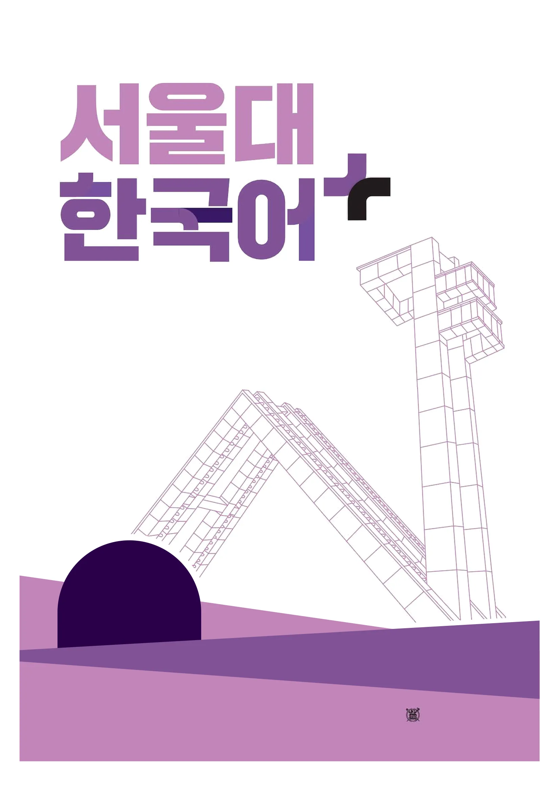
Student's Book서울대학교 언어교육원 지음장소원김정현김민희박미래|||3A서울대학교출판문화원1머리말《서울대 한국어+》는 한국어 학습자들의 한국어 능력이 효과적으로 향상될 수 있도록 서울대학교 언어교육원의 축적된한국어 교육 경험을 녹여 낸 교재입니다. 이 시리즈를 통해 한국어 학습자들은 한국어의 표현 영역인 말하기, 쓰기 기술과이해 영역인 듣기, 읽기 기술을 단계적이고 주도적으로 높여 나갈 수 있습니다.《서울대 한국어+ Student’s Book 3A》는 약 400시간의 정규과정을 마친 일반 목적의 성인 한국어 학습자들이 200시간의정규과정을 통해 한국어 숙달도 중급 수준의 한국어를 학습할 수 있게 구성한 교재입니다. 이 책은 우리 주변에서 흔히 접할수 있는 친숙하고 일상적인 주제를 다루며 정확하고 유창한 한국어 의사소통 능력을 기를 수 있도록 구성하였습니다. 각단원의 주제와 관련된 어휘를 묶어 그림과 함께 제시하여 입체적으로 학습할 수 있도록 하였고, 말하기, 듣기, 읽기, 쓰기기술을 효과적으로 연습할 수 있는 문법과 표현을 선정하여 구성하였습니다.기존 교재가 문법을 교육 내용으로 전면적으로 제시하고 있던 것과 달리 《서울대 한국어+》에서는 문법과 표현을 영어번역과 함께 별도의 책으로 제공하여 학습자들이 이들을 스스로 익혀 의미를 이해한 후 주교재의 활동을 통해서 표현할 수있도록 하였습니다.말하기 활동을 강화하여 학습자들이 익힌 어휘와 문형을 각 단계와 상황에 맞게 활용할 수 있도록 구성하였습니다.일상생활에서 자주 접하는 구어 중심의 듣기, 말하기 활동과 더불어 발표, 인터뷰, 역할극 등 다양한 상황에서 활용할수 있는 말하기, 듣기 기능을 학습함으로써 한국어 학습에 흥미를 느낄 수 있도록 하였습니다. 특히 다양한 장르의 읽기텍스트를 배치하고 이와 관련된 쓰기 활동을 제공하여 이해 영역인 읽기와 표현 영역인 쓰기 활동이 자연스럽게 연계되도록집필하였습니다.쓰기 영역은 단계적으로 구성하여 학습자가 과정 중심의 쓰기 활동을 통해 표현 능력을 향상시킬 수 있게 편제하였습니다.또한 각 단원의 과제는 실제성을 고려하여 단계별로 차근차근 수행할 수 있도록 구성하였으며, 이들 단원에서 학습한 어휘,문법과 표현, 그리고 말하기, 듣기, 읽기, 쓰기를 과제에서 통합적으로 활용할 수 있도록 집필하였습니다.2
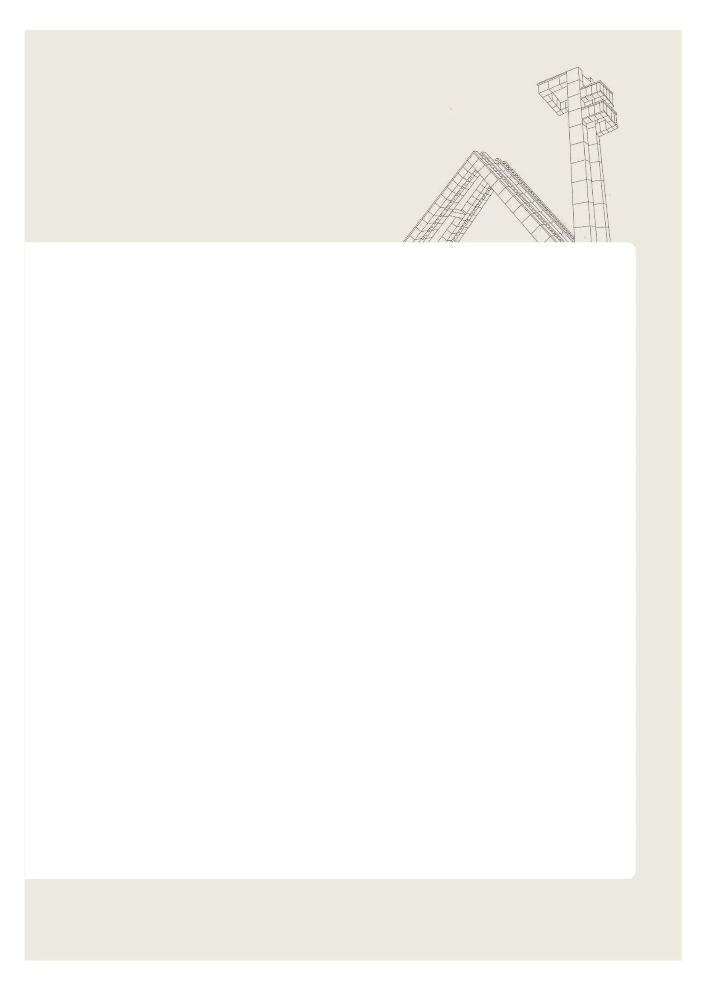
문화 영역은 단원의 주제와 관련된 한국 문화를 상호문화적으로 접할 수 있도록 언어문화적 내용과 사회문화적 내용을복합적으로 고려하여 담았습니다. 발음은 단원의 어휘 또는 문법과 표현, 언어 기능별 기술을 학습하는 데에 관련이 있는필수적인 것들을 선정하여 제시하였고, 연습책의 복습 부분에서 다시 정리, 연습할 수 있도록 구성하였습니다.이 책이 나오기까지 정말 많은 분들의 수고가 있었습니다. 서울대학교 국어국문학과 장소원 교수님은 《서울대 한국어+》1~6급 교재의 기획, 교재 개발을 위한 사전 연구와 집필, 출판에 이르는 전체적인 과정을 총괄해 주셨고, 3급 교재의 집필을총괄한 김정현 선생님을 비롯해서 김민희, 박미래 선생님은 오랜 기간 원고 집필뿐 아니라 편집, 출판 작업을 꼼꼼하게 진행해주셨습니다. 또한 3급 교재 전권의 감수를 맡아 주신 안경화 교수님과 자문을 해 주신 한재영 교수님, 최은규 교수님의 도움이없었다면 지금과 같은 책의 완성도를 기대하기 어려웠음을 잘 알고 있습니다. 깊이 감사드립니다. 그리고 영어 번역을 맡아주신 이소명 번역가와 번역 감수를 맡아 주신 UCLA 손성옥 교수님, 그리고 멋진 삽화 작업으로 빛나는 책을 만들어 주신㈜예성크리에이티브 분들께도 감사드립니다. 또 녹음을 담당해 주신 성우 이상운, 조경아 선생님과 2022년 여름학기에 샘플단원으로 수업을 하신 후 소중한 의견을 주신 3급 정규반의 김정교, 성석제, 신희랑, 이명희, 이창용 선생님께도 진심으로감사의 말씀을 드립니다. 마지막으로 학술 도서와 전혀 성격이 다른 한국어 교재의 출판을 결정하고 물심양면으로 지원해주신 서울대학교출판문화원 이경묵 원장님과, 밤낮을 가리지 않고 고생을 감수하신 실무진 여러분들께도 깊이 감사드립니다.2023년 4월서울대학교 언어교육원 원장장윤희3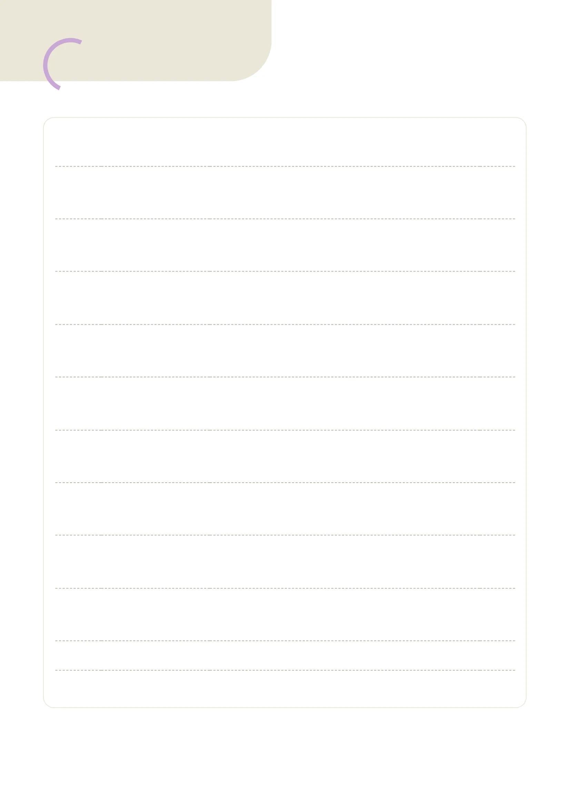
머리말• 2등장인물• 51단원새로운 출발1-1. 시작과 만남• 91-2. 학교생활• 122단원날씨와 여행2-1. 날씨 정보• 182-2. 휴가 계획• 213단원인터넷 콘텐츠3-1. 재미있는 콘텐츠• 273-2. 흥미로운 뉴스• 304단원약속과 만남4-1. 약속• 364-2. 모임 장소• 395단원음식과 조리법5-1. 좋아하는 음식• 455-2. 조리법• 486단원여가 생활6-1. 함께 하는 운동• 546-2. 색다른 취미• 577단원소비와 절약7-1. 소비 성향• 637-2. 중고 거래• 668단원한국 생활8-1. 문제와 해결• 728-2. 문화 차이• 759단원사건과 사고9-1. 사고와 부상• 819-2. 분실• 84문법과 표현• 88어휘• 10843A차례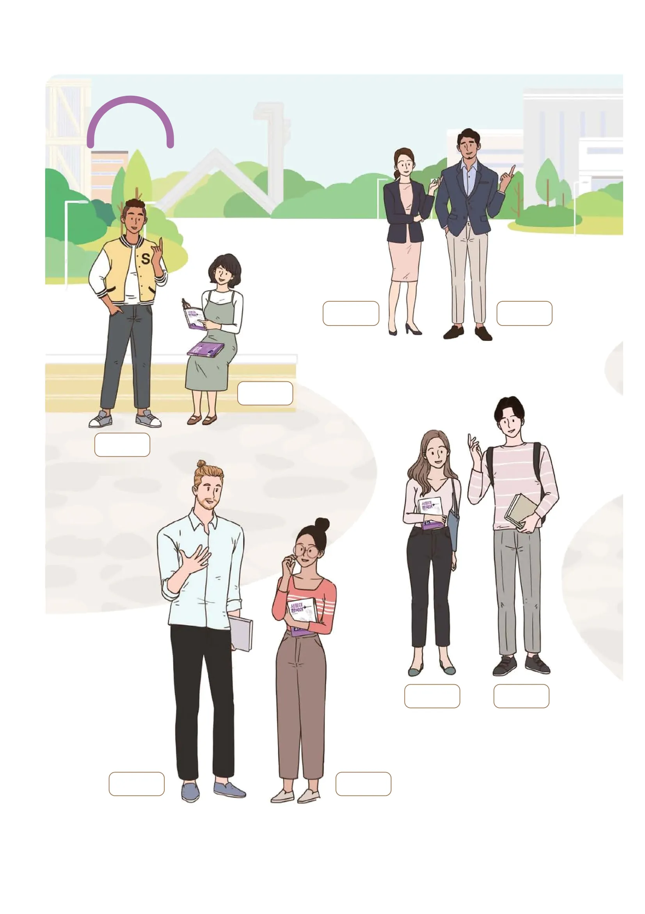
등장인물Qahramonlar나나중국, 선생님엥흐몽골, 사업가마리일본, 선생님테오브라질, 대학생제니미국, 학생김민우한국, 대학생크리스호주, 요리사소날인도, 컴퓨터 프로그래머5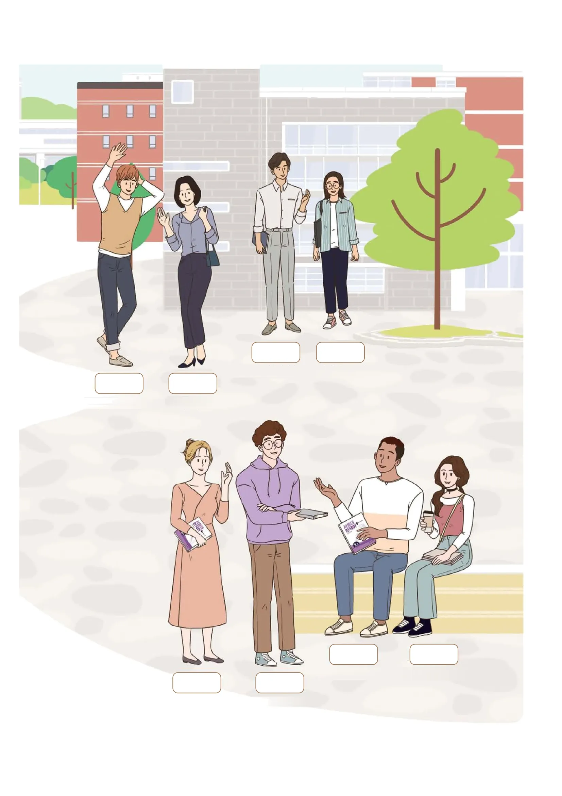
닛쿤태국, 연예인 연습생이유진한국, 회사원하이베트남, 회사원아야나말레이시아, 작가안나러시아, 화가다니엘미국, 대학원생에릭프랑스, 운동선수자밀라우즈베키스탄, 모델6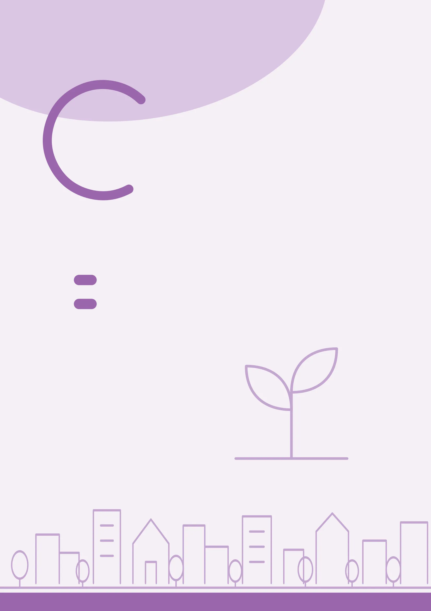
1새로운 출발1-1시작과 만남1-2학교생활새 학기 첫날이라서 떨려요.저도 그래요. 같이 가요.사진 동아리가 재미있다고 들었어요.직접 가 보니까 정말 좋았어요.선배가 회비가 없다고 했어요.그럼 저도 가입해야겠어요.1 어떤 동아리에 관심이 있어요?2 새 친구를 어떻게 사귀어요?
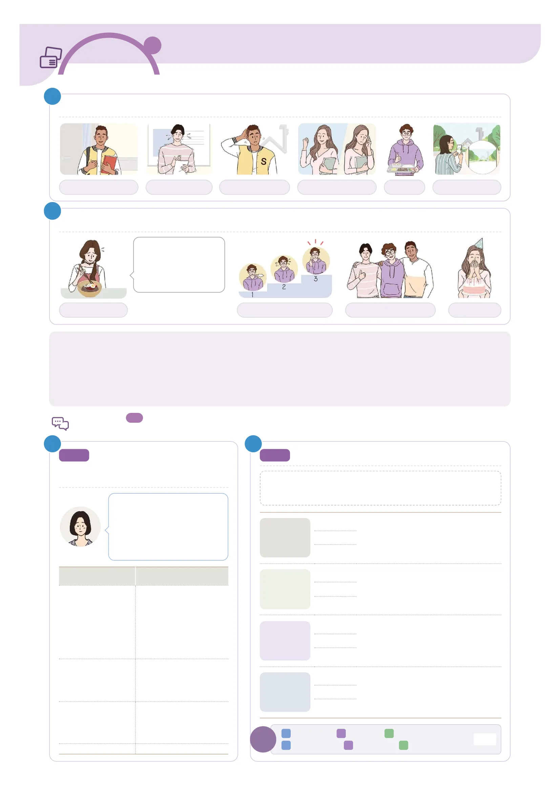
Gapirish말하기1-11-1한가Lug'at어휘시작과 만남1 한국에 처음 온 날 기분이 어땠습니까? 친구들과 이야기해 보세요.설레다떨리다낯설다자신이 있다/없다만족하다인상적이다2 여러분의 한국 생활은 어떻습니까? 친구들과 이야기해 보세요.서투르다적응하다정이 들다잊지 못하다저는 아직 젓가락질이서툴러서 식당에서밥을 먹을 때 좀불편해요.설레다 yuragi hapqirmoq자신이 있다/없다 o'ziga ishonmoq/ishonmaslik서투르다 yaxshi qila olmaslik잊지 못하다 unutilmas bo'lmoq떨리다 hayajonlanmoq (xavotirlanmoq)만족하다 mamnun bo'lmoq적응하다 moslashmoq낯설다 notanish bo'lmoq인상적이다 ta'sirli bo'lmoq정이 들다 kimgadir ko'ngil bog'lamoq준비 1새로 만난 친구를 인터뷰하세요. 그리고 친구가 한 말을 듣고다른 친구에게 전해 주세요.인터뷰 질문에릭한국에 처음 왔을때 어땠어요?낯설고 힘들었어요.그런데 친구들이도와줘서 빨리 적응할수 있었어요.한국어를 배운 지얼마나 됐어요?한국어를 왜배워요?에릭 씨는 한국에 처음 왔을때 낯설고 힘들었다고 했어요.그런데 친구들이 도와줘서빨리 적응할 수 있었다고했어요.준비 2들어서 알게 된 것을 친구에게 전달해 보세요.가: 한국에 오기 전에 한국 음식이 어떻다고 들었어요?나: 매운 음식이 많다고 들었어요.한국 음식맛메뉴가격• 매운 음식이 많다.•우리 학교3급동아리학생 식당• 3급이 2급보다 어렵다.•한국의 교통지하철버스택시• 지하철이 깨끗하고 편리하다.•••동-는다고 하다, 형-다고 하다, 명이라고 하다☞90쪽동-는다고 들었다, 형-다고 들었다, 명이라고 들었다9문법과표현1234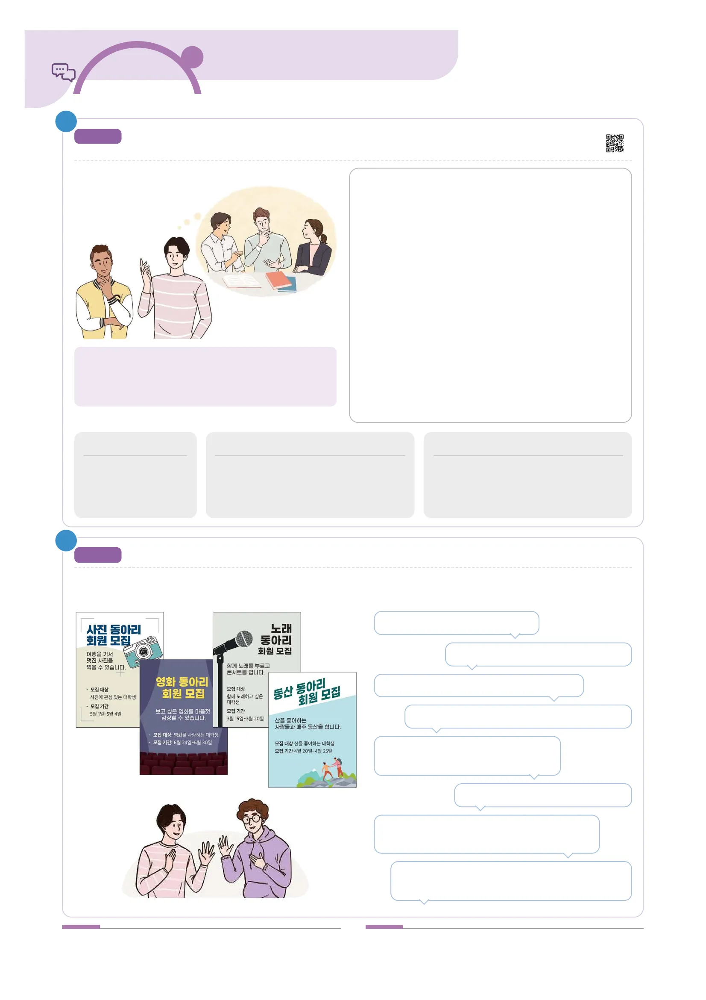
1-1Gapirish말하기말하기 1다음은 동아리에 대한 대화입니다. 새로 알게 된 것에 대해 친구와 이야기해 보세요.1 이 동아리는 무슨 동아리입니까?2 이 동아리에서는 무슨 활동을 합니까?3 한국어를 잘 못해도 이 동아리에 가입할 수 있습니까?테오: 민우야, 나 동아리에 가입하려고 하는데 좋은동아리가 있으면 좀 소개해 줘.민우: 선배한테서 독서 동아리가 좋다고 들었어. 그래서나도 가입해 볼까 해.테오: 독서 동아리에서는 무슨 활동을 하는데?민우: 일주일에 한 번씩 독서 모임을 한다고 해. 책을읽고 나서 느낀 점이나 인상적인 부분을 서로이야기한다고 들었어.테오: 그래? 재미있겠다. 근데 나는 아직 한국말이서투른데 그 동아리에 가입할 수 있을까?민우: 걱정하지 마. 동아리 선배가 우리 학교 학생은 모두가입할 수 있다고 했어. 다음 주부터 신입 회원을모집한다고 하니까 같이 가 보자.테오: 그래. 좋아.동아리독서사진영화들은 정보독서 모임을 하다야외에서 사진을 찍다영화를 감상하다고민한국말이 서투르다사진을 잘 못 찍다한국말을 잘 못하다말하기 2가입하고 싶은 동아리에 대해 이야기해 보세요.1동아리 모집 포스터를 보고 가입하고 싶은 동아리와그 이유를 이야기해 보세요.2가입하고 싶은 동아리에 대해 친구와 이야기해보세요.무슨 동아리에 가입하고 싶어요?저는 사진 동아리에 가입하고 싶어요.사진 동아리에서는 무슨 활동을 하는데요?여행을 가서 멋진 사진을 찍을 수 있다고 해요.저도 사진 동아리에 가입하고 싶어요.모집 기간이 언제라고 해요?5월 1일부터 5월 4일까지라고 해요.그런데 저는 사진을 잘 못 찍는데 그 동아리에가입할 수 있을까요?걱정하지 마세요. 동아리 선배한테서 계속 사진을찍으면 점점 실력이 좋아질 거라고 들었어요.부분 qism신입 회원 yangi a'zo야외 ochiq havoda감상하다 tomosha qilmoq멋지다 ajoyib bo'lmoq마음껏 ko'ngli to'lguncha실력 qobiliyat/mahorat1056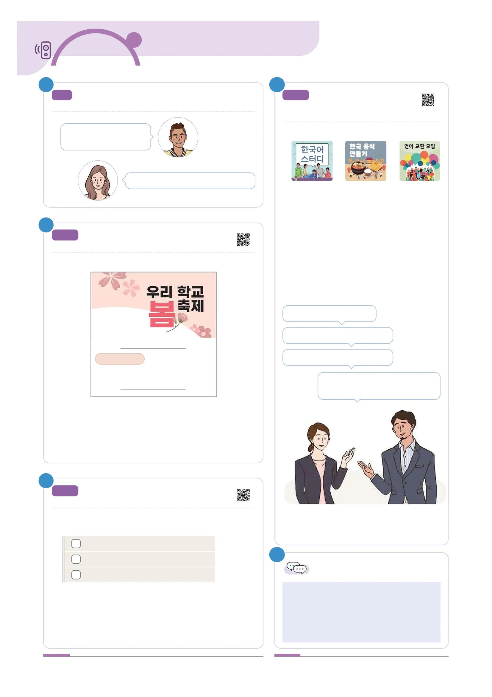
1-1Tinglash듣기준비오늘은 새 학기 첫날입니다. 친구들과 지금 기분이 어떤지 이야기해 보세요.새 친구들과 함께 공부할생각을 하니까 설레어요.저는 앞으로의 한국 생활이 기대돼요.듣기 1다음은 축제에 대한 안내 방송입니다. 잘듣고 질문에 답해 보세요.1 축제 포스터를 완성해 보세요.• 기간: 춤 공연 안내• 일시: 5월 17일 화요일, 오후 4시• 장소: 2 들은 내용으로 맞는 것을 고르세요.① 축제는 한 달 동안 계속된다.② 축제 때 대강당에서 유명 가수의 공연이 열린다.③ 축제 기간에 운동장에서 음식을 사서 먹을 수 있다.듣기 2다음은 기숙사 생활에 대한 대화입니다.잘 듣고 질문에 답해 보세요.1 다음은 기숙사 생활 안내를 들은 학생의 메모입니다.알맞은 것을 모두 고르세요.빨래는 밤 9시 전에 해야 함.기숙사는 밤 11시에 문을 닫음.식사는 밤 10시까지 할 수 있음.2 여자에 대한 설명으로 맞는 것을 고르세요.① 오늘 기숙사에서 요리를 했다.② 한국 사람처럼 한국어를 잘한다.③ 오늘 기숙사 생활 안내를 받지 못했다.듣기 3다음은 모임에 대한 대화입니다. 잘 듣고 질문에 답해보세요.1 어떤 모임에 대해 이야기하고 있습니까?①②③2 남자에 대한 설명으로 맞는 것을 고르세요.① 이번 주 모임에 갈 것이다.② 한국 전통 음식에 관심이 많다.③ 한국 친구를 만나 본 적이 없다.3 들은 내용을 생각하면서 친구의 질문에 답해보세요.모임을 언제 한다고 해요?그 모임에서는 뭘 한다고 해요?그 모임에는 누가 온다고 해요?이번 모임은 일요일에 한다고 해요.모임에서는….친구들과 이야기해 보세요.• 친구들에게 알려 주고 싶은 유학 생활 정보가 있습니까?• 지금까지 가 본 모임이나 앞으로 가 보고싶은 모임이 있습니까?대강당 majlislar zali틀림없이 albatta세탁실 kir yuvish xonasi모임에 나가다 yig'ilishga qatnashmoq117891011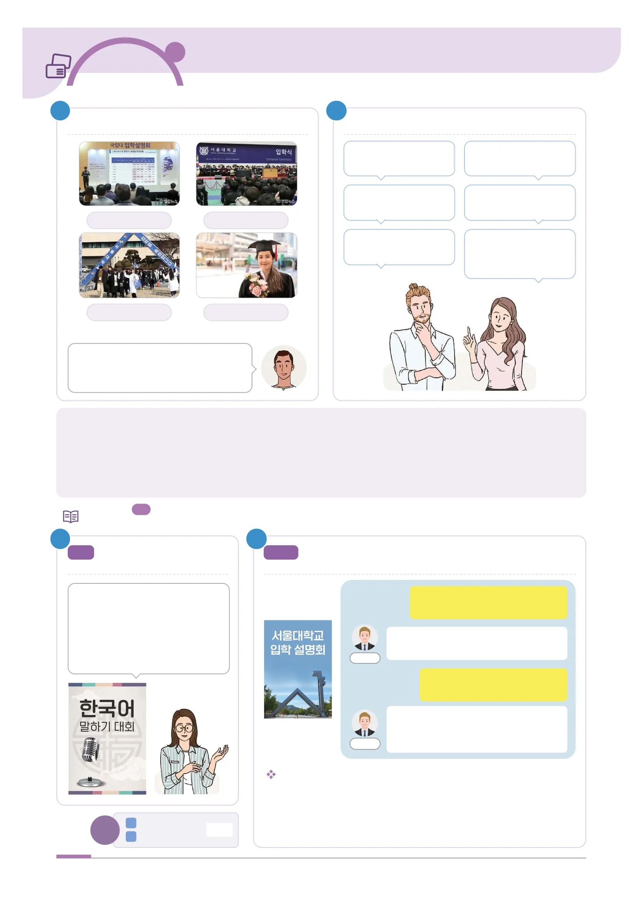
O'qish읽기1-2동-어 보니(까)☞91쪽동-어야겠다1-2한가Lug'at어휘학교생활1 학교 행사에 가 본 경험을 이야기해 보세요.입학 설명회입학식신입생 환영회졸업식저는 동생 졸업식에 참석한 적이 있어요.기념사진을 찍고 나서 다 같이 맛있는음식을 먹으러 갔어요.2 대학 생활에 대해 이야기해 보세요.대학에서 뭘 전공하고싶어요?지원해 보고 싶은학교나 학과가 있어요?개강 모임에 꼭참석해야 할까요?대학에서 듣고 싶은강의가 있어요?참가해 보고 싶은대회가 있어요?학교에서 발급받은학생증으로 뭘 할 수있어요?입학 설명회 qabul bo'yicha tanishtiruv yig'ilishi신입생 환영회 birinchi kurslarni kutib olish학과에 지원하다 fakultetga hujjat topshirmoq학생증을 발급받다 talabalik guvohnomasiberilmoq강의를 듣다 ma'ruzaga qatnashmoq입학식 qabul marosimi졸업식 bitiruv경제학을 전공하다 iqtisodiyot mutaxassisligida o'qimoq개강 모임에 참석하다 semestr boshi yig'ilishiga qatnashmoq체육 대회에 참가하다 sport musobaqasida qatnashmoq준비학교생활에서 기억에 남는 일을 이야기해 보세요.저는 한국어 말하기 대회에 참가한경험을 잊을 수 없어요. 말하기대회에 참가해 보니까 한국말을잘하는 친구들이 많았어요. 그래서저도 더 열심히 공부해야겠다고생각했어요.읽기 1다음은 두 사람이 주고받은 문자 메시지입니다. 잘 읽고질문에 답해 보세요.입학 설명회에 갔다 왔다고 들었어.가 보니까 어땠어?헨리다양한 정보를 얻을 수 있어서 정말좋았어.그 학교에 지원할 거야?경영학을 전공하고 싶다고 했지?헨리응. 그런데 내가 생각한 것보다 준비할게 많은 것 같아. 앞으로 더 열심히공부해야겠어.내용과 일치하면 ○, 일치하지 않으면 × 하세요.1) 헨리는 경영학 전공에 관심이 있다.( )2) 헨리는 앞으로 열심히 공부할 것이다.( )3) 헨리는 입학 설명회에 참석하지 못했다.( )얻다 olmoq경영학 biznes boshqaruvi12문법과표현1234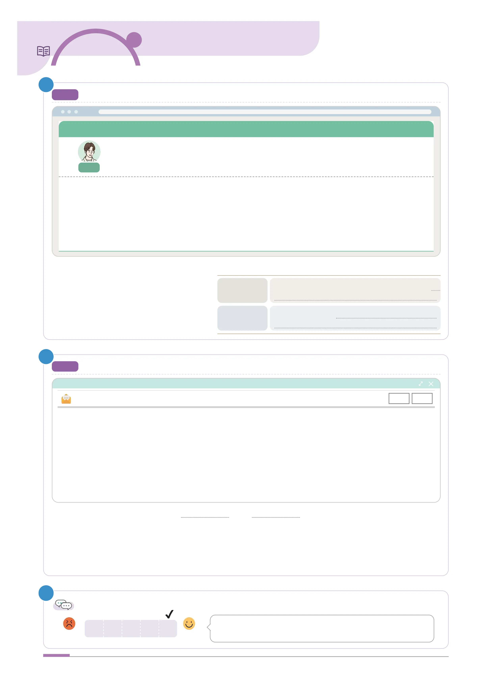
1-2O'qish읽기읽기 2다음은 인터넷 게시판에 올라온 글입니다. 잘 읽고 질문에 답해 보세요.한국을 사랑하는 사람들의 모임 안녕하세요? 저는 대학 입학시험에 합격해서 다음 달에 한국에 가요.한국에서 살고 있는 선배님들한테서 유학 생활 이야기를 듣고 싶어요.↳ 요코먼저 합격을 축하드려요. 앞으로 한국어를 열심히 공부해야겠네요. 신입생 환영회에는 꼭 가는게 좋아요. 교수님과 선배들, 같은 과 친구들을 만날 수 있는 좋은 기회예요. 거기에 참석해보니까 정말 도움이 많이 됐어요.↳ 줄리앙저도 1년 전에 대학교에 합격해서 한국에 오게 됐어요. 처음에는 한국에 아는 사람이 없어서많이 외로웠어요. 마틴 씨도 한국 생활이 많이 낯설 거예요. 그런데 저는 동아리 활동을 하면서한국 생활에 적응할 수 있었어요. 마틴 씨도 동아리 활동을 하면 한국에 금방 정이 들 거예요.1 이 글의 내용으로 맞는 것을 고르세요.① 마틴은 한국에서 유학하고 있다고 했다.② 줄리앙은 지금도 한국 생활이 낯설다고 했다.③ 요코는 신입생 환영회에 꼭 가는 게 좋다고했다.2 이 글을 읽고 알게 된 내용을 써 보세요.신입생 환영회신입생 환영회에는 꼭 가는 게 좋다고 한다. 왜냐하면동아리동아리 활동을 하면마틴읽기 3다음은 친구에게 보낸 편지입니다. 잘 읽고 질문에 답해 보세요._선우에게답장전달안녕? 잘 지내고 있지? 한국에 도착하면 바로 연락하겠다고 했는데 벌써 일주일이 지났네. 네가 한국에서 살면프랑스 음식이 그리울 거라고 했는데 아직은 괜찮아. 한국 음식이 맵다고 들어서 좀 걱정했는데 먹어 보니까생각보다 괜찮았어. 금방 적응할 수 있을 것 같아. 그리고 네 말처럼 지하철을 타 보니까 정말 빠르고 편리했어.프랑스에서 같이 공부할 때 네가 고향 이야기를 자주 해서 한국이 어떤 곳인지 많이 궁금했는데 훨씬 더 재미있는곳인 것 같아. 얼마 전에 입학식에서 만난 친구한테서 한국에 좋은 곳이 많다고 들었어. 시간이 있으면 여행을 자주다녀야겠어. 아직 서투른 것이 많지만 앞으로의 한국 생활이 정말 기대돼. 내일은 첫 수업이 있는 날인데 긴장이돼서 잠이 안 오네. 학점을 잘 받으려면 앞으로 열심히 공부해야 할 것 같아. 그럼 또 연락할게.서울에서 에릭1 누가 누구에게 쓴 편지입니까? 이/가 에게 쓴 편지2 이 편지를 쓴 이유는 무엇입니까?① 프랑스에 있는 한국 친구에게 부탁을 하려고② 한국에 있는 프랑스 친구에게 안부를 전하려고③ 프랑스에 있는 한국 친구에게 소식을 전하려고3 이 글을 쓴 사람에 대한 내용으로 맞는 것을 고르세요.① 지금 한국에서 강의를 하고 있다.② 앞으로의 한국 생활을 기대하고 있다.③ 한국 음식이 입에 안 맞아서 스트레스를 받고 있다.한국 생활에 얼마나 만족하고 있는지 표시하고 그 이유를 이야기해 보세요.불만족만족12345저는 한국 생활에 매우 만족해요. 한국에서 살아 보니까 사람들도친절하고 음식도 정말 맛있어요.학점 o'rtacha baho (GPA)안부 salomlar불만족 norozilik13567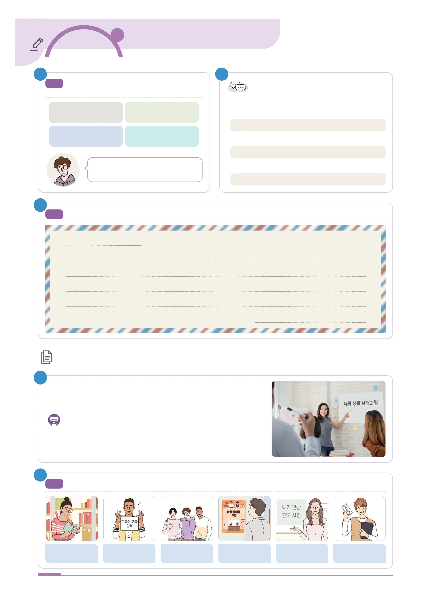
Vazifa과제1-2Yozish쓰기준비대학생이 되면 꼭 해 보고 싶은 일이 있습니까?새로운 동아리만들기친구 사귀기축제 참가하기엠티 가기대학생이 되면 같은 과 친구들과새로운 동아리를 만들어야겠어요.여러분의 학교생활에 대해 이야기해 보세요.• 학교에 다니기 전에 학교생활에 대해 어떤 말을들었습니까?• 학교에 다녀 보니까 어떻습니까?• 앞으로 학교에 다니면서 해 보고 싶은 일이 있습니까?쓰기고향 친구에게 여러분의 학교생활을 소개하는 편지를 써 보세요.에게안녕? 잘 지내고 있지?‘대학 생활 잘하는 법’에 대해 발표하려고 합니다. 친구들에게학교생활에 도움이 되는 정보를 물어보세요. 그리고 그 내용을정리해서 발표해 보세요.준비발표하고 싶은 주제를 정하고 그 이유를 말해 보세요.도서관 이용하기한국어 시험에합격하기한국 친구 사귀기아르바이트 구하기발표에서 좋은점수 받기장학금 받기엠티 talabalar sayohati (MT)1489101112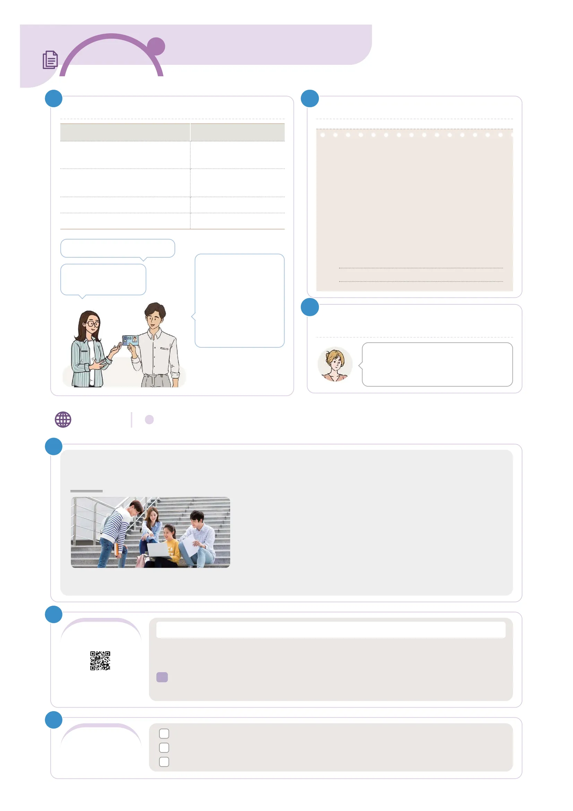
Madaniyat문화대학생들의 호칭 문화1-2Vazifa과제1 질문지를 만들고 친구들을 인터뷰해 보세요.도서관 이용하기대답1. 도서관은 어떻게 이용해요?학생증을 발급받아야한다.2. 도서관은 몇 시부터 몇 시까지문을 열어요?3. 도서관에서 뭘 할 수 있어요?도서관은 어떻게 이용해요?저도 빨리 학생증을신청해야겠어요.도서관을 이용하고싶으면 먼저학생증을발급받아야 돼요.학생증이 있으면도서관에 들어갈 수있어요.2 친구에게 들은 내용을 정리해 보세요.도서관 이용하기1. 도서관을 이용하고 싶으면 먼저 학생증을발급받아야 한다.2. 도서관은 오전 8시부터 오후 8시까지 문을연다. 그리고 주말과 공휴일에는 문을 닫는다.3. 도서관에서는 책을 빌리거나 숙제를 할 수있다. 그리고 음악을 듣거나 영화를 볼 수도있다.4..3 위에서 정리한 내용을 발표해 보세요. 그리고발표를 가장 잘한 사람을 뽑아 보세요.도서관을 이용하고 싶으면 먼저학생증을 발급받아야 한다고 해요.그리고 ….대학일보다양해지는 대학의 호칭 문화,“저는 ‘○○ 씨’라고 부르는 게 편하고 좋아요.”↳ 한국에서는 나이가 많은 사람을 부를 때 이름을 부르지 않습니다.대학에서는 ‘선배’라는 호칭을 사용하는데 친근한 느낌을 주기 위해서‘형’이나 ‘오빠’, ‘언니’나 ‘누나’라고 부르기도 합니다. 그런데 이러한 호칭문화가 다양해지고 있습니다. 최근 같은 학교 선후배 사이에서 ‘○○ 씨’라고 부르거나 ‘○○ 님’이라고 부르는 일이 있다고 합니다. 이들은서로의 이름을 부르면 선후배 관계가 부드러워지는 것 같아서 편하고좋다고 말합니다. 하지만 아직 이런 호칭이 불편하다고 느끼는 사람들도많이 있습니다.발음Talaffuz독서 동아리가 좋다고[조타고] 들었어.받침 ‘ㅎ’ 뒤에 자음 ‘ㄱ, ㄷ, ㅈ’이 오면 [ㅋ, ㅌ, ㅊ]로 발음되고 받침소리 [ㄱ, ㄷ, ㅂ, ㅈ] 뒤에 ‘ㅎ’이 오면 [ㅋ, ㅌ, ㅍ, ㅊ]로 발음됩니다.예원하는 대학교에 입학하려면 어떻게 해야 할까요?한국에 처음 왔을 때 한국말이 서툴러서 답답했어요.자기 평가Tekshiruv들은 내용을 다른 사람에게 전달할 수 있다.학교생활을 소개하는 글을 쓸 수 있다.학교생활에 대한 정보를 다른 사람에게 소개해 줄 수 있다.151314151617182날씨와 여행2-1날씨 정보2-2휴가 계획
주말에 비가 온대요.그럼 길이 막힐 텐데 일찍 가요.제주도는 뭐로 유명해요?귤하고 바다로 유명해요.민수 씨가 같이 가자고 했어요.좋아요. 저도 갈게요.1 어떤 날씨를 제일 좋아해요?2 기억에 남는 여행지가 어디예요?
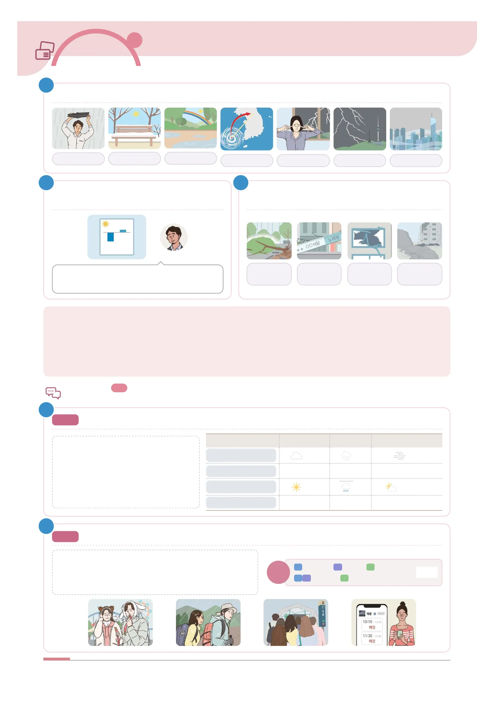
Gapirish말하기2-12-1한가Lug'at어휘날씨 정보1 그림을 보고 날씨가 어떤지 이야기해 보세요.소나기가 내리다눈이 그치다날씨가 개다태풍이 올라오다천둥이 치다번개가 치다안개가 끼다2 일기 예보를 보고 오늘 날씨에 대해 이야기해 보세요.2℃-7℃아침낮오늘 아침 최저 기온은 영하 7도, 낮 최고기온은 영상 2도라고 합니다.3 날씨 때문에 생길 수 있는 문제에 대해 이야기해 보세요.(나무가)쓰러지다(간판이)떨어지다(창문이)부서지다(건물이)무너지다소나기가 내리다 to'satdan jala quyadi눈이 그치다 qor to'xtaydi날씨가 개다 havo ochiladi태풍이 올라오다 tayfun shimolgako'tariladi천둥이 치다 momaqaldiroq guldiraydi번개가 치다 chaqmoq chaqadi안개가 끼다 tumanli bo'lmoq최고 기온/최저 기온 eng yuqoriharorat/eng past harorat영상/영하 0℃ dan yuqori/0℃ dan past(나무가) 쓰러지다 (daraxt) yiqilmoq(간판이) 떨어지다 (peshlavha) qulabtushmoq(창문이) 부서지다 (deraza) chil-chilsinmoq(건물이) 무너지다 (bino) qulamoq준비 1날씨 정보를 확인하고 날씨에 대해 이야기해 보세요.가: 이번 주 토요일에 서울은 날씨가어떻대요?나: 눈이 내린대요. 그리고 최저 기온이영하 3도래요.가: 그래요? 토요일에는 두꺼운 옷을입어야겠어요.금요일토요일일요일서울흐림눈안개최고 기온/최저 기온12℃/4℃5℃/-3℃10℃/2℃제주도맑음비구름 많음최고 기온/최저 기온16℃/10℃12℃/8℃14℃/9℃준비 2그림을 보고 친구에게 주말에 무엇을 하면 좋을지 제안해 보세요.가: 주말에 같이 놀이공원에 갈까?나: 주말에 날씨가 추울 텐데 박물관에 가는 게 어때?가: 그래. 그게 좋겠다.동-는대(요), 형-대(요), 명이래(요)☞92쪽동형-을 텐데, 명일 텐데1)2)3)4)매진 sotilib tugagan18문법과표현12345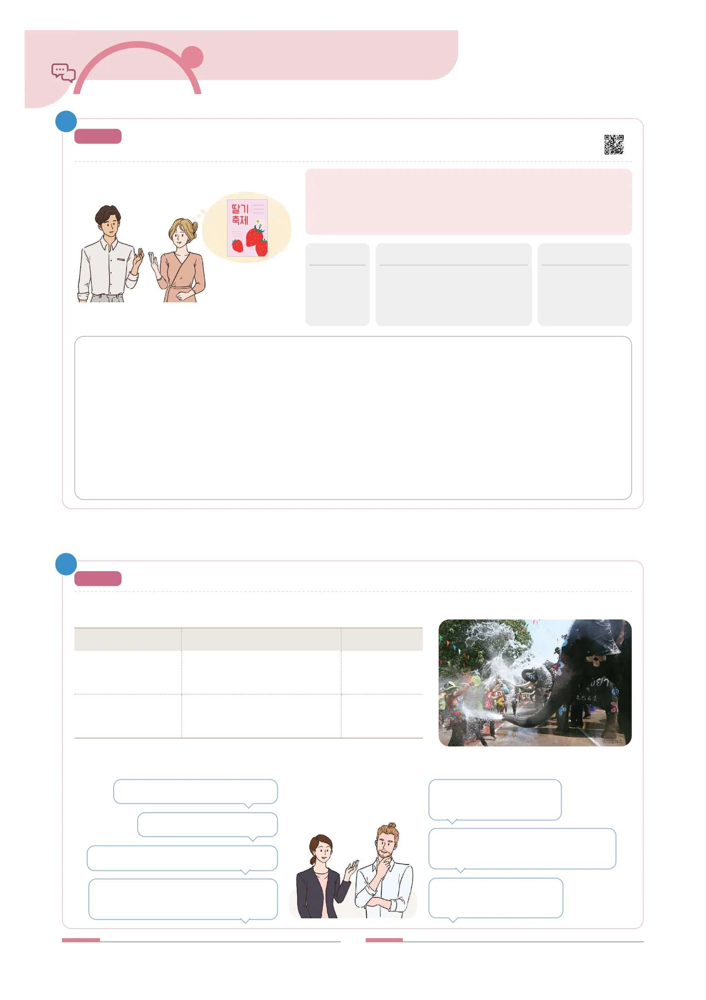
2-1Gapirish말하기말하기 1다음은 주말 계획에 대한 대화입니다. 친구와 주말 계획을 이야기하고 날씨를 확인해 보세요.1 두 사람은 주말에 어디에 가기로 했습니까?2 그곳에서 무엇을 할 수 있습니까?3 그곳의 주말 날씨는 어떻습니까?가고 싶은 곳딸기 축제눈꽃 축제음악 축제축제에서 할 수 있는 일딸기를 따는 체험을 하다눈썰매를 타다야외에서 연주를 듣다날씨흐리고 바람이 불다눈이 오다소나기가 내리다안나: 이번 주말에 딸기 축제가 열린대요. 같이 가 볼래요?하이: 딸기 축제요? 거기에서 뭘 할 수 있는데요?안나: 딸기를 직접 따 보는 체험을 할 수 있대요. 그리고 딸기로 만든 다양한 음식을 먹어 볼 수도 있대요.하이: 정말 재미있겠네요. 같이 가요. 제가 주말 날씨를 확인해 볼게요.안나: 주말에 날씨가 어떻대요?하이: 흐리고 바람이 많이 분대요.안나: 그래요? 바람이 불면 좀 추울 텐데 겉옷을 가지고 가야겠네요.하이: 그게 좋겠어요.말하기 2여행 가고 싶은 곳과 그곳의 날씨에 대해 이야기해 보세요.1가 보고 싶은 곳에 대해 친구와 이야기해 보세요.가 보고 싶은 곳그곳에서 할 수 있는 것그곳의 날씨태국‘송끄란 축제’서로 물을 뿌리면서신나게 축제를 즐긴다.무척 덥다.2여행 가고 싶은 곳과 그곳의 날씨에 대해 친구와 이야기해 보세요.여행 가 보고 싶은 곳이 있어요?거기에서 뭘 할 수 있대요?재미있겠네요. 그때 날씨는 어떻대요?날씨가 더우면 여행하기 힘들 텐데요.시원한 옷을 가지고 가야겠어요.저는 태국 송끄란 축제에가 보고 싶어요.사람들과 서로 물을 뿌리면서 신나게축제를 즐길 수 있대요.무척 덥대요. 최고 기온이35도까지 올라간대요.딸기를 따다 qulupnay termoq겉옷 ustki kiyim눈썰매 chana물을 뿌리다 suv sepmoq즐기다 zavqlanmoq무척 nihoyatda1967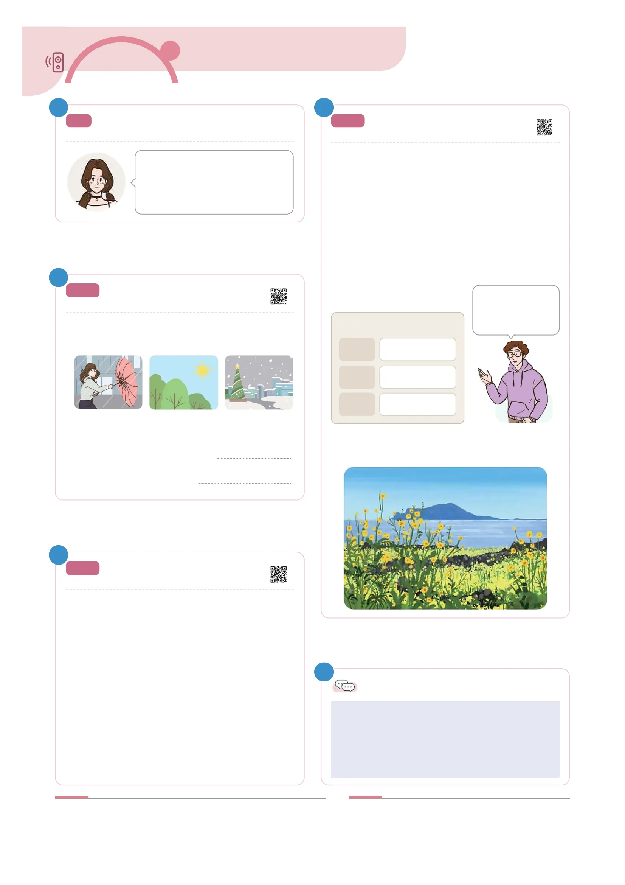
2-1Tinglash듣기준비친구들과 고향의 오늘 날씨에 대해 이야기해 보세요.제 고향은 오늘 날씨가 맑대요.오늘 아침 최저 기온은 영하2도래요. 그리고 낮 최고 기온은영상 5도까지 올라간대요.듣기 1다음은 일기 예보 방송입니다. 잘듣고 질문에 답해 보세요.1 오늘 부산의 날씨로 맞는 것을 고르세요.①②③2 사람들은 어떻게 해야 합니까?• 산이나 바닷가에 있는 사람들은.• 가능하면 외출을 하지 말고.듣기 2다음은 휴가에 대한 대화입니다.잘 듣고 질문에 답해 보세요.1 대화가 끝난 후 여자가 이어서 할 행동으로 맞는 것을 고르세요.① 국내 여행 계획을 세운다.② 비행기표가 남아 있는지 알아본다.③ 인터넷으로 여행 가는 곳의 날씨를 확인한다.2 들은 내용으로 맞는 것을 고르세요.① 여자는 발리에 가서 요가를 배웠다.② 여자는 휴가 때 여행 갈 곳을 알아보고 있다.③ 여자는 비행기표가 없어서 여행을 못 가게 되었다.듣기 3다음은 여행에 대한 대화입니다.잘 듣고 질문에 답해 보세요.1 두 사람이 제주도로 여행을 가게 된 이유는 무엇입니까?① 태풍 때문에 비행기가 결항해서② 발리로 가는 비행기표가 없어서③ 제주도에서 특별한 음식을 먹고 싶어서2 두 사람의 여행 계획을 듣고 써 보세요. 그리고 정리한 내용을 말해 보세요.제주도 여행숙소음식관광지3 여러분은 제주도에 가 보거나 제주도에 대해 들은적이 있습니까?두 사람은제주도로 여행을간대요. 그리고… .친구들과 이야기해 보세요.• 날씨 때문에 휴가 계획을 바꾸거나 취소한 적이있습니까?• 꼭 가 보고 싶은 여행지가 있습니까? 거기에서 무엇을 하고 싶습니까?전국적 yurt bo'ylab 영향 ta'sir심하다 jiddiy bo'lmoq피하다 qochmoq가능하다 mumkin bo'lmoq실내 bino ichida동창 saboqdosh발리 Bali활짝 keng ochilib 풍경 manzara국내 여행 ichki sayohat성수기 mavsum cho'qqisi펜션 dam olish uchun ijara uy결항하다 bekor qilinmoq고기국수 cho'chqa go'shtli lag'mon sho'rvasi우도 Udo oroli여행지 sayohat manzili2089101112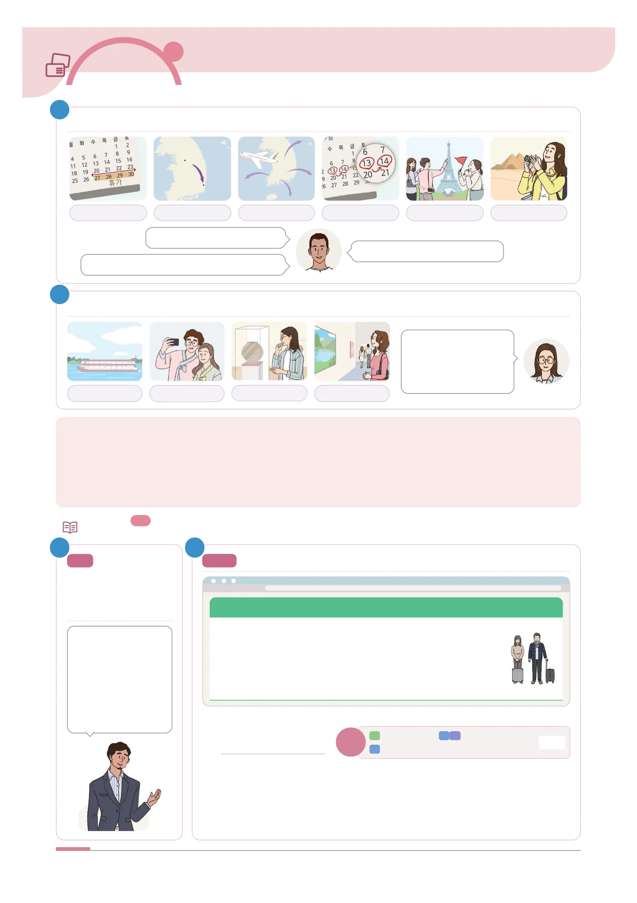
O'qish읽기2-22-2한가Lug'at어휘휴가 계획1 여행에 대해 이야기해 보세요.휴가를 떠나다해외여행계획을 변경하다패키지여행자유 여행국내 여행서울경주어디로 휴가를 떠나고 싶어요?날씨 때문에 여행 계획을 변경한 적이 있어요?누구와 함께 여행을 하고 싶어요?2 여행을 가서 무엇을 하고 싶습니까?유람선을 타다문화를 체험하다전시를 관람하다그림을 감상하다저는 유람선을 타 보고싶어요. 배 위에서 보는풍경이 멋있을 것같아요.휴가를 떠나다 ta'tilga chiqmoq국내 여행 ichki sayohat해외여행 xalqaro sayohat계획을 변경하다 rejani o'zgartirmoq패키지여행 paket tur자유 여행 mustaqil sayohat유람선을 타다 kruizga chiqmoq문화를 체험하다 madaniyatni his qilibko'rmoq전시를 관람하다 ko'rgazmani tomoshaqilmoq그림을 감상하다 rasmni tomoshaqilmoq준비한국에서여행하고 싶은곳에 대해이야기해보세요.저는 경주로 여행을가고 싶어요. 경주는유적지가 많기로유명하다고 들었어요.그래서 고향 친구가놀러 오면 같이가자고 할 거예요.읽기 1다음은 인터넷 카페에 올라온 글입니다. 잘 읽고 질문에 답해 보세요.여행사랑 카페친구들이 이번 겨울 방학에 여행을 가자고 했어요. 아름다운경치로 유명한 곳에 가서 그곳의 문화를 체험해 보고 싶어요. 그런데바빠서 여행을 준비할 시간이 없어요. 그래서 다른 사람이 추천해주는 일정을 따라서 여행하고 싶어요. 저에게 딱 맞는 여행지를추천해 주세요.1 이 글을 쓴 이유는 무엇입니까?명으로 유명하다, 동형-기로 유명하다☞93쪽동-자고 하다2 잘 읽고 내용과 일치하면 ○, 일치하지 않으면 × 하세요.1) 이 사람은 바빠서 여행을 갈 수 없다.( )2) 이 사람은 가족들과 여행을 가려고 한다.( )3) 이 사람은 경치가 좋은 곳에 가서 그곳의 문화를 배워 볼 것이다.( )유적지 tarixiy joy추천하다 tavsiya qilmoq딱 맞다 aynan mos kelmoq21문법과표현1234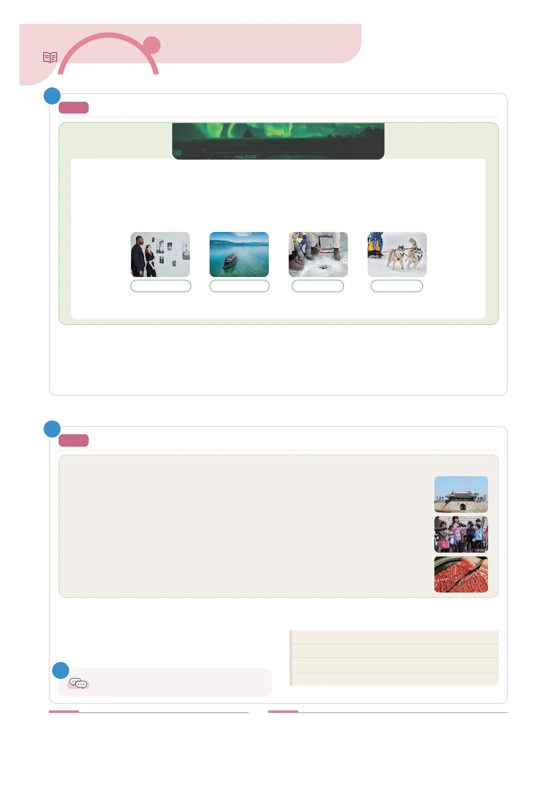
2-2O'qish읽기읽기 2다음은 오로라 여행에 대한 글입니다. 잘 읽고 질문에 답해 보세요.초록색 카펫이 펼쳐진 밤하늘 아래로 휴가를 떠나는 생각을 해 본 적이 있습니까?오로라가 아름답기로 유명한 옐로나이프에 여러분을 초대합니다.지금 소중한 사람에게 오로라를 보러 가자고 해 보세요.• 기간: 4박 5일• 날씨: 최고 기온 -15℃, 최저 기온 -29℃• 준비물: 따뜻한 옷, 비상약• 선택 관광: 오로라 여행은 밤 10시부터 시작됩니다. 오전이나 오후에는 선택 관광을 하실 수 있습니다.미술관 관람유람선 탑승낚시 체험썰매 체험1 이 글을 쓴 이유는 무엇입니까?① 여행 예약을 문의하려고② 여행 상품을 소개하려고③ 일정 변경을 안내하려고2 이 글의 내용으로 맞는 것을 고르세요.① 따뜻한 옷과 비상약을 직접 준비해야 한다.② 날씨가 좋지 않아도 여행 일정은 바뀌지 않는다.③ 오후에는 다 같이 미술관을 관람하고 유람선을 타러 간다.자연이 준 선물, 오로라 투어※ 선택 관광을 원하시는 분들은 따로 신청해 주십시오.※ 눈이 많이 내리거나 날씨가 흐리면 여행 일정이 변경될 수 있습니다.읽기 3다음은 여행지를 소개하는 글입니다. 잘 읽고 질문에 답해 보세요.짧지만 재미있게, 1박 2일 수원 여행수원의 날씨는 서울의 날씨와 비슷합니다. 가장 여행하기 좋을 때는 봄이나 가을입니다. 이때의최고 기온은 23도, 최저 기온은 15도 정도로 따뜻합니다.수원에서는 세계문화유산으로 유명한 화성을 구경할 수 있고 박물관도 관람할 수 있습니다.그리고 활쏘기, 전통 공예품 만들기 등 여러 가지 문화도 체험해 볼 수 있습니다. 맛있기로 유명한갈비도 꼭 먹어 봐야 합니다.수원은 서울에서 매우 가깝고 교통도 편리합니다. 그래서 여유롭게 여행할 수 있는 자유 여행을추천해 드립니다. 수원의 다양한 관광지를 짧은 시간 안에 빠르게 둘러보고 싶으면 시티 투어를이용해 보세요. 패키지여행처럼 편하게 여행할 수 있습니다. 당일 여행도 괜찮지만 한옥 숙소에서편하게 쉴 수 있는 1박 2일 여행도 좋습니다.지금 당장 여행을 떠나고 싶으신가요? 가족과 친구에게 수원으로 여행을 떠나자고 해 보세요.1 수원 날씨에 대한 설명으로 맞는 것을 고르세요.① 7~8월이 가장 여행하기 좋다.② 서울의 날씨와 크게 다르지 않다.③ 1년 중 가장 더울 때의 기온은 23도이다.2 다음은 수원 여행 일정표입니다. 이 글에서 소개한 내용을 모두 고르세요.첫째 날① 오전 11시: 수원 화성 둘러보기② 오후 1시: 수원 갈비 먹기③ 오후 4시: 전통 공예품 구경하기여러분이 가 본 여행지 중에서 추천하고 싶은곳은 어디입니까? 그 이유는 무엇입니까?자연 tabiat오로라 qutb yog'dusi카펫 gilam펼쳐지다 yoyilmoq옐로나이프 Yellounayf비상약 birinchi yordam dorisi탑승 chiqish (transportga)일정 sayohat rejasi세계문화유산 Jahon merosi화성 Xvason qal'asi활쏘기 kamondan otish전통 공예품 an'anaviy hunarmandlik buyumi여유롭다 bemalol, xotirjam bo'lmoq둘러보다 aylanib ko'rmoq시티 투어 shahar sayohati당일 (여행) bir kunlik (sayohat)당장 darhol22567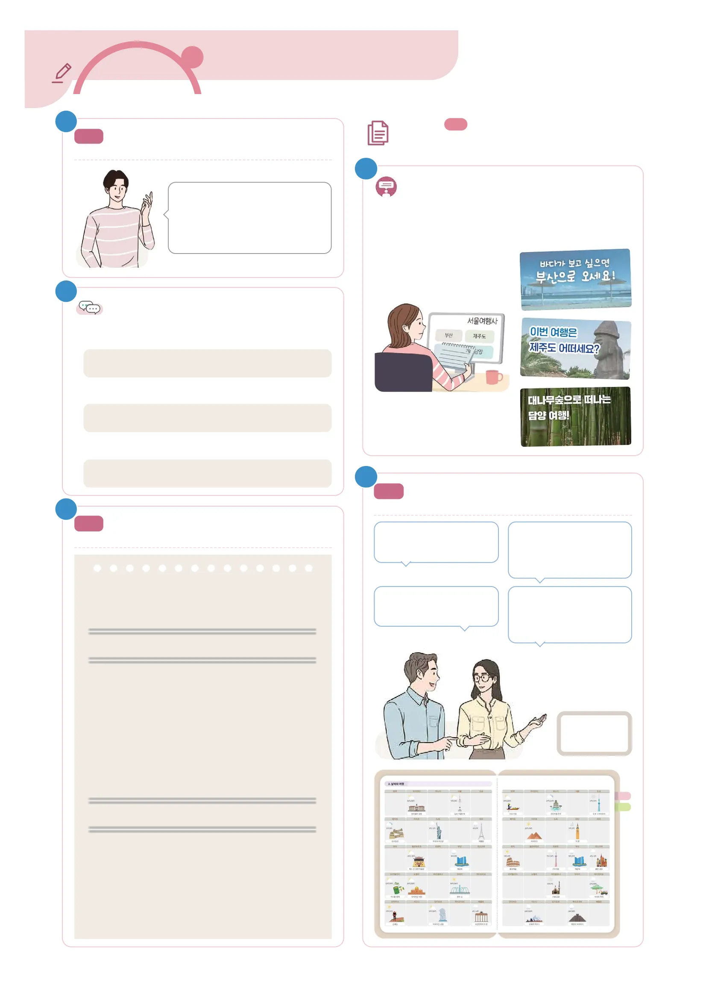
Vazifa과제2-22-2Yozish쓰기준비이번 휴가를 어디에서 누구와 함께 보내고싶습니까?속초는 바다가 아름답기로유명하대요. 그래서 외국친구들이 한국에 오면 속초에가자고 할 거예요.고향의 유명한 여행지에 대해 이야기해보세요.• 그곳의 날씨는 어떻습니까?• 그곳에서 유명한 것은 무엇입니까?• 그곳에서 꼭 해 봐야 하는 것이 있습니까?쓰기고향의 유명한 여행지를 소개하는 글을 써보세요.친구들과 휴가를 떠나려고 합니다. 여러도시의 날씨 정보와 여행 정보에 대해이야기해 보세요. 그리고 여행 가고 싶은도시를 정한 후 여행 일정을 짜 보세요.준비여행 가고 싶은 곳의 날씨와 여행 정보를찾아보세요.주말에 부산 날씨가어떻대요?비가 올 거래요. 최고기온은 16도이고 최저기온은 9도쯤 된대요.부산은 뭐가유명하대요?해운대 바다가아름답기로유명하대요.활동지168~169쪽2389101112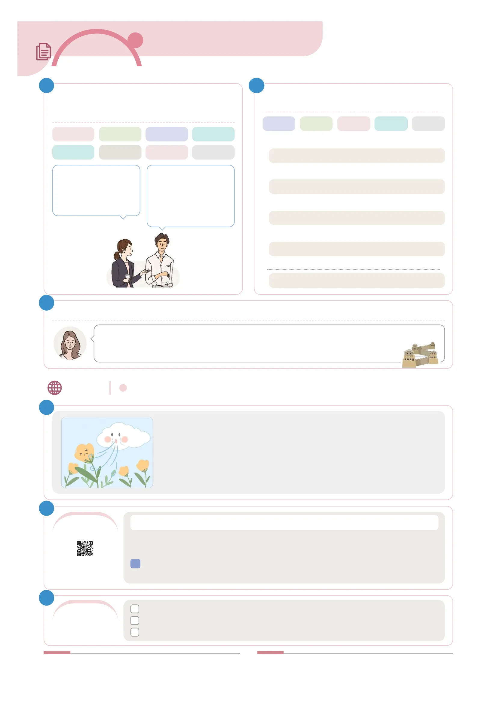
Madaniyat문화꽃샘추위2-2Vazifa과제1 여러분은 여행지를 결정할 때 무엇을 중요하게생각합니까? 친구들과 이야기한 후 가고 싶은여행지를 정해 보세요.음식비용교통쇼핑날씨볼거리거리?베이징으로 휴가를떠나는 게 어때요?음식도 맛있고 구경할곳도 많대요.베이징도 좋지만부산에 가는 게 어때요?가까운 곳으로 여행을가면 비용을 아낄 수있을 거예요.2 여행지에서 친구들과 무엇을 하면 좋을지계획을 세워 보세요.체험음식준비물쇼핑?• 거기에서 뭘 할 수 있어요?• 거기에서 꼭 먹고 싶은 음식이 있어요?• 거기에 갈 때 꼭 가져가야 하는 것이 있어요?• 거기에서 꼭 사야 하는 기념품이 있어요?•?3 이야기한 내용을 정리해서 발표해 보세요.친구가 베이징으로 휴가를 떠나자고 해서 이번 주말에 베이징에 가기로 했어요. 베이징은만리장성으로 유명하대요. 그곳을 구경한 후에는 오리 요리를 먹을 거예요. 요즘 베이징은날씨가 좀 쌀쌀하고 눈이 내린대요. 그래서 따뜻한 옷을 가져가려고 해요.↳추운 겨울이 지나고 봄이 오면 날씨가 따뜻해집니다. 그런데 봄이 시작되고 꽃이필 때 날씨가 다시 추워지기도 합니다. 이것을 ‘꽃샘추위’라고 합니다. 겨울이 봄에꽃이 피는 것을 샘내서 다시 추워지는 것이라고 사람들이 생각하기 때문입니다. 이시기에는 추워진 날씨 때문에 겨울옷을 넣어 둔 사람들이 다시 꺼내서 입기도합니다. 또 아침 기온이 영하 3~5도까지 내려가고 일교차가 크기 때문에 감기에걸리지 않게 조심해야 합니다.발음Talaffuz겉옷을[거도슬] 가지고 가야겠네요.받침소리 [ㄱ, ㄷ, ㅂ] 뒤에 오는 음절의 첫소리가 모음이면, 받침소리가 그 음절의 첫소리로옮겨 발음됩니다.예오늘이 몇 월 며칠이에요?오늘 먹은 음식이 맛없었어요.자기 평가Tekshiruv날씨와 여행에 대한 정보를 다른 사람에게 전달할 수 있다.고향의 여행지를 소개하는 글을 쓸 수 있다.다른 사람과 휴가 계획에 대해 이야기할 수 있다.비용 xarajat볼거리 ko'radigan narsalar오리 o'rdak쌀쌀하다 salqin bo'lmoq샘내다 hasad qilmoq일교차 kunlik harorat farqi241314151617183인터넷 콘텐츠3-1재미있는 콘텐츠3-2흥미로운 뉴스
이 영상은 보자마자 웃음이 나요.그래요? 친구도 꼭 보라고 했어요.기자가 왜 일찍 왔느냐고 물었어요.뭐라고 대답했어요?늦을까 봐 일찍 나왔어요.잘했어요.1 하루에 몇 시간쯤 인터넷을 해요?2 뉴스를 보통 어디에서 봐요?
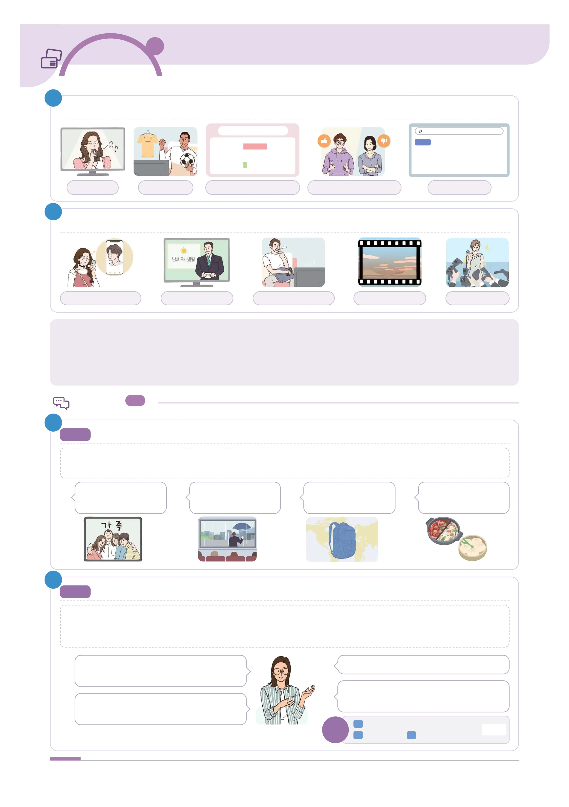
Gapirish말하기3-13-1한가Lug'at어휘재미있는 콘텐츠1 요즘 사람들이 많이 보는 방송 프로그램이 있습니까? 시청자들의 반응은 어떻습니까?방송되다즐겨 보다시청률사랑게임19.5%동물천국4.4%시청률이 높다/낮다반응이 좋다/나쁘다 학교에서 생긴 일뉴스인기 드라마 ‘학교에서 생긴 일’추천하고 싶은 드라마‘학교에서 생긴 일’‘학교에서 생긴 일’ 줄거리, 명대사화제가 되다2 그 프로그램에 대해 어떻게 생각합니까?연기가 뛰어나다진행을 잘하다내용이 지루하다영상이 멋지다눈길을 끌다방송되다 efirga uzatilmoq반응이 좋다/나쁘다 munosabatyaxshi/yomon진행을 잘하다 boshlovchilikni yaxshiqilmoq즐겨 보다 zavq bilan tomosha qilmoq화제가 되다 hamma gapiradigan mavzubo'lmoq내용이 지루하다 mazmuni zerikarli눈길을 끌다 e'tiborini tortmoq시청률이 높다/낮다 tomosha reytingiyuqori/past연기가 뛰어나다 aktyorlik mahorati ajoyib영상이 멋지다 video zo'r준비 1하고 싶은 일에 대해 친구들과 이야기해 보세요.가: 나나 씨, 집에 가면 뭐 할 거예요?나: 집에 가자마자 드라마 ‘가족’을 볼 거예요. 요즘 그 드라마가 시청률이 높대요.1)2)3)4)집에 가면 뭐 할거예요?시험이 끝나면 뭐 할거예요?졸업하면 뭐 할거예요?고향에 돌아가면 뭐할 거예요?준비 2들어서 알게 된 것을 친구에게 전달해 보세요.가: 주말에 뭐 할 거예요?나: 영화 ‘여름 이야기’를 볼 거예요. 아야나 씨가 이 영화가 재미있으니까 꼭 보라고 했어요.배우들의 연기가 정말 뛰어나대요.1)3)2)4)동-자마자☞94쪽동-으라고 하다, 동-지 말라고 하다영화 ‘여름 이야기’가 재미있으니까꼭 보세요.소설 ‘꽃샘추위’가 베스트셀러니까꼭 읽으세요.요가가 건강에 좋으니까 배우세요.집밥이 맛있고 건강에도 좋으니까직접 만들어서 드세요.베스트셀러 bestseller집밥 uy taomi27문법과표현1234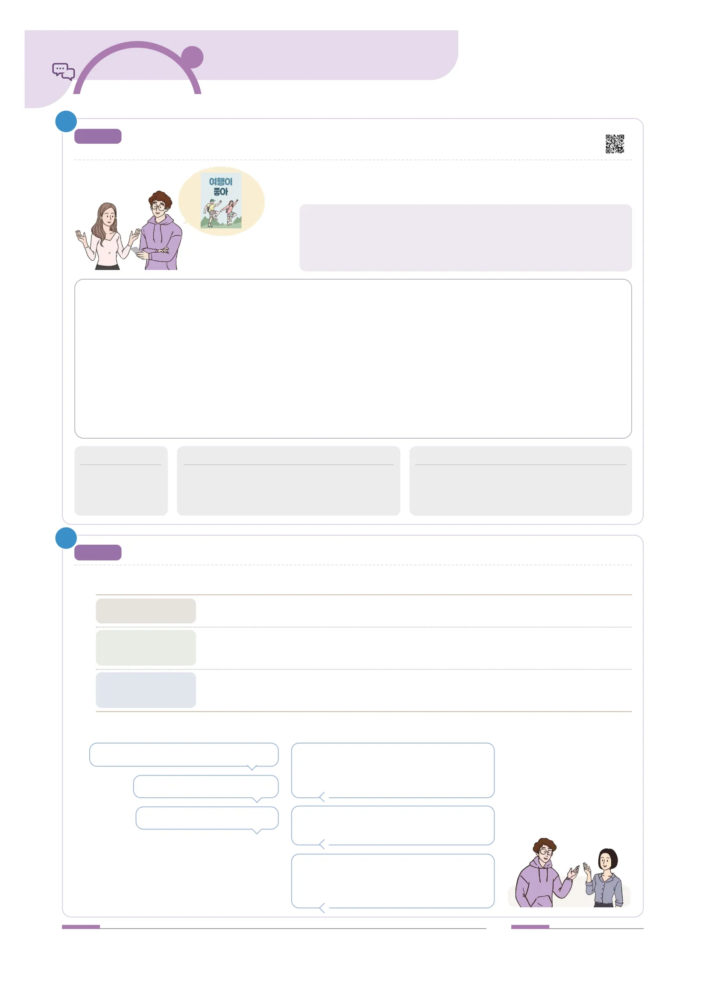
3-1Gapirish말하기말하기 1다음은 방송 프로그램에 대한 대화입니다. 즐겨 보는 프로그램의 내용과 특징에 대해친구와 이야기해 보세요.1 요즘 남자는 어떤 방송 프로그램을 봅니까?2 남자는 왜 그 방송을 보게 되었습니까?3 여자가 드라마를 보는 이유는 무엇입니까?제 니: 뭘 보고 있어요?다니엘: 예능 프로그램을 보고 있어요. 친구가 재미있으니까 꼭 보라고 했어요.제 니: 그래요? 무슨 내용인데요?다니엘: 사람들이 여행을 가서 그곳의 문화를 체험하는 내용이에요. 유명한 배우가 나와서 화제가 되고 있대요.제 니: 저도 그 프로그램을 본 적이 있어요. 시청률이 높다고 들었어요.다니엘: 그렇군요. 제니 씨도 즐겨 보는 프로그램이 있어요?제 니: 저는 요즘 새로 시작한 드라마 ‘사랑게임’에 푹 빠져 있어요. 영상이 멋지고 배우들의 연기도 뛰어나요.다니엘 씨도 시간이 있으면 한번 보세요.다니엘: 요즘 재미있는 드라마를 보고 싶었는데 잘됐네요. 오늘 집에 가자마자 봐야겠어요.프로그램예능 프로그램정보 프로그램다큐멘터리들은 정보여행을 가서 그곳의 문화를 체험하다건강에 도움이 되는 습관을 알려 주다숲에 사는 동물을 소개하다프로그램의 특징유명한 배우가 나오다진행자가 진행을 잘하다영상이 멋지다말하기 2즐겨 보는 프로그램에 대해 이야기해 보세요.1즐겨 보는 프로그램의 내용과 좋아하는 이유를 말해 보세요.제목내용좋아하는 이유2즐겨 보는 프로그램을 친구에게 소개해 보세요.요즘 즐겨 보는 프로그램이 있어요?왜 그 드라마를 자주 봐요?그래요? 무슨 내용인데요?네. 저는 요즘 집에 가자마자 드라마‘사랑하는 사람’을 봐요. 친구가 이드라마를 꼭 보라고 했어요.배우들의 연기가 뛰어나요. 그리고 제가좋아하는 배우가 나와요.어려운 상황 속에서도 사랑을 지키는사람들의 이야기예요. 다니엘 씨도 한번보세요.예능 프로그램 ko'ngilochar shou푹 butunlay, chuqur정보 프로그램 ma'rifiy dastur습관 odat다큐멘터리 hujjatli film숲 o'rmon상황 vaziyat2856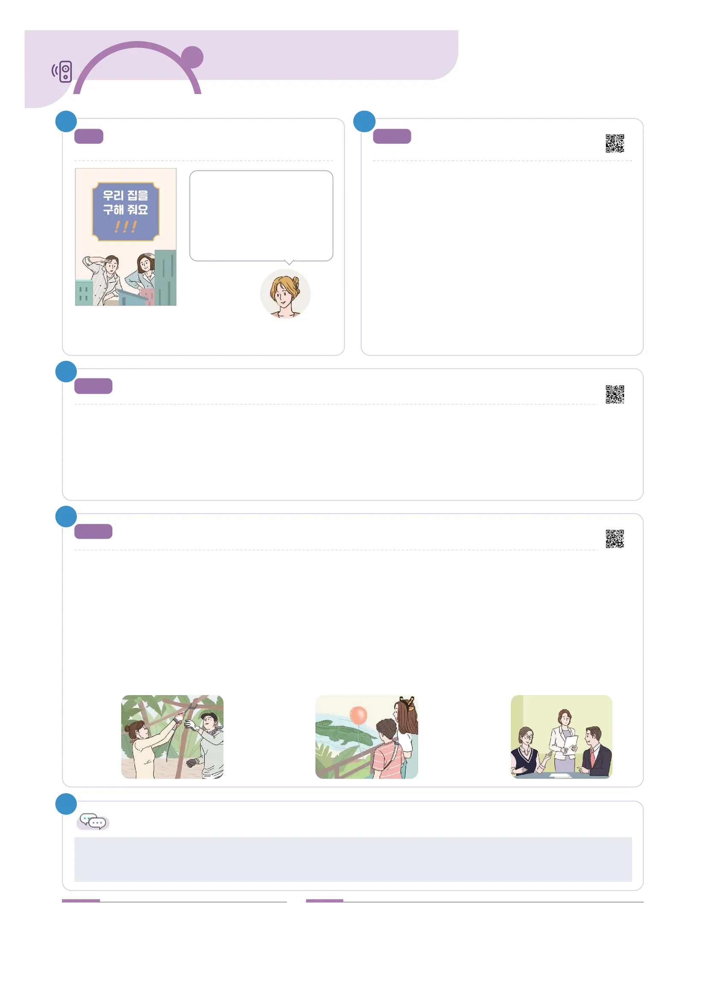
3-1Tinglash듣기준비요즘 화제가 되고 있는 방송 프로그램을소개해 보세요.저는 집을 찾아 주는프로그램을 소개하고싶어요. 이 프로그램을보면 집을 구할 때 필요한정보를 얻을 수 있어요.듣기 1다음은 라디오 방송입니다. 잘듣고 질문에 답해 보세요.1 이 방송에서 소개하고 있는 프로그램은무엇입니까?2 이 프로그램에 대한 설명으로 맞는 것을고르세요.① 다음 달부터 방송될 것이다.② 국내의 아름다운 여행지를 추천해 주는방송이다.③ 여행지에서 만난 사람들이 가족처럼 친해지는내용이다.듣기 2다음은 인터넷 영상에 대한 대화입니다. 잘 듣고 질문에 답해 보세요.1 ‘먹방’에 대한 남자의 생각으로 맞는 것을 고르세요.① 음식을 먹는 사람들의 모습을 보는 것은 지루하다.② 음식을 먹지 않아도 맛을 생각해 볼 수 있어서 좋다.③ 음식을 먹는 모습을 방송에서 보여 주는 것은 좋지 않다.2 여자가 즐겨 보는 영상은 무슨내용입니까?듣기 3다음은 방송 프로그램에 대한 대화입니다. 잘 듣고 질문에 답해 보세요.1 이 프로그램에 대한 설명으로 맞는 것을 고르세요.① 방송을 보는 시청자의 의견을 듣고 있다.② 새로 방송되는 프로그램을 소개하고 있다.③ 시청률이 높은 방송 프로그램을 알려 주고 있다.2 ‘정글 탐험’에 대한 여자의 생각으로 맞는 것을고르세요.① “방송에서 아이들을 더 많이 보여 주세요.”② “조금 더 색다른 내용을 보여 줬으면 좋겠어요.”③ “출연자들이 즐겁고 안전하게 촬영했으면좋겠어요.”3 ‘정글 탐험’에 나온 내용으로 맞는 것을 고르세요.①②③친구들과 이야기해 보세요.• 지금까지 본 방송 프로그램 중에서 가장 기억에 남는 것은 무엇입니까?• 인터넷으로 영상을 보면서 불편하거나 아쉽다고 생각한 적이 있습니까?우연히 tasodifan먹방 Mukbang (ovqat yeyish shousi)그만두다 tashlamoq상상하다 tasavvur qilmoq흥미롭다 qiziqarli bo'lmoq조종사 uchuvchi시청자 tomoshabinlar정글 탐험 changalzorni o'rganish색다르다 boshqacha bo'lmoq의견 fikr틀다 yoqmoq출연자 ishtirokchi커다랗다 ulkan bo'lmoq악어 timsoh장면 sahna안전하다 xavfsiz bo'lmoq297891011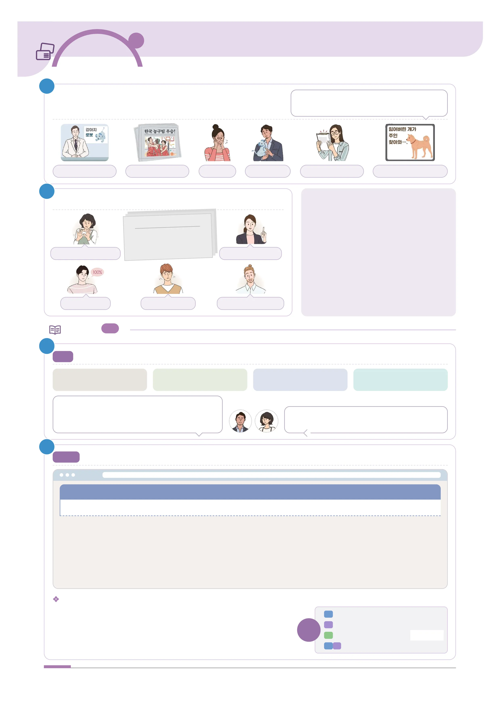
O'qish읽기3-23-2한가Lug'at어휘흥미로운 뉴스1 뉴스나 신문에서 알게 된 소식 중에 기억에 남는 것이있습니까?뉴스에 나오다신문에 실리다놀라다신기하다흥미를 느끼다감동을 주다/받다몇 년 전 뉴스에 강아지 로봇이 나왔어요.그 로봇을 보고 정말 신기하다고 생각했어요.2 다음과 같은 소식을 들었을 때 여러분은 어떤 말을 합니까?그럴 리가 없어요.오늘의 뉴스- 배우 민준과 소윤 결혼- 대학생 우주로 여행 떠나- 미래에 북극곰 사라질 수도그럴 수 있어요.틀림없어요.말도 안 돼요.믿어지지 않아요.뉴스에 나오다 yangiliklarda chiqmoq신문에 실리다 gazetada chop etilmoq신기하다 hayratlanarli흥미를 느끼다 qiziqish bildirmoq감동을 주다/받다 ta'sirlantirmoq/ta'sirlanmoq그럴 리가 없다 bo'lishi mumkin emas틀림없다 aniq bo'lmoq말도 안 되다 bema'ni bo'lmoq놀라다 hayron bo'lmoq그럴 수 있다 bo'lishi mumkin믿어지지 않다 aql bovar qilmas bo'lmoq준비인터넷 뉴스의 제목을 보고 친구들과 이야기해 보세요.종이 신문은정말 없어질까?김치맛아이스크림이 있다?명동에 나타난 코끼리전국에 독감 유행 중저는 인터넷 신문보다 종이 신문 보는 것을좋아해요. 그래서 종이 신문이 없어질까 봐걱정이에요.친구가 한국에 김치맛 아이스크림이 있느냐고물어봐서 못 먹어 봤다고 말해 줬어요.읽기 1다음은 인터넷 기사의 댓글입니다. 잘 읽고 질문에 답해 보세요.◀ ▶ C한국 영화 ‘태풍’ 국제 영화제에서 감독상 수상영화 ‘태풍’이 국제 영화제에서 감독상을 받아 화제가 되고 있습니다….↳ 민지제가 좋아하는 감독이 처음으로 상을 받게 돼서 기뻐요. 좋은 영화가 많아서 상을 못 탈까 봐 걱정했는데지금도 수상했다는 게 믿어지지 않네요. 수상자가 결정되자마자 해외 신문에 김준호 감독의 인터뷰 기사가실려서 신기했어요.↳ 서준친구가 이 영화를 꼭 보라고 해서 지난주에 봤어요. 영화를 보고 나서 틀림없이 상을 받을 거라고생각했어요. 친구들이 영화 ‘태풍’이 어땠느냐고 물어보면 지금까지 본 영화 중에서 제일 인상적이었다고말해 줄 거예요.잘 읽고 내용과 일치하면 ○, 일치하지 않으면 × 하세요.1) 영화 ‘태풍’의 감독은 전에도 상을 받은 적이 있다.( )2) 영화 ‘태풍’에 나오는 배우가 영화제에서 상을 받았다.( )3) 영화 ‘태풍’의 감독에 대한 기사가 해외 신문에 실렸다.( )동-느냐고 하다/묻다,형-으냐고 하다/묻다,명이냐고 하다/묻다☞95쪽동형-을까 봐(서)나타나다 paydo bo'lmoq감독 rejissyor수상하다 mukofotlanmoq결정되다 hal qilinmoq기사가 실리다 maqola chop etiladi30문법과표현1234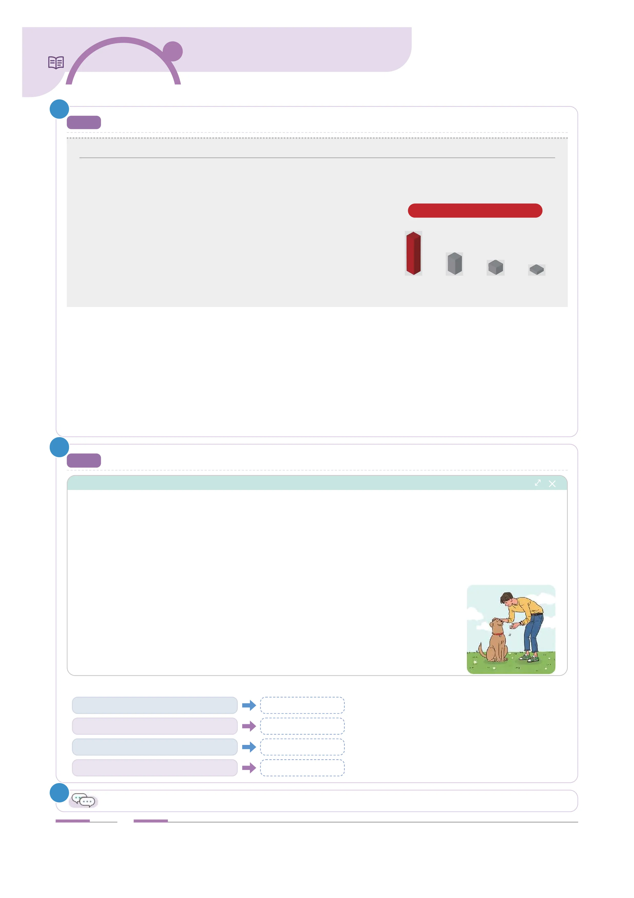
3-2O'qish읽기읽기 2다음은 사람들의 뉴스 이용에 대한 기사입니다. 잘 읽고 질문에 답해 보세요.LEI신문20~50대 회사원 천 명에게 신문, 텔레비전, 인터넷 중에서 어느 것을 이용해서 뉴스를 보느냐고 물었다. 68%의사람들이 인터넷으로 뉴스를 본다고 대답했다. 최근 스마트폰을 사용하는 사람들이 많아지면서 인터넷으로뉴스를 보는 사람들도 많아지고 있다.인터넷으로 뉴스를 본다고 대답한 사람들에게 왜 인터넷으로 뉴스를보느냐고 물었다. ‘중요한 뉴스를 놓칠까 봐서’(50%)가 1위였고, ‘편하고빠르게 뉴스를 볼 수 있어서’(25%)라는 대답이 2위였다. 이 외에도‘댓글로 다른 사람들과 생각을 주고받을 수 있어서’와 ‘종이 신문보다인터넷 뉴스가 보기 편해서’라는 대답이 있었다.인터넷으로 뉴스를 보는 이유50%25%15%10%중요한 뉴스를놓칠까 봐서편하고 빠르게뉴스를 볼 수있어서댓글로 생각을주고받을 수있어서기타1 이 기사의 제목으로 알맞은 것을 고르세요.① 신문을 읽지 않는 사람들② 높아지는 인터넷 뉴스의 인기③ 사라지는 신문과 텔레비전 뉴스2 다음 중 맞는 것을 고르세요.① 온라인으로 뉴스를 보는 사람이 많아지면 종이 신문이 없어질 것이다.② 사람들이 스마트폰을 사용하기 시작하면서 인터넷 뉴스의 인기가 높아졌다.③ 왜 인터넷 뉴스를 보느냐는 질문에 50%의 사람들이 ‘보기 편해서’라고 대답했다.3 여러분은 신문, 텔레비전, 인터넷 중 어느 것으로 뉴스를 봅니까?읽기 3다음은 사람을 구한 동물에 대한 기사입니다. 잘 읽고 질문에 답해 보세요._불이 난 집에서 강아지가 자고 있는 주인 구해6월 7일 새벽 4시쯤 호주에 사는 마이클 씨는 자신이 키우는 강아지 소리에 잠에서 깼다. 강아지 토토가 그의곁에서 쉬지 않고 짖고 있었다. 그가 일어났을 때 이미 집 안은 연기로 가득했다.그는 불이 난 것을 보자마자 토토를 데리고 창문으로 나갔다. 그리고 소방서에 전화해서 빨리 와 달라고 부탁했다.몇 분 후 소방차가 도착했고 다행히 불은 금방 꺼졌다. 소방관들은 조금만 신고를 늦게 했으면 큰불이 났을 거라고말했다.이번 화재로 마이클 씨는 다리를 크게 다쳐서 병원에 입원했다. 그는 구급차를 타고 병원에갈 때에도 강아지가 다쳤을까 봐 걱정했다고 한다. 토토는 그가 퇴원할 때까지 이웃집에서돌봐 주기로 했다.이웃 주민들은 강아지가 어떻게 그럴 수 있느냐고 하면서 주인을 구한 토토를 칭찬하고있다. 주인을 구한 강아지의 이야기는 뉴스에도 여러 번 방송되면서 사람들에게 큰 감동을주고 있다.1 기사를 읽고 다음 질문에 답하세요.① 그 일이 누구한테 일어났어요?② 그 일이 언제, 어디에서 일어났어요?③ 무슨 일이 있었어요?④ 그 후 어떻게 되었어요?2 다음 중 맞는 것을 고르세요.① 강아지는 이번 화재로 다리를 크게 다쳤다.② 마이클 씨는 집에 불이 나서 이웃집에서 지내고있다.③ 주인을 구한 강아지의 이야기가 사람들에게 큰감동을 주고 있다.최근에 읽은 재미있는 기사를 친구들에게 소개해 보세요.사라지다 g'oyibbo'lmoq깨다 uyg'onmoq곁 yonida짖다 vovullamoq연기 tutun가득하다 to'la bo'lmoq소방서 o't o'chirish bo'limi소방차 o't o'chirish mashinasi꺼지다 o'chmoq신고하다 xabar bermoq화재 yong'in입원하다 kasalxonaga yotqizilmoq구급차 tez yordam mashinasi퇴원하다 kasalxonadan chiqmoq이웃집qo'shni uy31567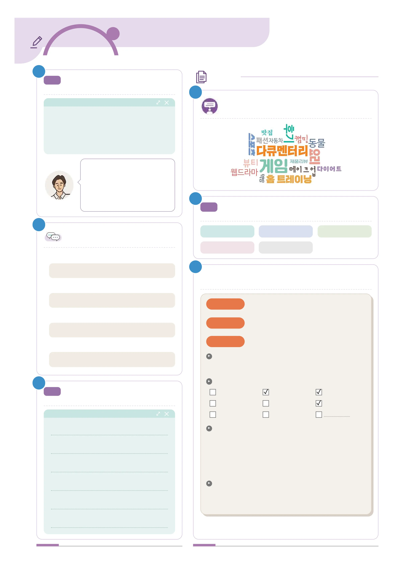
Vazifa과제3-2Yozish쓰기준비뉴스나 신문을 보고 놀라거나감동을 받은 적이 있습니까?_대학생이 선로에 떨어진 승객 구해어제저녁 7시, 지하철 2호선서울대입구역에서 선로에 사람이떨어지는 사고가 났다. 이 사고로….지하철에서 사람을 구한대학생이 신문에 실렸어요. 그학생을 만나면 어떻게 그런행동을 할 수 있었느냐고물어보고 싶어요.최근에 들은 고향의 뉴스 중에기억에 남는 것이 있습니까?• 그 일이 누구한테 일어났어요?• 그 일이 언제, 어디에서 일어났어요?• 무슨 일이 있었어요?• 그 후 어떻게 되었어요?쓰기기억에 남는 고향의 뉴스를전달하는 글을 써 보세요._친구들과 만들고 싶은 영상에 대한 계획을 세우고발표해 보세요.준비인터넷으로 즐겨 보는 영상이 있습니까? 무슨내용입니까?운동여행먹방뮤직비디오?1 친구들과 만들고 싶은 영상에 대해 이야기한 후내용을 정리해 보세요.채널 이름홈 트레이닝 배우기영상 주제집에서 쉽게 할 수 있는 운동 방법소개하기내용누가 이 영상을 보면 좋겠어요?운동 시간이 부족한 학생이나 직장인어떤 영상을 만들고 싶어요?영상이 멋지다구독자가 많다도움이 되다감동을 주다화제가 되다반응이 좋다인상적이다뉴스에 나오다영상에 무슨 내용을 넣고 싶어요?• 스포츠 센터에 가지 않고 집에서 운동을 할 수 있는방법• 다치지 않고 운동을 하는 방법• 쉽고 재미있게 따라 할 수 있는 운동기타• 일주일에 한 번 영상을 올린다.• 구독자가 많아지면 다양한 이벤트를 한다.선로 rels yo'li승객 yo'lovchi홈 트레이닝 uyda mashq qilish부족하다 yetishmaslik구독자 obunachi이벤트 tadbir328910111213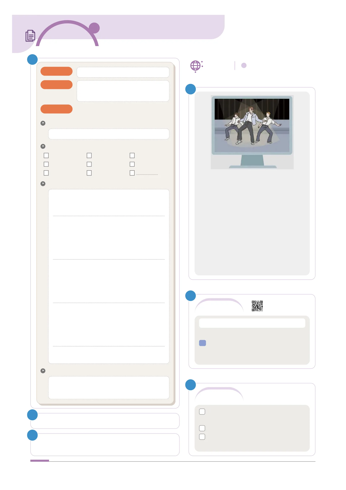
Madaniyat문화유명한 케이팝 영상3-2Vazifa과제채널 이름영상 주제내용누가 이 영상을 보면 좋겠어요?어떤 영상을 만들고 싶어요?영상이 멋지다구독자가 많다도움이 되다감동을 주다화제가 되다반응이 좋다인상적이다뉴스에 나오다영상에 무슨 내용을 넣고 싶어요?기타2만들고 싶은 영상에 대해 발표해 보세요.3발표를 듣고 가장 인기가 많을 것 같은 영상을뽑아 보세요.↳» 최근에 세계적으로 많이 사용되는 앱이나웹 사이트에 다양한 영상이 올라오고 있습니다.이런 영상 중에는 한국 문화에 대한 것들이있는데 그중에서도 케이팝(K-pop) 영상이 아주유명합니다. 특히 아이돌 그룹의 영상은인터넷에서 조회 수가 매우 높습니다. 아이돌그룹의 영상에는 멋진 춤과 노래가 나오는데영상을 본 사람들은 그들의 팬이 됩니다.그렇게 팬이 된 사람들은 한국어를 배우거나한국에 유학을 오기도 합니다. 케이팝의 인기가높아지면서 한국 문화를 경험하고 배우는사람들도 점점 늘고 있습니다.발음Talaffuz시청률[시청뉼]이 높다고 들었어요.‘ㄹ’은 받침 ‘ㅁ, ㅇ’ 뒤에서 [ㄴ]으로 발음됩니다.예운동이 끝나자마자 음료수를 마셨어요.언어교육원에 가려면 어느 정류장에서내려야 돼요?자기 평가Tekshiruv즐겨 보는 프로그램을 다른 사람에게추천할 수 있다.고향의 뉴스를 전달하는 글을 쓸 수 있다.만들고 싶은 영상의 내용을 구성해서발표할 수 있다.조회 수 ko'rishlar soni33141516171819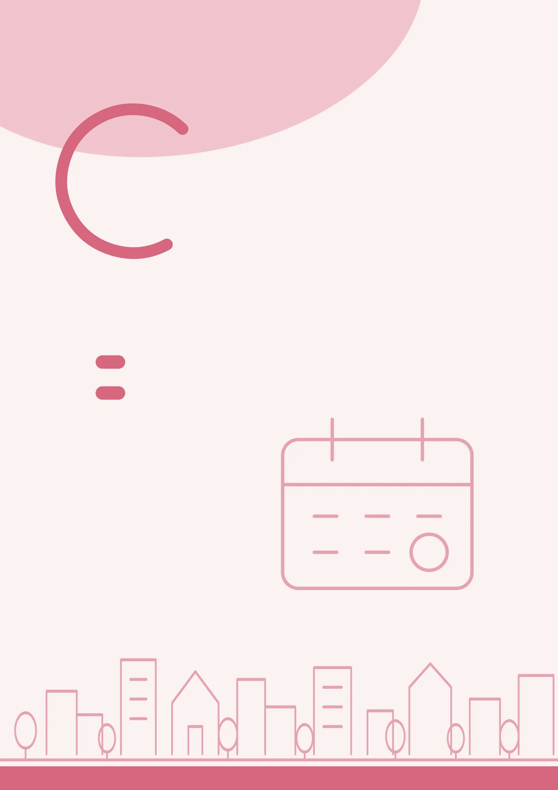
4약속과 만남4-1약속4-2모임 장소주말에 아무 약속도 없어요.그럼 같이 영화나 볼까요?좋아요. 어디에서 만날까요?저 카페요. 멀리서도 잘 보여요.어, 문이 닫혀 있네요.그럼 옆 가게로 가요.1 약속 시간에 늦은 적이 있어요?2 만나기 좋은 장소는 어떤 곳이에요?
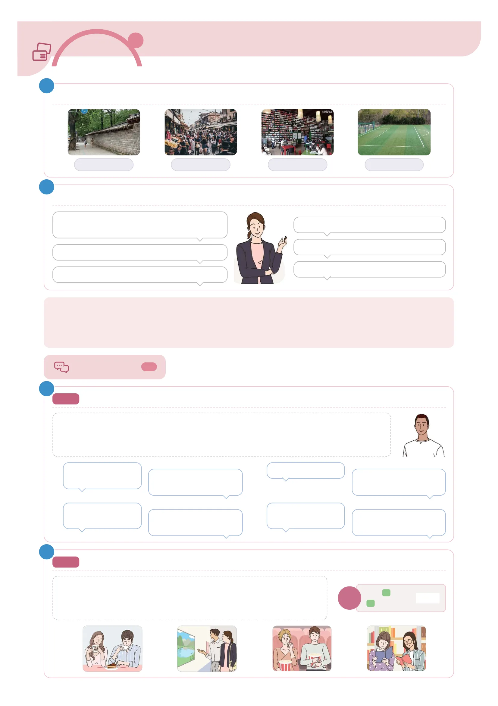
4-1한가Lug'at어휘약속1다음을 보고 장소가 어떤지 이야기해 보세요.한산하다붐비다가득하다텅 비다2약속과 모임에 대해 이야기해 보세요.모임 장소를 정할 때 중요하게 생각하는 것이있습니까?모임이 연기되거나 취소된 적이 있습니까?최근에 일정을 미룬 적이 있습니까?약속을 잘 지키는 편입니까?약속 시간을 어긴 적이 있습니까?최근에 무슨 약속을 잡았습니까?한산하다 odam kam bo'lmoq텅 비다 bo'sh bo'lmoq시간을 어기다 vaqtida kelmaslik약속을 잡다 va'dalashmoq붐비다 gavjum bo'lmoq장소를 정하다 joyni belgilamoq모임이 연기되다 yig'ilish qoldiriladi일정을 미루다 uchrashuvni keyinga surmoq가득하다 to'la bo'lmoq약속을 지키다 va'dasida turmoq계획이 취소되다 reja bekor qilinadiGapirish 말하기4-1준비 1다음 상황을 보고 이야기해 보세요.가: 에릭 씨, 이번 주말에 약속이 있어요?나: 아니요. 아무 약속도 없는데요.가: 그럼 저하고 같이 영화 보러 가요.1)2)3)4)이번 주말에 약속이있어요?주말에 뭘 하면 좋을까?한가한데….아침을 먹었어요?아, 배고파. 늦게 일어나서밥을 못 먹었네.방학 때 어디에 갔다왔어요?방학인데 놀지도 못하고아르바이트만 했네.아직도 도서관에사람이 많아요?문 닫을 시간이라서도서관에 사람이 없네.준비 2친구들과 약속을 정해 보세요.가: 일기 예보에서 이번 주말에 비가 온대요. 등산을 갈 수 있을까요?나: 등산은 안 되겠네요. 커피숍에서 같이 차나 한잔할까요?가: 네. 그게 좋겠어요.아무 명도☞96쪽명이나1)2)3)4)36문법과표현1234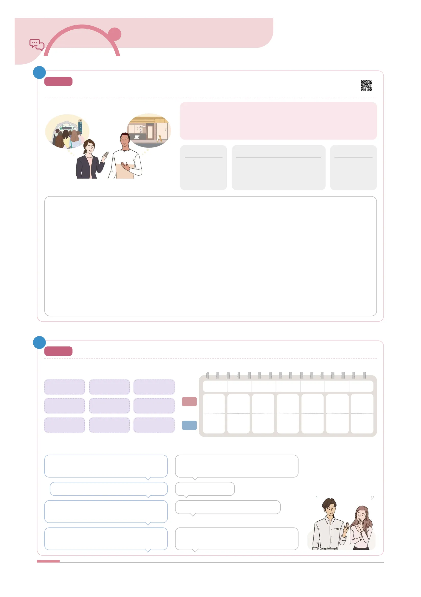
4-1Gapirish말하기말하기 1다음은 주말 약속에 대한 대화입니다. 약속 시간과 장소에 대해 친구와 이야기해보세요.1 두 사람은 언제 만나기로 했습니까?2 주말에 강남역 근처는 어떻다고 합니까?3 두 사람은 어디에서 만나기로 했습니까?주말 일정약속이 없다계획이 없다일이 없다하고 싶은 일새로운 친구를 만나고 싶다프랑스어를 가르쳐 보고 싶다중국어를 배워 보고 싶다약속 장소학교 근처가까운 공원우리 동네나나: 에릭 씨, 이번 주 토요일에 시간이 있어요? 같이 차나 한잔할까요?에릭: 네. 좋아요. 그날은 아무 약속도 없어요.나나: 제 고향 친구가 프랑스어를 전공하고 있는데 저한테 에릭 씨를 소개해 달라고 했어요.토요일에 그 친구도 부를까요?에릭: 좋아요. 저도 새로운 친구를 만나고 싶었어요.나나: 잘됐네요. 그럼 우리 언제 만날까요? 에릭 씨가 편한 시간으로 정해요.에릭: 토요일 1시쯤 만나는 게 어때요? 장소는 강남역이 좋겠지요?나나: 저도 1시가 좋아요. 그런데 강남역 근처는 주말에 사람이 많아서 좀 붐빌 텐데요.그러지 말고 학교 근처에서 만나요.에릭: 그게 좋겠네요. 학교 앞에 새로 생긴 카페가 좋다고 들었는데 거기서 봐요.말하기 2어디에서 무엇을 하면 좋을지 친구와 약속을 정해 보세요.1다음 주에 할 일을 일정표에 써넣으세요.한국어 수업치과스포츠 센터영화미용실아르바이트생일 파티강아지와 산책?오전오후2친구와 약속을 정해 보세요.월요일화요일수요일목요일금요일토요일일요일치과이번 주 금요일 오후에 시간이 있어요?같이 차나 한잔할래요?미안해요. 금요일 오후에는 치과에 가야돼요. 토요일은 어때요?좋아요. 토요일에는 아무 약속도 없어요.몇 시에 만날래요?5시쯤 만나는 게 어때요? 괜찮으면 같이저녁 먹어요.좋아요. 장소는 강남역이 좋겠지요?주말에는 강남역이 많이 붐빌 텐데요.학교 근처에서 만나는 게 어때요?그게 좋겠네요. 주말이라서 학교 근처는한산할 거예요.친구를 부르다 do'stini chiqishga chaqirmoq3756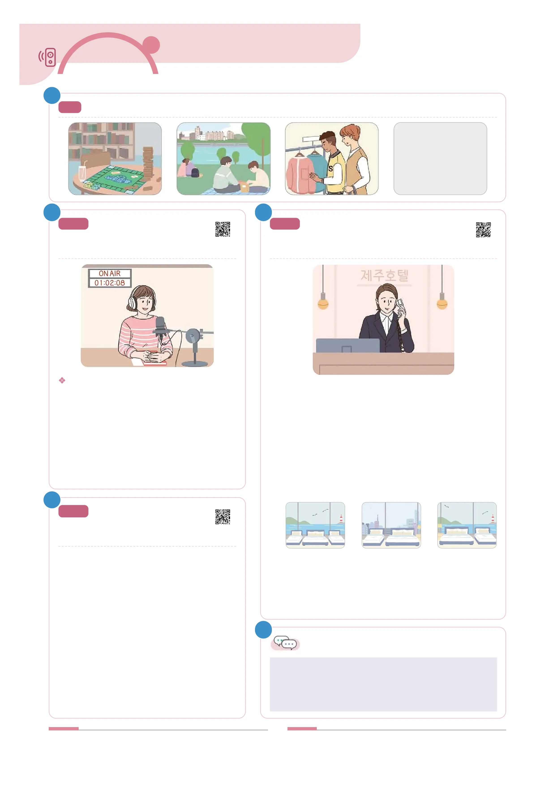
4-1Tinglash듣기준비친구를 만나서 어디에 가고 싶습니까??듣기 1다음은 라디오사연입니다. 잘 듣고질문에 답해 보세요.들은 내용과 일치하면 ○, 일치하지않으면 × 하세요.1) 이 사람은 일주일 전에 한국에왔다.( )2) 이 사람은 친구의 말을 잘못이해한 적이 있다.( )3) 이 사람은 요즘 바빠서 친구들과약속을 잡지 못했다.( )듣기 2다음은 두 사람의대화입니다. 잘 듣고질문에 답해 보세요.1남자가 전화한 이유는 무엇입니까?2들은 내용으로 맞는 것을 고르세요.① 여자는 이미 약속 장소에 도착해 있었다.② 두 사람은 다음 주 화요일에 만나서점심을 먹을 것이다.③ 내일은 미술관이 쉬는 날이라서 화요일에만나기로 했다.듣기 3다음은 호텔 예약에 대한대화입니다. 잘 듣고 질문에 답해보세요.1남자는 왜 예약을 바꾸려고 합니까?2남자가 새로 예약한 방으로 알맞은 것을 고르세요.①②③3들은 내용과 같은 것을 고르세요.① 남자는 제주도를 여행한 적이 있다.② 셔틀버스를 타는 시간은 정해져 있다.③ 남자는 여자에게 문자로 예약 내용을 보낼 것이다.친구들과 이야기해 보세요.• 친구들이 약속을 잘 지키는 편입니까?• 호텔이나 비행기 예약을 취소하거나 변경해 본 적이있습니까?휴관 yopilish2인용 ikki kishilik매시간 har soatda정각 roppa-rosa정해지다 belgilanmoq387891011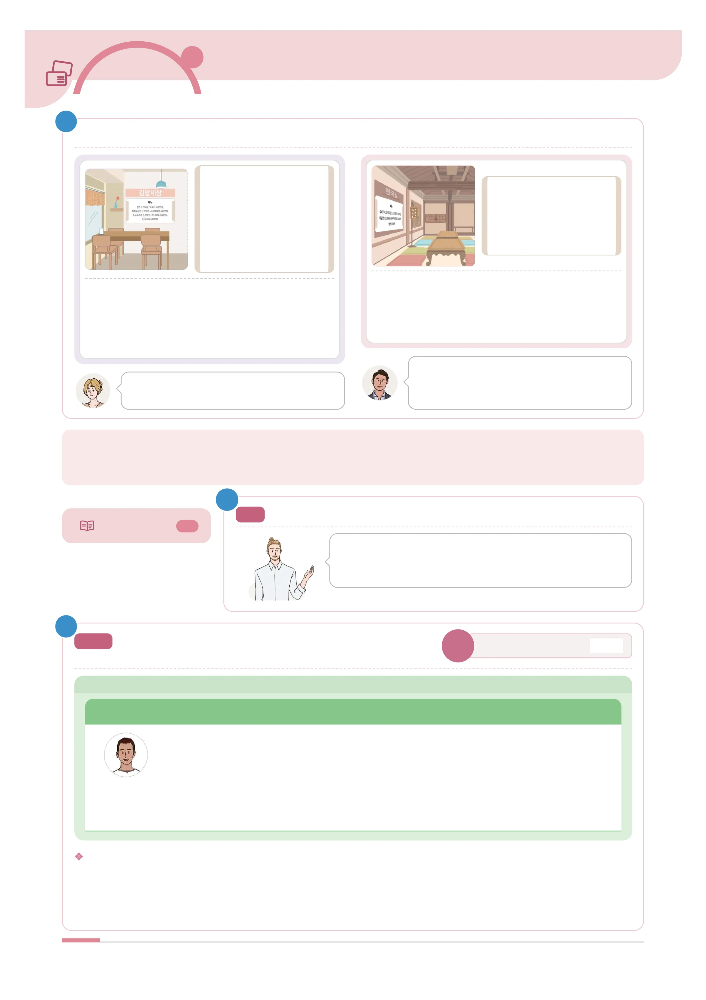
4-2한가Lug'at어휘모임 장소❖다음을 보고 가고 싶은 식당에 대해서 이야기해 보세요.메뉴김밥 3,000원, 떡볶이5,000원, 김치볶음밥 6,000원,새우볶음밥 6,000원,순두부찌개 6,000원,김치찌개 6,000원, 된장찌개6,000원한식사랑♥♥♥♥♡일주일 전↳음식이 입에 맞아서 자주 갑니다. 가게가평범하지만아늑하고 편안한 느낌이 들어서좋습니다.메뉴갈비구이 25,000원, 불고기정식 15,000원, 비빔밥12,000원, 생선구이 정식13,000원, 냉면 9,000원고기좋아♥♥♥♥♥일주일 전↳결혼기념일에 다녀왔는데 메뉴가 다양하고 재료가신선해서 좋았습니다. 음식도 훌륭했습니다. 꼭다시 방문하고 싶습니다.저는 김밥세상에 가고 싶어요. 가격이저렴하고 메뉴가 다양해서 마음에 들어요.저는 한국집에 가고 싶어요. 가격이 좀비싸지만 깔끔하고 실내 장식이 특이해서마음에 들어요.입에 맞다 ta'bga mos bo'lmoq저렴하다 arzon bo'lmoq깔끔하다 toza bo'lmoq평범하다 oddiy bo'lmoq다양하다 turli xil bo'lmoq특이하다 o'ziga xos bo'lmoq아늑하다 shinam bo'lmoq신선하다 yangi bo'lmoq편안하다 qulay bo'lmoq훌륭하다 a'lo bo'lmoqO'qish 읽기4-2준비자주 가는 장소에 대해 말해 보세요.저는 친구들과 집 근처 식당에 자주 가요. 그 식당은 음식이깔끔하고 맛있어요. 그리고 식당 벽에 그림이 걸려 있는데정말 멋져요.읽기 1다음은 인터넷 게시판에 올라온 글입니다. 잘 읽고질문에 답해 보세요.피동(-이/히/리/기-)☞97쪽_ ⤢✕아늑하고 편안한 식당을 추천해 주세요.에릭이번 주 토요일이 친구 생일이라서 깜짝 파티를 열어 주고 싶어요. 그래서 식당을예약하려고 하는데 좋은 식당이 있으면 추천해 주세요. 식당이 예쁘게 장식되어 있었으면좋겠어요. 그리고 파티에 올 사람이 많으니까 식당 중앙에 큰 테이블이 놓여 있었으면해요. 친구가 바다를 좋아하니까 식당에서 바다가 보였으면 좋겠어요. 일기 예보에서주말에 날씨가 좋다고 했으니까 야외에서 식사할 수 있는 식당이면 더 좋을 것 같아요.잘 읽고 내용과 일치하면 ○, 일치하지 않으면 × 하세요.1) 이 사람은 바다가 보이는 식당을 예약하고 있다.( )2) 이 사람은 친구의 생일 파티를 해 주려고 식당을 알아보고 있다.( )3) 이 사람은 자신이 가 본 식당을 다른 사람에게 추천해 주고 있다.( )장식되다 bezatilmoq중앙 markaz39문법과표현123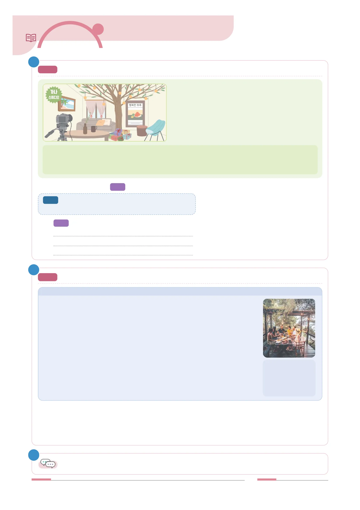
4-2O'qish읽기읽기 2다음은 사진 스튜디오 광고입니다. 잘 읽고 질문에 답해 보세요.아무도 없는 곳에서 편안하게 촬영하고 싶으십니까? 지금바로 가나스튜디오로 오세요.조용하고 깔끔한 장소에서 사진을 찍으실 수 있습니다.여러분이 직접 사진사가 되어 인물 사진, 패션 사진, 상품사진을 찍어 보세요.• 이용 시간은 한 시간입니다. 시간을 꼭 지켜 주시기 바랍니다.• 스튜디오에 걸려 있는 의상 중에서 마음에 드는 옷을 입고 촬영하실 수 있습니다.• 카메라가 필요하신 분은 미리 말씀해 주세요. 카메라를 대여해 드립니다. (한 시간에 2만 원)1가나스튜디오의 모습을 보기와 같이 설명해 보세요.질문가나스튜디오에서 사진을 찍어 보신 분이 계신가요?스튜디오가 어떤지 자세히 설명해 주세요.↳보기 스튜디오 가운데에 큰 나무가 놓여 있어요.↳.↳.↳.2가나스튜디오에 대한 설명으로 맞는것을 고르세요.① 촬영할 때 입을 옷은 직접 준비해 와야한다.② 비용을 더 내면 하루 종일 장소를 대여할수 있다.③ 미리 말하면 카메라를 빌려서 사진을찍을 수 있다.읽기 3다음은 식당을 소개하는 글입니다. 잘 읽고 질문에 답해 보세요._ ⤢✕식당 ‘숲속’에 다녀왔어요안녕하세요? 오늘은 주말에 가족들과 다녀온 식당 ‘숲속’을 소개해 드릴게요. 이식당은 분위기가 정말 좋아요. 특히 창밖으로 숲이 보이는 게 참 마음에 들었어요.그리고 아이들을 위한 메뉴도 다양하고 편안한 소파도 놓여 있어요. 가격이 저렴한편은 아니지만 신선한 재료로 만든 음식을 맛볼 수 있어서 정말 좋았어요. 음료만주문해도 된다고 하니까 다음에는 친구들과 차를 마시면서 시간을 보내고 싶어요.그런데 그 근처에는 지하철역이나 버스 정류장이 없어요. 그래서 자동차를 타고가거나 택시를 타지 않으면 가기가 힘들어요. 그리고 식당 주변에는 볼거리가아무것도 없어서 좀 아쉬웠어요. 하지만 도시에서는 쉽게 볼 수 없는 특별한 식당을찾고 있는 분들에게 추천하고 싶어요.위치★☆☆☆☆맛★★★★★가격★★☆☆☆분위기★★★★★서비스★★★★☆1이 글을 쓴 이유는 무엇입니까?① 식당이 어땠는지 알려 주기 위해② 새로 생긴 식당을 광고하기 위해③ 식당에 가는 방법을 설명하기 위해2이 식당에 대한 내용으로 맞는 것을 고르세요.① 저렴한 가격에 다양한 음식을 즐길 수 있다.② 교통이 불편해서 자동차나 택시를 이용해야 한다.③ 식당 주변에 볼거리가 많아서 아이들과 함께 가기 좋다.최근에 방문한 장소에 대해 이야기해 보세요.스튜디오 studiya사진사 fotograf인물 shaxs의상 libos대여하다 ijaraga bermoq맛보다 tatib ko'rmoq40456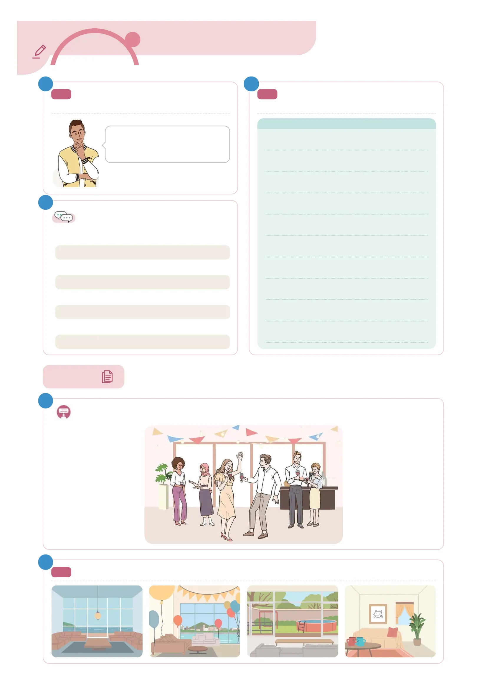
4-2Yozish쓰기준비친구들과 자주 가는 장소가있습니까?저는 친구들과 학교 근처에 있는카페에 자주 가요. 그곳은 메뉴가다양하고 아늑해서 좋아요.추천하고 싶은 식당이나 카페에 대해이야기해 보세요.• 추천하고 싶은 식당이나 카페가 있습니까?• 그곳에서는 무엇을 팝니까?• 그곳의 분위기는 어떻습니까?• 그곳에 왜 자주 갑니까?쓰기인터넷 게시판에 식당이나 카페를추천하는 글을 써 보세요._ ⤢✕Vazifa 과제친구들과 모임을 하려고 합니다. 모임 장소를 정하고 계획을 세워 보세요.준비다음 모임 장소를 보고 마음에 드는 곳과 그 이유를 이야기해 보세요.417891011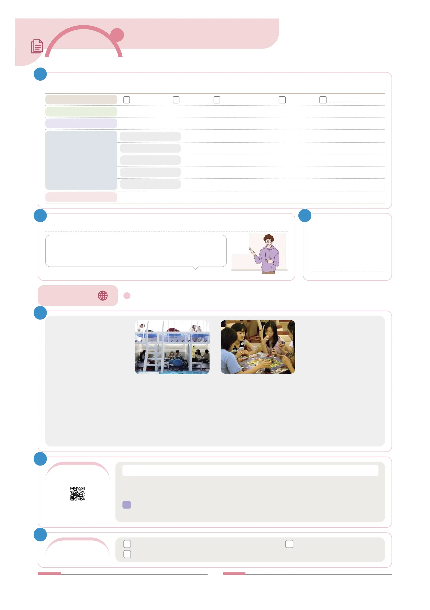
한국의 다양한 카페4-2Vazifa과제12~3명이 한 팀이 되어 어떤 모임을 할지 정해 보세요.모임생일 파티송별회개강/종강 파티집들이일시모임에서 할 일모임 준비준비물옷차림음식회비모임 장소2모임에 대한 정보를 정리해서 발표해 보세요.우리는 이번 주말에 나나 씨 생일 파티를 할 거예요. 도시의야경이 보이는 장소를 빌려서 그곳을 멋지게 장식할 거예요.케이크와 음식도 준비할 거예요. 그리고….3친구들의발표를 듣고가장 가고 싶은모임을 정해보세요.Madaniyat 문화© 연합뉴스↳»한국인 한 명이 1년 동안 마시는 커피는 300잔 정도이고, 새로 문을 여는 카페도 매년 늘고 있다고 합니다.그동안 카페는 모임 장소나 공부 장소로 오랫동안 사람들의 사랑을 받았습니다. 그런데 최근 카페가달라지고 있습니다. 카페가 다양한 문화생활을 즐길 수 있는 곳으로 바뀌고 있습니다. 보드게임을 할 수있는 카페나 편하게 누워서 만화책을 읽을 수 있는 카페가 인기를 끌고 있습니다. 또 마음을 편안하게 해주는 심리 상담 카페에도 사람들이 많이 갑니다. 멀리 나가지 않아도 집 근처나 회사 근처 카페에서문화생활을 즐길 수 있기 때문에 앞으로도 카페의 인기는 계속될 것으로 보입니다.발음Talaffuz강남역 [강남녁] 근처는 주말에 사람이 많아서 좀 붐빌 텐데요.‘ㄴ, ㅁ, ㅇ’ 받침 뒤에 오는 음절이 ‘이, 야, 여, 요, 유, 얘, 예’로 시작할 때 그 사이에 [ㄴ]을넣어서 발음합니다.예이번 방학에 친구들과 배낭여행을 가기로 했어요.아까부터 웃고 있네요. 무슨 좋은 일이 생겼어요?자기 평가Tekshiruv약속 장소와 시간을 정할 수 있다.모임 장소를 평가할 수 있다.약속 장소를 추천하는 글을 쓸 수 있다.종강 semestr yakuni옷차림 kiyim-kechak심리 psixologiya421213141516175음식과 조리법5-1좋아하는 음식5-2조리법
김치찌개는 누구나 좋아해요.그런데 이렇게 매울 줄 몰랐어요.찌개는 어떻게 해야 맛있어요?고기가 신선해야 맛있어요.왜 설탕을 넣어요?조금 넣으면 더 맛있거든요.1 요즘 자주 먹는 음식이 뭐예요?2 요리할 때 제일 어려운 게 뭐예요?
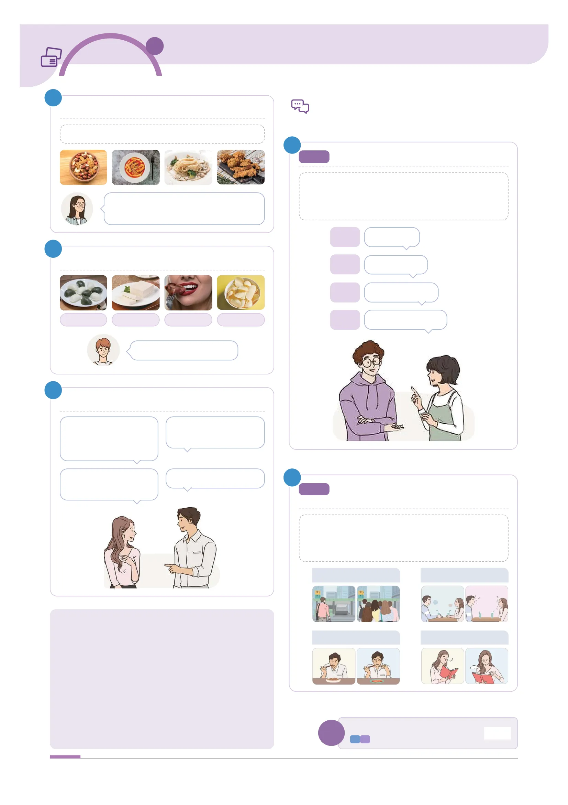
Gapirish말하기누구나, 언제나, 어디나, 무엇이나☞98쪽동형-을 줄 모르다5-1한가Lug'at어휘좋아하는 음식1 음식의 맛에 대해 이야기해 보세요.고소하다매콤하다싱겁다느끼하다저는 떡볶이처럼 매콤한 음식을좋아해요.2 음식의 식감에 대해 이야기해 보세요.쫄깃하다연하다질기다바삭하다떡은 쫄깃해서 맛있어요.3 다음에 대해 이야기해 보세요.입이 심심할 때생각나는 음식이있어요?저는 입이 심심할 때과자를 먹어요.출출할 때 자주 먹는음식이 있어요?저는 출출할 때….고소하다 yong'oqdek mazalibo'lmoq매콤하다 achchiqbo'lmoq싱겁다 ta'msiz bo'lmoq느끼하다 yog'libo'lmoq쫄깃하다 cho'ziluvchan(elastik) bo'lmoq연하다 yumshoqbo'lmoq질기다 qattiq(chaynalmaydigan) bo'lmoq바삭하다 qarsildoqbo'lmoq입이 심심하다 yengil tamaddiqilgisi kelmoq출출하다 biroz qorniochmoq준비 1친구와 만날 약속을 정해 보세요.가: 우리 같이 점심을 먹을까요?나: 네. 좋아요. 뭘 먹을까요?가: 저는 무엇이나 다 괜찮아요.1)점심2)산책3)운동4)영화뭘 먹을까요?어디로 갈까요?몇 시에 만날까요?무슨 영화를 볼까요?준비 2경험한 후 달라진 생각에 대해 이야기해보세요.가: 명동에 가 보니까 어때요?나: 거리가 그렇게 한산할 줄 몰랐어요.주말이라서 사람이 많을 줄 알았어요.1)명동에 가다2)소개팅을 하다3)궁중떡볶이를 먹다4)새로 나온 책을 읽다궁중떡볶이 saroycha tteokbokki45문법과표현12345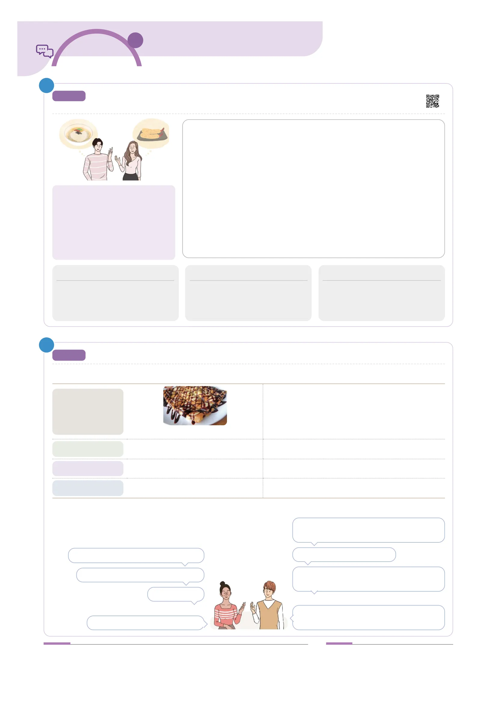
5-1Gapirish말하기말하기 1다음은 음식에 대한 대화입니다. 먹고 싶은 음식과 장소에 대해 친구와 이야기해 보세요.1 두 사람은 영화를 보기 전에무엇을 하려고 합니까?2 남자는 무슨 음식을 먹고 싶어합니까?3 두 사람은 이 음식이 어떻다고생각합니까?민우: 점심을 일찍 먹어서 그런지 좀 출출한 것 같아요.제니: 그럼 우리 영화 보기 전에 뭘 좀 먹을까요? 마침 저도 배가 고팠어요.민우: 네. 좋아요. 어디로 갈까요?제니: 어, 저기 튀김 가게가 있네요. 새우튀김이 크고 바삭해 보이는데 저기로갈까요?민우: 제가 점심때 튀김을 먹어서요. 그 옆에 국수를 파는 곳이 있네요. 저걸먹는 게 어때요?따뜻한 음식이 먹고 싶어요.제니: 그래요. 저는 간단하게 먹을 수 있는 곳이면 어디나 다 괜찮아요.…민우: 국물이 정말 시원하네요.제니: 손님이 별로 없어서 기대를 안 했는데 이렇게 맛있을 줄 몰랐어요.먹고 싶은 음식따뜻한 국수매콤한 떡볶이소화가 잘되는 죽장소간단하게 먹을 수 있는 곳음식이 빨리 나오는 곳기다리지 않아도 되는 곳맛국물이 시원하다떡이 쫄깃하고 맛있다죽이 담백하고 고소하다말하기 2고향에서 자주 먹는 간식에 대해 친구들과 이야기해 보세요.1고향에서 자주 먹는 간식이 있어요?음식의 이름로띠음식의 맛달콤하다.필요한 재료빵, 바나나, 초콜릿 잼 등좋아하는 이유만들기 쉽고 맛있다.2자주 먹는 간식에 대해 이야기해 보세요.……아침을 일찍 먹어서 좀 출출한 것 같아요.네. 저는 간식은 무엇이나 다 좋아해요.로띠가 뭐예요?로띠가 이렇게 맛있을 줄 몰랐어요.마침 저도 입이 좀 심심했는데 같이 간식을먹을까요?같이 로띠를 만들어 먹을까요?빵에 바나나와 초콜릿 잼을 올려서 먹는음식이에요.만들기 쉽고 맛있어서 우리 고향 사람들이즐겨 먹어요.튀김 qovurilgan taom새우 krevetka간단하다 oddiy bo'lmoq국물이 시원하다 sho'rvasi aynan ko'ngildagidek기대를 하다 kutmoq (umid qilmoq)담백하다 yengil/toza bo'lmoq달콤하다 shirin bo'lmoq잼 murabbo4667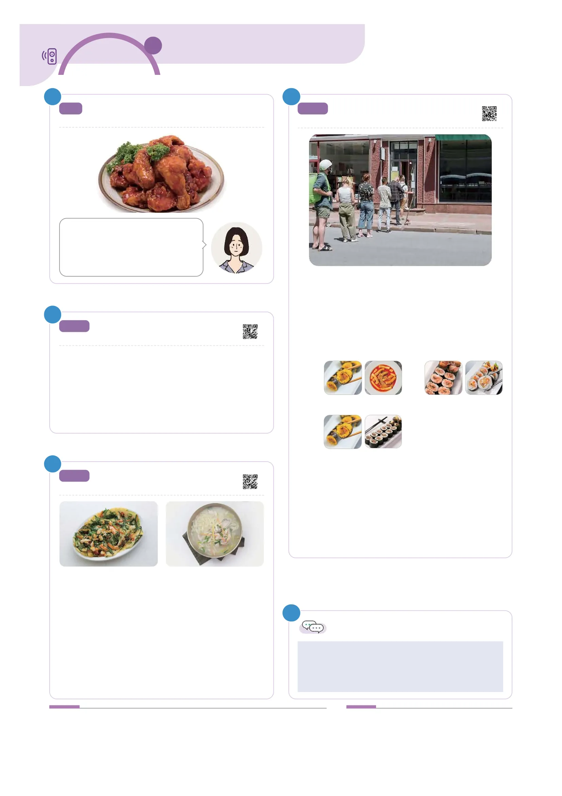
5-1Tinglash듣기준비좋아하는 한국 음식과 그 음식을 좋아하는이유에 대해 이야기해 보세요.저는 양념치킨을 좋아해요.양념치킨은 프라이드치킨처럼느끼하지 않고 매콤해서 자주시켜 먹어요.듣기 1다음은 음식 광고입니다. 잘 듣고질문에 답해 보세요.1이 음식은 무엇입니까?2이 음식의 특징으로 맞는 것을 고르세요.① 고소하고 달다.② 연하고 부드럽다.③ 속은 쫄깃하고 겉은 바삭하다.듣기 2다음은 한국 음식에 대한 대화입니다. 잘 듣고 질문에 답해 보세요.1두 사람은 어떤 음식에 대해 이야기하고 있습니까?① 맵지 않고 담백한 한국 음식② 고기가 들어가지 않은 한국 음식③ 누구나 쉽게 만들 수 있는 한국 음식2들은 내용으로 맞는 것을 고르세요.① 해물파전은 파가 들어가서 조금 맵다.② 여자는 해물파전을 먹어 본 적이 없다.③ 새로 온 직원은 한국 음식을 좋아한다.듣기 3다음은 주문한 음식에 대한 대화입니다. 잘 듣고 질문에 답해 보세요.1두 사람이 식당에 간 이유로 알맞은 것을고르세요.① 유명한 장소라고 들어서② 맵지 않은 음식을 먹을 수 있어서③ 여러 가지 요리를 맛볼 수 있어서2두 사람이 주문한 음식은 무엇입니까?①계란김밥떡볶이②김치김밥치즈김밥③계란김밥불고기김밥3들은 내용과 일치하는 것을 고르세요.① 여자는 블로그를 보고 이 식당을 알게 되었다.② 여자는 룸메이트에게 줄 음식을 포장해서가려고 한다.③ 여자는 식당 음식이 입에 안 맞을까 봐 일부러아침을 먹고 왔다.친구들과 이야기해 보세요.• 지금 가장 먹고 싶은 고향 음식은 무엇입니까?• 맛있는 음식을 먹기 위해 멀리 가거나 오랫동안기다린 적이 있습니까?양념치킨 ziravorli tovuq프라이드치킨 qovurilgan tovuq식사를 거르다 ovqatni o'tkazib yubormoq굶다 och qolmoq꿀 asal간편하다 qulay bo'lmoq해물파전 dengiz mahsulotli ko'k piyozli quymoq밀가루 un해물 dengiz mahsulotlari파 ko'k piyoz오징어 kalmar군침이 돌다 so'lagi oqmoq하도 shunchalik일부러 ataylab4789101112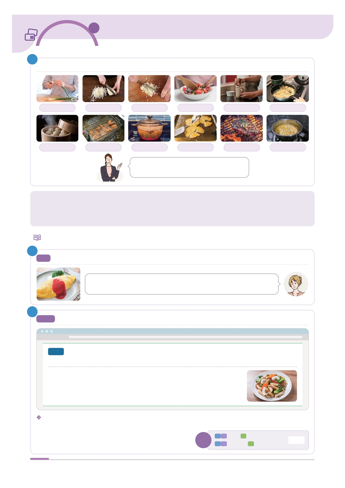
O'qish읽기5-2한가Lug'at어휘조리법❖좋아하는 음식과 그 음식을 만드는 방법에 대해 이야기해 보세요.다듬다썰다다지다섞다젓다볶다찌다튀기다삶다부치다굽다끓이다저는 해물파전을 좋아해요. 만들기 쉬워서자주 부쳐 먹어요.다듬다 kesibtozalamoq썰다 to'g'ramoq다지다 qiymaqilmoq섞다 aralashtirmoq젓다 aralashtirmoq볶다 qovuribaralashtirmoq찌다 bug'dapishirmoq튀기다 yog'daqovurmoq삶다 qaynatmoq부치다 qovurmoq굽다 grildapishirmoq끓이다 qaynatmoq준비만들 수 있는 음식이 있습니까? 그 음식의 요리 방법을 이야기해 보세요.저는 오믈렛을 만들 수 있어요. 먼저 채소나 고기를 작게 썰어요. 재료를 미리준비해야 요리하기가 편하거든요. 그다음에 달걀과 함께 섞어서 부치면 돼요.읽기 1다음은 집들이 음식을 추천하는 글입니다. 잘 읽고 질문에 답해 보세요.질문이번 주말에 집들이를 하는데 외국인 친구가 오기로 했어요. 맵지 않아야 그 친구가 먹을 수 있을텐데요. 무슨 음식을 준비하는 게 좋을까요?↳궁중떡볶이를 만드는 게 어때요? 궁중떡볶이는 고추장 대신 간장을 넣어서만드는 떡볶이라서 맵지 않거든요. 고기와 떡에 간장 양념을 넣고 볶기만 하면돼요. 한번 만들어 보세요.잘 읽고 내용과 일치하면 ○, 일치하지 않으면 × 하세요.1)궁중떡볶이에는 고기와 떡이 들어간다.( )2)궁중떡볶이는 고추장을 넣어서 만든다.( )3)집들이에 올 외국 친구는 매운 음식을 좋아한다.( )동형-어야, 명이어야☞99쪽동형-거든(요), 명이거든(요)◀ ▶ C오믈렛 omlet달걀 tuxum대신 o'rniga간장 soya sousi양념 ziravor48문법과표현123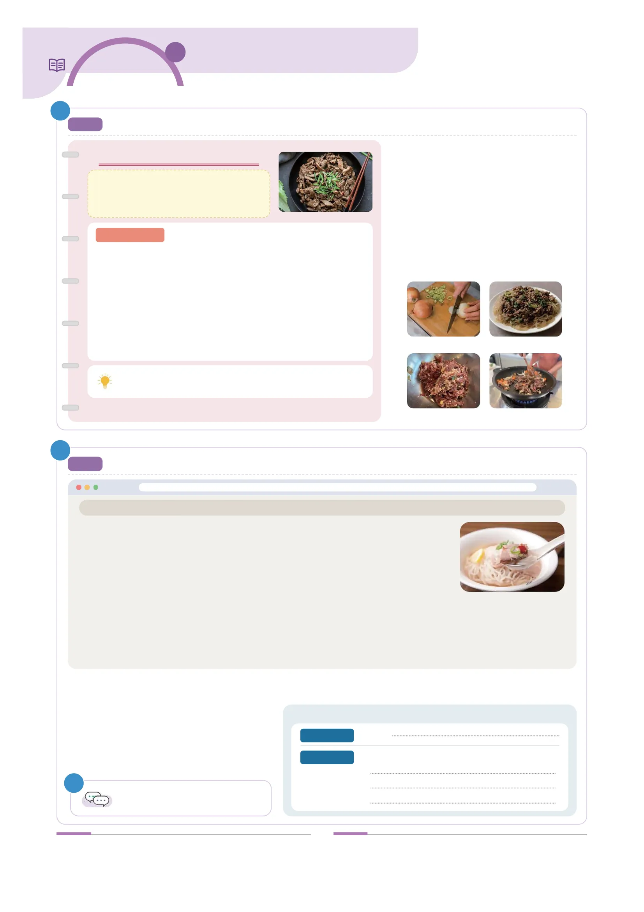
5-2O'qish읽기읽기 2다음은 불고기 만드는 방법에 대한 글입니다. 잘 읽고 질문에 답해 보세요.1이 글을 잘 이해한 사람은 누구입니까?① 미호: 고기는 질기지 않은 부분을사용해야 좋아요.② 민정: 먼저 고기만 넣고 볶다가 양념장을넣어야 맛있어요.③ 윤우: 프라이팬이 뜨거워지기 전에 고기와야채를 넣어야 해요.2그림을 보고 불고기 만드는 순서에맞게 번호를 쓰세요.( )( )( )( )불고기 만들기재료소고기 600g, 양파 1개, 파 30g, 버섯 20g,간장, 후추, 설탕, 다진 마늘, 참기름만드는 방법1) 채소와 고기를 먹기 좋은 크기로 썰어 놓는다. 고기는 연한부분을 사용하는 것이 좋다.2) 간장에 후추, 설탕, 다진 마늘, 참기름을 넣고 섞어서 양념장을만든다.3) 양념장에 고기를 넣어 30분 정도 재운다. 고기를 재워야 더연하고 맛있어진다.4) 뜨거워진 프라이팬에 고기와 준비한 야채를 넣고 볶는다.5) 완성된 불고기를 접시에 담는다.요리 비법양념장에 설탕 대신에 과일을 갈아서 넣어보세요. 과일을 넣으면 더 맛있거든요.읽기 3다음은 고향 음식을 소개하는 글입니다. 잘 읽고 질문에 답해 보세요.언제나 그리운 내 고향 음식, 쌀국수제가 가장 먹고 싶은 고향 음식은 쌀국수예요. 한국에도 베트남 쌀국수를 파는 곳이많이 있지만 고향에서 먹는 쌀국수가 언제나 그리워요. 베트남 사람들은 누구나 쌀국수를좋아해요. 간편하게 먹을 수 있고 맛도 좋거든요.오늘은 여러분에게 쌀국수 만드는 법을 소개해 드릴게요. 쌀국수를 만들려면 소고기,쌀국수, 양파, 파, 고추 등이 필요해요. 소고기 대신 닭고기를 사용해도 돼요.재료 준비가 끝나면 먼저 냄비에 물을 붓고 고기와 양파, 파를 넣고 끓여요. 그다음에국수를 삶아요. 삶은 국수는 찬물에 씻어야 면이 쫄깃해져요. 마지막으로 미리 삶아 놓은 쌀국수에 국물을 붓고 썰어놓은 고기를 올려요. 여기에 숙주나 양파, 고수를 넣으면 더 맛있어요.조리법만 이야기했는데 벌써 입에 군침이 도는 것 같네요. 오늘 저녁에 직접 만든 쌀국수를 드셔 보는 건어떠세요?1이 글의 내용으로 맞는 것을 고르세요.① 한국에는 쌀국수를 파는 곳이 없다.② 쌀국수를 만들려면 소고기나 닭고기가필요하다.③ 이 사람은 쌀국수를 만들기 위한 조리법을찾고 있다.2다음은 쌀국수 재료와 만드는 방법을 정리한 것입니다. 알맞은내용을 써 보세요.베트남 쌀국수 만들기재료소고기,만드는 방법1. 냄비에 물을 붓고 고기와 양파, 파를 넣고 끓인다.2..3..4..친구들과 만들어 먹고 싶은고향 음식이 있습니까?양파 piyoz버섯 qo'ziqorin후추 qora murch 양념장 marinad재우다 marinadlamoq프라이팬 tova완성되다 tugallanmoq비법 sir갈다 maydalamoq쌀국수 fo (vyetnam sho'rvasi)고추 achchiq qalampir냄비 qozon붓다 quymoq찬물 sovuq suv숙주 mosh nihollari고수 kashnich조리법 retsept49456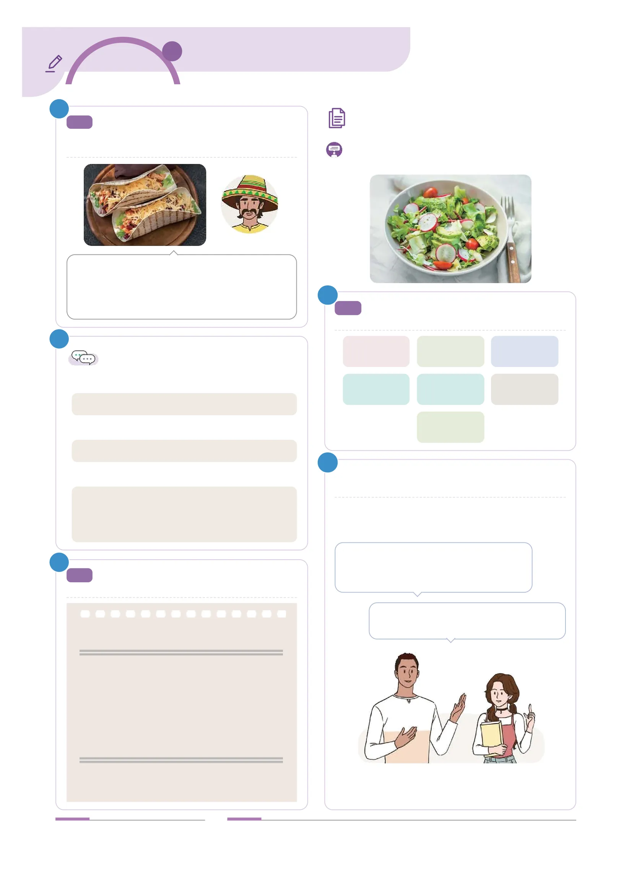
Vazifa과제식단을 조절해야 하는 사람을 위한 조리법을소개해 보세요.5-2Yozish쓰기준비여러분 고향에서 자주 먹는 음식은무엇입니까? 그 음식을 왜 자주먹습니까?멕시코에서는 타코를 자주 먹어요. 타코는토르티야에 여러 가지 재료를 넣어 먹는 음식이에요.언제 어디에서나 간편하게 먹을 수 있어서 인기가좋아요.고향의 유명한 음식에 대해 이야기해 보세요.• 그 음식의 이름은 무엇입니까?• 그 음식이 유명한 이유는 무엇입니까?• 그 음식은 어떻게 만듭니까?쓰기고향의 음식을 만드는 방법에 대해 써보세요.준비못 먹는 음식이 있거나 특별한 식사를해야 하는 사람을 알고 있습니까?밀가루를못 먹는 사람유제품을못 먹는 사람다이어트를하고 있는 사람근육 운동을하고 있는 사람기운이 없는사람채식주의자?1 누구를 위해 무슨 요리를 만들고 싶은지이야기해 보세요.저는 밀가루를 못 먹는 친구를 위해서밀가루 대신 쌀가루로 빵을 만들어 보고싶어요.저는 다이어트를 하고 있는 언니를 위해서두부로 만든 파스타를 만들어 보고 싶어요.타코 tako토르티야 tortilya식단을 조절하다 ovqatlanishga e'tibor bermoq유제품 sut mahsuloti다이어트를 하다 parhezga o'tmoq근육 운동 mushak mashqi채식주의자 vegetarian쌀가루 guruch uni두부 tofu507891011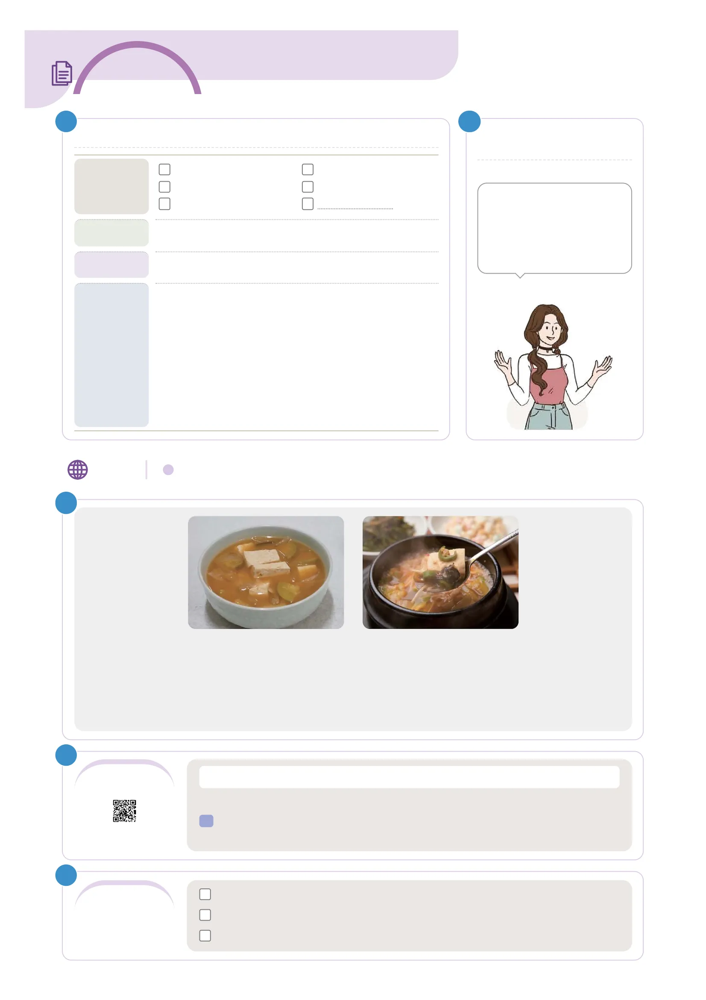
Madaniyat문화국과 찌개Vazifa과제2 만들고 싶은 요리의 조리법을 정리해 보세요.대상밀가루를 못 먹는 사람유제품을 못 먹는 사람다이어트를 하고 있는 사람근육 운동을 하고 있는 사람채식주의자요리 이름필요한 재료조리법3 만들고 싶은 요리와조리법을 발표해 보세요.저는 맛있는 다이어트 음식을만들어 보려고 해요. 두부를사용해서 누구나 좋아하는토마토 파스타를 만들 거예요.먼저….↳»한국에는 된장국, 된장찌개처럼 국물이 있는 음식이 많습니다. 같은 재료를 사용하는 음식인데 왜 어떤 것은‘국’이라고 하고, 어떤 것은 ‘찌개’라고 할까요? ‘국’이나 ‘찌개’는 국물과 재료의 양에 따라서 부르는 말이달라집니다. 그래서 같은 재료가 들어간 음식도 국물이 많으면 ‘국’이라고 하고, 국물이 적고 재료가 많으면‘찌개’라고 합니다. 날씨가 추운 날 따뜻한 국물이 생각날 때 먹는 음식은 바로 ‘국’입니다. 고기나 해물, 김치,두부와 같은 재료를 더 맛있게 먹기 위해 끓인 것은 ‘찌개’입니다.발음Talaffuz이렇게 맛있을 줄 [마시쓸쭐] 몰랐어요.‘-(으)ㄹ’ 뒤에 연결되는 자음 ‘ㄱ, ㄷ, ㅂ, ㅅ, ㅈ’은 주로 [ㄲ, ㄸ, ㅃ, ㅆ, ㅉ]로 발음됩니다.예내일 부산에 갈 거예요.오늘 만날 수 있어요?자기 평가Tekshiruv음식의 맛에 대해 평가할 수 있다.고향의 요리를 소개하는 글을 쓸 수 있다.만들고 싶은 요리와 조리법에 대해 발표할 수 있다.511213141516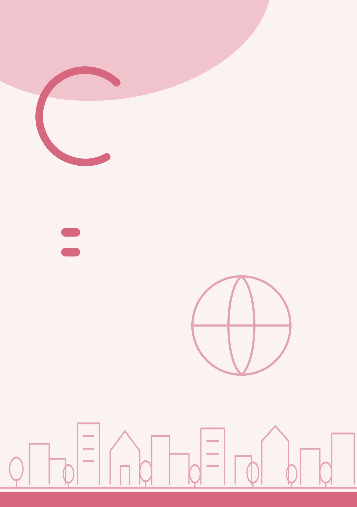
6여가 생활6-1함께 하는 운동6-2색다른 취미지아 씨가 운동을 시작했나 봐요.네, 매일 체육관에 간대요.헬스장에 갔다가 바로 왔어요.왜요? 문을 닫았어요?주말에 북한산에 갈 생각이에요.그 산은 한번 가 볼 만해요.1 스트레스를 어떻게 풀어요?2 새로 배우고 싶은 취미가 있어요?
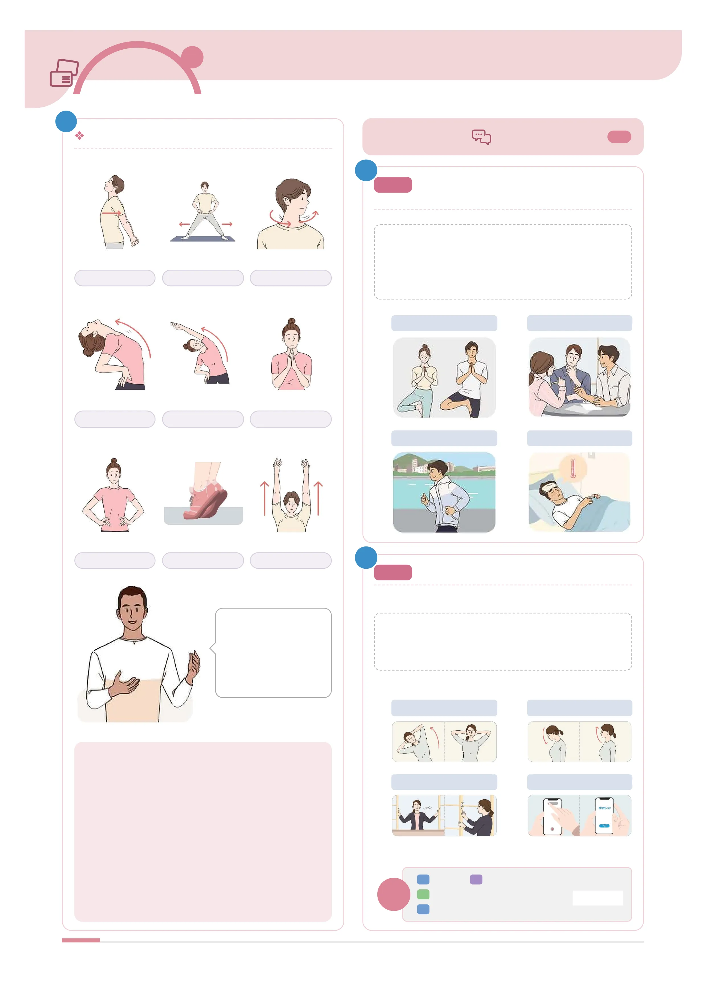
6-1한가Lug'at어휘함께 하는 운동자주 하는 스트레칭 동작이 있습니까?가슴을 펴다다리를 벌리다목을 돌리다몸을 젖히다옆구리를 굽히다손을 모으다손을 허리에 대다발뒤꿈치를 들다팔을 뻗다가슴을 펴다 ko'kragini kermoq다리를 벌리다 oyoqlarini kerib turmoq목을 돌리다 bo'ynini aylantirmoq몸을 젖히다 orqaga suyanmoq옆구리를 굽히다 yon tomonga egilmoq손을 모으다 qo'llarini birlashtirmoq손을 허리에 대다 qo'llarini beliga qo'yib turmoq발뒤꿈치를 들다 tovonini ko'tarmoq팔을 뻗다 qo'llarini cho'zmoq저는 오래 앉아있어서 피곤할 때목을 돌리고 가슴을펴는 동작을 자주해요.Gapirish 말하기6-1준비 1어떤 상황인지 추측해서 이야기해보세요.가: 하이 씨가 일찍 퇴근하네요.나: 요즘 퇴근 후에 요가를 배우나 봐요.가: 저도 요가를 배워 보고 싶은데 하이 씨한테한번 물어봐야겠어요.1)일찍 퇴근하다2)전화를 안 받다3)건강해 보이다4)출근을 안 하다준비 2친구의 고민을 듣고 조언해 보세요.가: 요즘 허리가 자주 아파요.나: 그럼 스트레칭을 해 보세요. 옆구리를굽혔다가 펴면 좀 괜찮아질 거예요.1)허리가 아프다2)운동 중에 목을 삐다3)사무실 공기가 안 좋다4)휴대폰이 잘 안되다동-나 보다, 형-은가 보다,명인가 보다☞100쪽동-었다가삐다 chiqarib olmoq (lat yemoq)54문법과표현123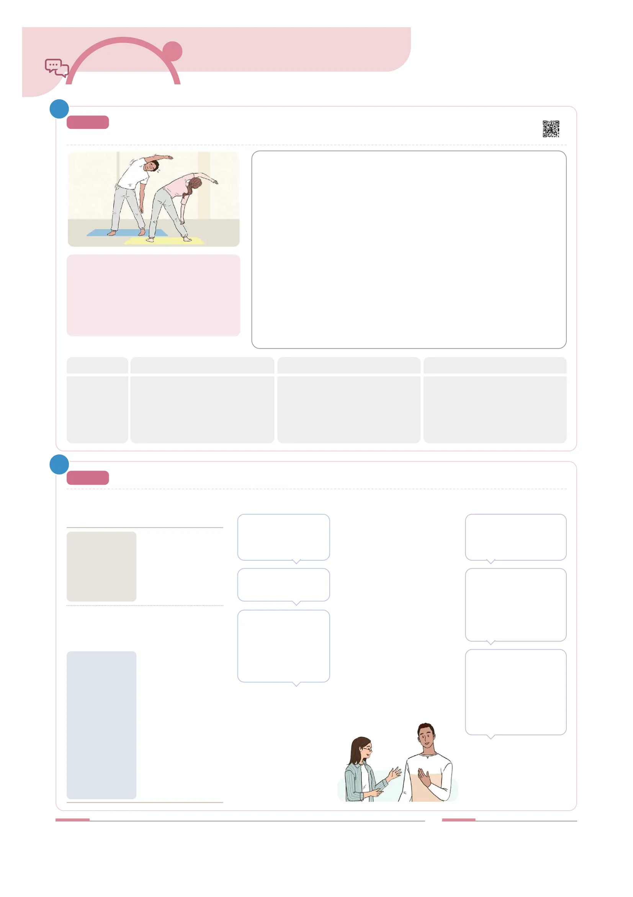
6-1Gapirish말하기말하기 1다음은 스트레칭 동작에 대한 대화입니다. 스트레칭 동작에 대해 친구와 이야기해보세요.1 남자는 왜 운동을 하려고 합니까?2 어떻게 해야 운동 효과를 볼 수있습니까?3 어떤 동작들이 허리 건강에 도움이됩니까?강사: 이 운동을 처음 배우시나 봐요.엥흐: 네. 허리가 아파서 운동을 좀 배워 보려고요. 오늘 새로등록했어요.강사: 잘하셨어요. 허리가 아플 때는 우선 뭉친 근육을 잘 풀어 주셔야해요. 스트레칭을 충분히 하셔야 효과가 있어요.엥흐: 그렇군요. 허리 건강에 도움이 되는 동작을 좀 가르쳐 주세요.강사: 네. 지금부터 저를 따라 해 보세요. 먼저 다리를 약간 벌리고서세요. 그다음에 팔을 위로 쭉 뻗고 옆구리를 굽혔다가 펴세요.마지막으로 양손을 허리에 대고 허리를 크게 한 바퀴 돌리세요.엥흐: 이렇게 하면 되나요?강사: 네. 잘하셨어요. 그 동작을 여러 번 반복하시면 좋아요.엥흐: 감사합니다. 동작이 배우기 쉽고 간단하네요.아픈 곳허리어깨목도움이되는동작① 다리를 약간 벌리고 서다② 팔을 위로 쭉 뻗고 옆구리를굽히다/펴다③ 손을 허리에 대고 허리를 크게한 바퀴 돌리다① 다리를 약간 벌리고 서다② 팔을 뒤로 뻗어서 손을 잡고올리다/내리다③ 손을 어깨에 대고 어깨를 크게한 바퀴 돌리다① 고개를 뒤로 젖히다② 고개를 앞으로 숙이다/들다③ 머리를 크게 한 바퀴 돌리다말하기 2자주 하는 운동에 대해 이야기해 보세요.1자주 하는 운동과 그 운동방법을 정리해 보세요.자주 하는 운동운동 방법먼저그다음에마지막으로2자주 하는 운동과 그 운동 방법을 소개해 보세요.요즘 운동을 열심히하나 봐요. 전보다더 건강해 보여요.요가를 해 보니까어때요?저도 요즘 목과어깨가 안좋은데요. 혹시 목근육을 풀 수 있는방법을 아세요?그래요? 자기 전에매일 요가를 하고있어요.뭉친 근육을 풀 수있어서 좋아요. 저는요가를 하고 나서잠도 잘 오고 몸도가벼워졌어요.먼저 고개를숙이세요. 그다음에고개를 뒤로 젖혔다가드세요. 마지막으로목을 크게 한 바퀴돌리면 돼요.동작 harakat뭉치다 qotib qolmoq근육을 풀다 mushak taranglashuvini bo'shatmoq충분히 yetarlicha효과가 있다 samarali bo'lmoq양손 ikki qo'l한 바퀴 bir aylanish반복하다 takrorlamoq숙이다 (boshni) egmoq몸이 가볍다 tana yengil tortadi5545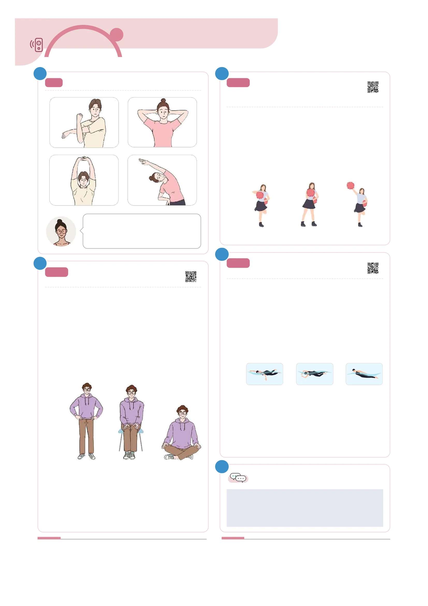
6-1Tinglash듣기준비그림을 보고 동작을 설명해 보세요.왼팔을 오른쪽으로 쭉 뻗으세요.그다음에 오른팔을 굽혀서 왼팔을 눌러주세요.듣기 1다음은 라디오 방송입니다. 잘듣고 질문에 답해 보세요.1무엇에 대해 설명하고 있습니까?2진행자의 설명과 일치하는 그림을 고르세요.①②③듣기 2다음은 응원 동작에 대한대화입니다. 잘 듣고 질문에답해 보세요.1여자에 대한 설명으로 맞는 것을 고르세요.①동아리 공연을 준비하고 있다.②동아리에 가입하기 위해 준비하고 있다.③남자와 함께 새로운 응원 동작을 만들고 있다.2남자가 설명한 응원 동작을 순서에 맞게 번호를써 보세요.()()()듣기 3다음은 수영에 대한 대화입니다.잘 듣고 질문에 답해 보세요.1여자에 대한 설명으로 맞는 것을 고르세요.①수영 동작을 가르치고 있다.②수영을 배운 지 오래되었다.③지난 시간에 발차기 동작을 배웠다.2다음 중 여자가 오늘 배우고 있는 동작으로알맞은 것을 고르세요.①②③3들은 내용으로 맞는 것을 고르세요.①여자는 지난 시간보다 실력이 좋아졌다.②남자는 매일 발차기 연습을 열심히 했다.③수영을 배울 때 어려운 동작을 먼저 배우는 게좋다.친구들과 이야기해 보세요.• 배워 보고 싶은 운동이 있습니까?• 여러분의 고향에서 요즘 인기 있는 운동은무엇입니까?멈추다 to'xtamoq발바닥 oyoq kafti눈을 감다 ko'zini yummoq숨 nafas깊다 chuqur bo'lmoq뱉다 nafas chiqarmoq바른 자세 to'g'ri qomat긴장이 풀리다 taranglik yo'qoladi몸치 yomon raqqos (raqsga no'noq)반대쪽 qarama-qarshi tomon음악에 맞추다 musiqaga ergashmoq응원 동작 cherliding harakati상태 holat발차기 tepish재능이 있다 iste'dodi bo'lmoq56678910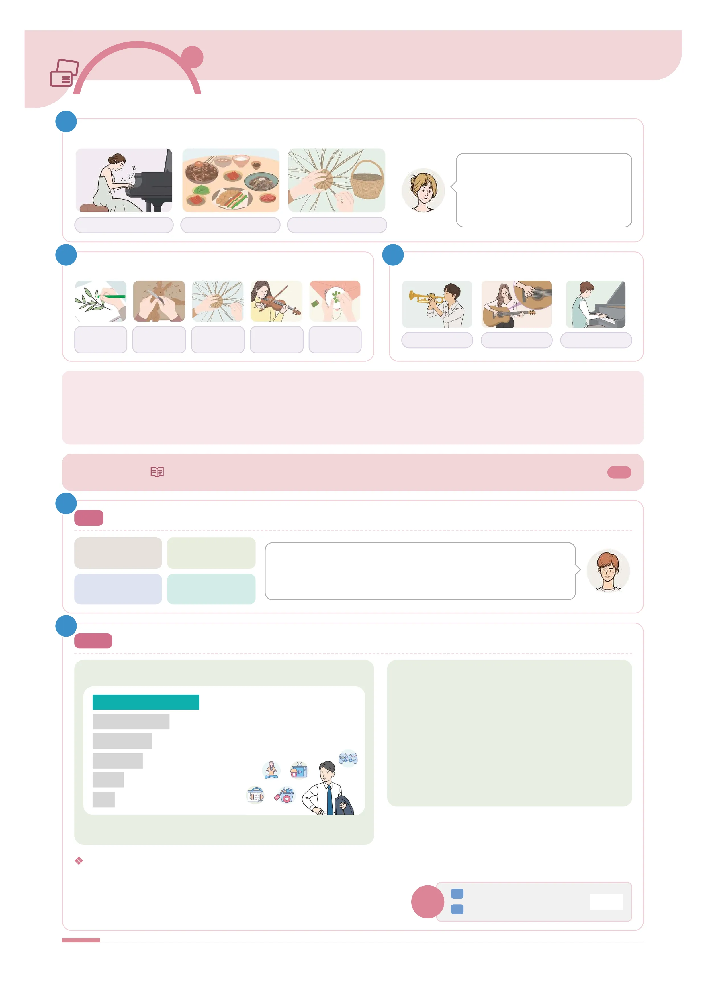
재능이 있다/없다 iste'dodi bor/yo'q bo'lmoq솜씨가 뛰어나다 mahorati g'ayrioddiy손재주가 있다/없다 qo'li chaqqon bo'lmoq/bo'lmaslik색칠하다 bo'yamoq나무를 깎다 yog'och o'ymoq공예를 배우다 hunarmandchilik o'rganmoq악기를 연주하다 cholg'u chalmoq바느질하다 tikmoq입으로 불다 og'iz bilan puflamoq줄을 튕기다 torlarni chertmoq건반을 누르다 klavishlarni bosmoq6-2한가Lug'at어휘색다른 취미1다음과 같은 사람을 알고 있습니까?재능이 있다/없다솜씨가 뛰어나다손재주가 있다/없다피아니스트 조유진 씨는 어렸을때부터 피아노에 재능이 있었대요.그래서 다른 사람들보다 피아노를빨리 배웠다고 해요.2좋아하는 취미 활동이 있습니까?색칠하다나무를 깎다공예를배우다악기를연주하다바느질하다3악기 연주 방법에 대해 이야기해 보세요.입으로 불다줄을 튕기다건반을 누르다O'qish 읽기6-2준비올해 꼭 도전해 보고 싶은 취미 활동이 있습니까?우쿨렐레 배우기가죽 공예 배우기명화 색칠하기?저는 올해 우쿨렐레를 배울 계획이에요. 기타와 연주 방법이비슷해서 기타를 칠 줄 아는 사람은 쉽게 배울 수 있나 봐요.인터넷 동영상을 보고 혼자 따라 할 만하대요.읽기 1다음은 직장인의 여가 생활에 대한 조사 결과입니다. 잘 읽고 질문에 답해 보세요.여가 시간에 무엇을 할 생각입니까?동영상 시청32%인터넷 검색23%게임18%음악 감상15%운동8%쇼핑4%직장인 천 명에게 여가 시간에 무엇을 하고싶은지 물었다. 대부분의 사람들이 영화나드라마를 보거나 인터넷 검색을 하면서 시간을보낼 계획이라고 답했다. 그리고 여가 시간이부족하기 때문에 짧은 시간 동안 스트레스를 풀만한 게임이나 음악 감상을 하고 싶다고 답했다.활동적인 여가 활동을 하는 것보다는 쉬고 싶어하는 사람들이 많은 것을 알 수 있었다.잘 읽고 내용과 일치하면 ○, 일치하지 않으면 × 하세요.1) 운동이나 쇼핑과 같은 여가 활동의 인기가 높았다.()2) 여가 시간에 쉬고 싶다고 대답한 사람들이 많았다.()3) 여가 시간에 영화나 드라마를 본다는 대답이 1위였다.()동-을 생각/계획/예정이다☞101쪽동-을 만하다우쿨렐레 ukulele가죽 charm명화 mashhur rasm검색하다 qidirmoq활동적이다 faol bo'lmoq57문법과표현12345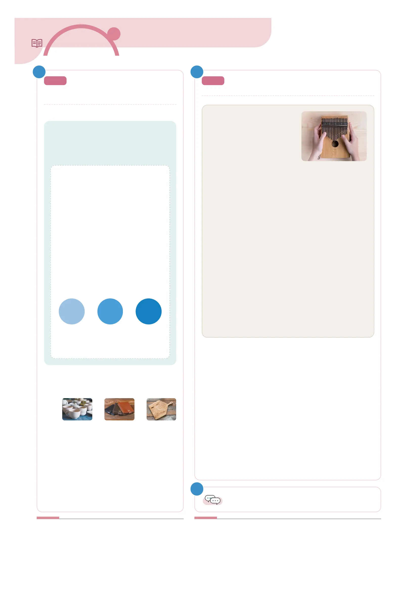
6-2O'qish읽기읽기 2다음은 취미 교실에 대한글입니다. 잘 읽고 질문에 답해보세요.취미 활동을 시작할 계획이신가요?일일 취미 교실로 놀러오세요.• 장소:공예 카페• 일시:매주 월요일, 수요일,토요일(오전 10시 30분,오후 6시)• 참가 인원:7명(선착순)• 수강료:30,000원(재료비 포함)가죽으로 된 물건을 만들어 보는수업입니다. 필요한 재료를 모두 준비해드리기 때문에 초보자도 쉽게 만들어볼 만합니다. 열쇠고리, 카드 지갑, 가방등 매번 새로운 작품을 만들어 볼 수있습니다.초급열쇠고리,필통▶중급카드 지갑,여권케이스▶고급서류 가방,핸드백1취미 교실에서 만들 수 있는 작품으로알맞은 것을 고르세요.①②③2이 글에 대한 내용으로 맞는 것은무엇입니까?①재료비를 따로 내지 않아도 된다.②원하는 시간에 언제나 수업을 들을 수있다.③참가자가 일곱 명보다 많아야 수업을들을 수 있다.읽기 3다음은 인기 있는 취미 활동에 대한기사입니다. 잘 읽고 질문에 답해 보세요.직장인들의 새로운취미‘칼림바’ 연주요즘 칼림바 배우기가직장인들 사이에서 인기를 끌고있다. 칼림바는 중앙아프리카에서 온 민속 악기로 나무판에금속으로 된 가늘고 긴 판이 여러 개 달려 있다. 이 부분을손가락으로 튕겨서 소리를 낸다.칼림바는 소리가 맑고 깨끗해서 마음을 편안하게 해 준다.오르골과 비슷한 소리가 나는데 소리가 크지 않아서실내에서도 편하게 연주할 수 있다. 악기 가격이 저렴하고어디에서나 쉽게 구입할 수 있다는 것도 큰 장점이다.게다가 배우기가 쉬워서 아이부터 어른까지 연주가가능하다. 연주에 재능이 없는 사람도 배워 볼 만한악기이다. 누구나 악기를 배우다가 그만둔 경험이 있을것이다. 연주 방법이 어렵고 복잡하면 금방 흥미를잃어버리게 된다. 그런데 칼림바는 배우기 쉽고 소리도예뻐서 많은 사랑을 받고 있다.다음 달 한국문화회관에서 동호회 회원들이 준비한칼림바 공연이 열릴 예정이다. 미리 신청만 하면 무료로관람할 수 있다고 한다. 자세한 내용은 칼림바 동호회홈페이지에서 확인할 수 있다.1칼림바는 어떻게 생겼습니까?2칼림바의 연주 방법으로 맞는 것을 고르세요.①입으로 불어서 소리를 낸다.②손가락으로 눌러서 소리를 낸다.③손가락으로 튕겨서 소리를 낸다.3이 글에 대한 내용으로 맞는 것을 고르세요.①칼림바는 오르골과 모양이 비슷하다.②칼림바는 누구나 배울 수 있는 악기이다.③다음 달 동호회 회원들이 칼림바 공연을 관람할예정이다.배워 보고 싶은 악기가 있습니까?인원 kishilar soni선착순 kim birinchi kelsa, o'sha oladi재료비 material narxi초보자 boshlovchi (yangi o'rganuvchi)열쇠고리 brelok매번 har safar작품 asar초급 boshlang'ich daraja중급 o'rta daraja고급 yuqori daraja케이스 g'ilof핸드백 qo'l sumkasi칼림바 kalimba중앙아프리카 Markaziy Afrika민속 악기 xalq cholg'usi나무판 yog'och taxta금속 metall가늘다 ingichka bo'lmoq오르골 musiqa qutisi게다가 bundan tashqari58678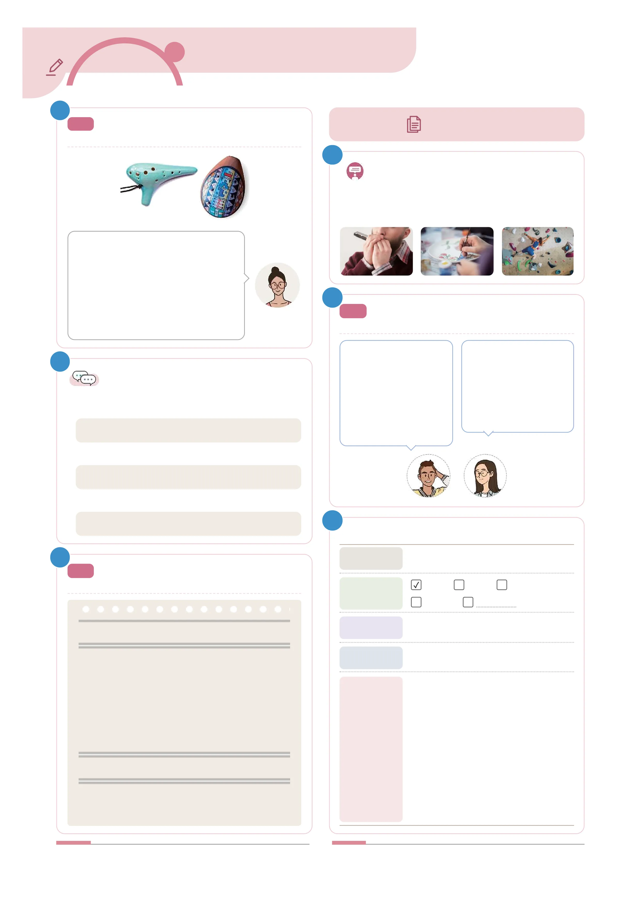
6-2Yozish쓰기준비연주할 줄 아는 악기나 고향의 악기를소개하고 연주 방법을 설명해 보세요.저는 학교에서 오카리나를 배웠어요.오카리나는 흙이나 금속으로 만든악기인데 새 모양인 것도 있고 달걀모양인 것도 있어요. 입으로 불어서연주하는데 손으로 구멍을 막았다가떼면서 소리를 내요. 연주하기 쉬워서아이들도 배워 볼 만해요.소개하고 싶은 악기와 연주 방법에대해 이야기해 보세요.• 소개하고 싶은 악기의 이름은 무엇입니까?• 그 악기는 어떻게 생겼습니까?• 그 악기를 어떻게 연주합니까?쓰기악기의 모양과 연주 방법에 대해 써보세요.Vazifa 과제여러분의 특별한 재능을 친구들과나누려고 합니다. 여러분이 선생님이되어 친구들에게 어떤 수업을 하고싶은지 이야기해 보세요.준비어떤 수업을 하고 싶은지 이야기해보세요.저는 어릴 때부터운동화나 티셔츠에 그림그리는 것을 좋아했어요.친구들에게 옷이나 신발,가방에 그림 그리는방법을 가르쳐 주고싶어요.저는 비즈로 반지나팔찌를 만들 수 있어요.손재주가 없는 사람도쉽게 따라 할 만한 비즈공예 수업을 하고싶어요.1다음과 같이 수업 계획을 세우고 발표해 보세요.수업명오일 파스텔화 그리기장소교실카페운동장온라인참가비10,000원준비물오일 파스텔, 연필, 스케치북 등수업 소개오일 파스텔로 그림을 그려 보는수업입니다. 그림을 배웠다가 재능이없어서 그만둔 적이 있습니까? 이 수업은그림 솜씨가 뛰어나지 않은 사람도 쉽게따라 할 만합니다. 쉽고 재미있게 그림을그리는 방법을 가르쳐 드립니다. 비싼물감 대신에 오일 파스텔로 멋진 그림을완성할 수 있습니다.• 초급: 꽃 그리기• 중급: 동물 그리기• 고급: 풍경 그리기오카리나 okarina흙 tuproq구멍 teshik막다 yopmoq떼다 ochmoq비즈 munchoq오일 파스텔 moyli pastel스케치북 eskiz daftari물감 bo'yoq5991011121314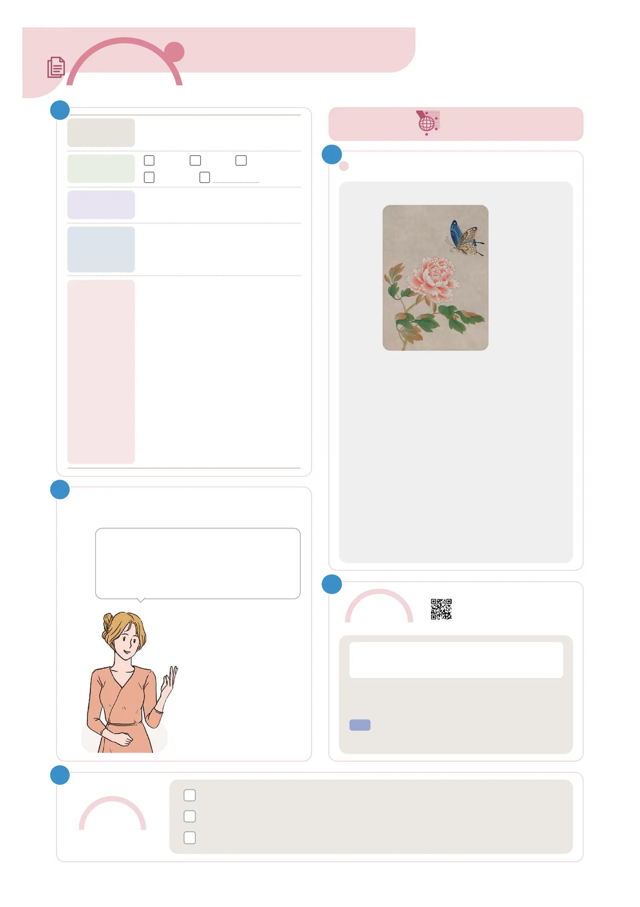
6-2Vazifa과제수업명장소교실카페운동장온라인참가비준비물수업 소개2들어 보고 싶은 수업을 고르고 그 이유를이야기해 보세요.저는 오일 파스텔화 그리기 수업을 듣고싶어요. 그림에 재능이 없어도 쉽게 따라 할만하다고 들었어요. 멋진 작품을 완성해서집에 장식해 놓을 생각이에요.Madaniyat 문화민화 그리기© 연합뉴스↳최근에 다양한 여가 활동에 대한 관심이높아지면서 전통 공예나 그림 등을 취미로 즐기는사람들이 늘고 있습니다. 이에 따라 취미로 민화를그리는 사람도 늘고 있습니다. 민화는 예전에 집안을 장식하기 위해서 그린 생활 그림입니다. 꽃과새, 물고기, 동물 등 다양한 것들을 그렸습니다.최근에는 이런 민화를 쉽게 그려 볼 수 있는컬러링 북부터 특별 수업, 온라인 강의도 있습니다.또 태블릿을 이용해서 편하게 민화를 그리는사람들도 있습니다.발음Talaffuz팔을 위로 쭉 뻗고 [뻗꼬] 옆구리를 굽혔다가펴세요.받침소리 [ㄱ, ㄷ, ㅂ] 뒤에 오는 ‘ㄱ, ㄷ, ㅂ, ㅅ, ㅈ’은[ㄲ, ㄸ, ㅃ, ㅆ, ㅉ]로 발음됩니다.예저는 아침을 먹고 왔어요.오늘은 날씨가 춥지만 하늘에 구름은 없네요.자기 평가Tekshiruv다른 사람의 고민을 듣고 조언할 수 있다.자주 하는 운동 동작을 다른 사람에게 설명할 수 있다.악기의 연주 방법을 설명하는 글을 쓸 수 있다.6015161718197소비와 절약7-1소비 성향7-2중고 거래
이 신발을 살까 말까 해요.저는 그럴 때 안 사는 편이에요.동생이 새 휴대폰을 갖고 싶어 해요.그럼 쓰던 건 중고로 팔면 돼요.쓰던 노트북을 얼마에 팔았어요?십만 원에 팔았어요.1 평소에 돈을 어떻게 아껴 써요?2 물건을 살 때 뭐가 제일 중요해요?
Gapirish말하기7-17-1한가Lug'at어휘소비 성향1 다음 가계부를 보고 지난달과 이번 달의 수입과 지출에 대해 이야기해 보세요.8월수입100만 원지출식비50만 원115만 원교통비10만 원관리비10만 원옷값40만 원인터넷 요금5만 원저축0원9월수입120만 원지출식비70만 원105만 원교통비5만 원관리비10만 원옷값5만 원인터넷 요금15만 원저축15만 원지난달에는 수입보다 지출이 많았어요. 옷을사는 데에 돈을 낭비했어요. 다음 달에는과소비하지 말고 더 절약해야겠어요.이번 달에는 수입이 늘고 지출은 줄었어요.그리고 옷값을 아껴서 15만 원을 저축했어요.2 생활비에 대해 이야기해 보세요.한 달 생활비는 얼마가 적당할까요?한 달 식비는 얼마면 충분할까요?저는 한 달 식비로 35만 원 정도를쓰는데 가끔 남을 때도 있어요.글쎄요. 60만 원 정도면 충분할 것 같아요.관리비도 내야 하고 책도 사야 하는데저는 그 돈으로는 모자랄 것 같아요.저는 외식을 자주 해서 그 돈으로는 좀부족할 것 같아요.수입 daromad지출 xarajat늘다 ko'paymoq줄다 kamaymoq아끼다 ayamoq (tejabqolmoq)절약하다 tejamoq저축하다 jamg'armoq낭비하다 isrof qilmoq 과소비하다 ortiqcha pulsarflamoq모자라다 yetishmaslik부족하다 yetarli bo'lmaslik 충분하다 yetarli bo'lmoq 남다 ortib qolmoq적당하다 me'yorida bo'lmoq준비 1다음에 대해 어느 쪽에 가까운지 표시하세요. 그리고 친구와 이야기해 보세요.가: 돈을 아껴 써요?나: 네. 아껴 쓰는 편이에요. 저는 물건을 사기 전에 여러 번 생각해요.가: 저는 돈을 낭비하는 편이에요. 필요 없는 물건을 사서 후회한 적이 많아요.1)돈을 아껴 쓰다2)일을 시작하기전에 계획을세우다3)책을 즐겨 읽다4) 스트레스를 쉽게받다5) 문화생활을 하는데에 쓰는 돈이많다6)사교적이다아니요네아니요네아니요네아니요네아니요네아니요네준비 2고민하고 있는 일에 대해 친구와 이야기해 보세요.동-는 편이다, 형-은 편이다☞102쪽동-을까 말까 (하다)가: 새 휴대폰을 살 거예요?나: 글쎄요. 이번 달 생활비가 모자라서살까 말까 생각 중이에요.가: 그럼 중고 휴대폰을 알아보는 건어때요?1)이번 달생활비가모자라다2)바람이많이 불다3)휴가가이틀밖에없다4)회사 일이바쁘다사교적이다 kirishimli bo'lmoq중고 ishlatilgan63문법과표현1234
7-1Gapirish말하기말하기 1다음은 절약에 대한 대화입니다. 소비 습관에 대해 친구와 이야기해 보세요.1 여자는 왜 휴대폰을 사지 않았습니까?2 남자는 왜 돈을 모으려고 합니까?3 여자는 남자에게 절약을 하기 위해서 어떻게하라고 했습니까?민우: 무슨 고민 있어요?나나: 휴대폰이 오래돼서 살까 말까 하고 있어요.민우: 얼마 전에 사러 간다고 하지 않았어요? 아직 안 샀어요?나나: 네. 지난달에 여행을 갔다 와서 지출이 많이 늘었거든요.민우: 그랬군요. 참, 저도 다음 달에 친구들하고 여행을 가기로 했어요. 그래서 돈을 모아야 하는데 제가 쇼핑하는걸 좋아하는 편이라서 자꾸 과소비를 하게 돼요.나나: 그럼 쇼핑하기 전에 사야 할 물건을 미리 적어 보는 건 어때요? 그렇게 하면 꼭 필요한 물건인지 생각해 볼수 있기 때문에 과소비를 줄일 수 있대요.민우: 그래요? 저도 그렇게 해 봐야겠어요. 빨리 돈을 모아서 여행을 떠나고 싶어요.나나: 목표가 있으니까 돈을 더 쉽게 모을 수 있을 거예요.구입할 물건휴대폰노트북자전거과소비를 하는 이유쇼핑하는 걸 좋아하다갖고 싶은 건 꼭 사다취미 활동에 돈을 많이 쓰다조언사야 할 물건을 미리 적다비슷한 물건을 가지고 있는지 확인하다등산이나 독서를 해 보다사야 할 것휴지오이우유계란바나나말하기 2절약하는 방법에 대해 이야기해 보세요.1 돈을 아껴서 하고 싶은 일이 있습니까?2 돈을 아끼는 방법에 대해 이야기해 보세요.저는 생활비를 아껴서 그돈으로 여행을 더 자주다니고 싶어요.휴대폰이 고장 나서 살까 말까 고민하고있어요.저도 그러고 싶지만 요즘 여행 가려고 돈을모으고 있거든요.외식을 하지 말고 집에서 만들어 먹으면어때요? 그렇게 하면 식비를 절약할 수있을 텐데요. 건강에도 좋고요.사용한 지 오래된 것 같은데 그냥 새로사는 게 어때요?그럼 중고 휴대폰을 한번 알아보세요. 쓸만한 제품이 있을 거예요. 저도 저축을해야 하는데 외식을 자주 하는 편이라서쉽지 않네요.앞으로는 그렇게 해 봐야겠어요.적다 yozmoq줄이다 kamaytirmoq목표 maqsad외식 tashqarida ovqatlanmoq6456
7-1Tinglash듣기준비돈을 아끼는 것에 대해 어떻게 생각합니까?저는 항상 돈을 아껴 써야 한다고생각해요. 돈을 낭비하면 꼭 필요할 때돈이 모자라서 곤란해질 수 있으니까요.저는 과소비만 하지 않으면 원하는 것을사도 괜찮다고 생각해요.듣기 1다음은 라디오 뉴스입니다. 잘듣고 질문에 답해 보세요.1 무엇에 대해 이야기하고 있습니까?① 돈을 아끼는 방법② 돈을 낭비하는 문제③ 소비에 대한 생각의 변화2 들은 내용으로 맞는 것을 고르세요.① 자신이 하고 싶은 일에 돈을 쓰는 사람들이늘었다.② 생활비가 부족해서 소비를 하지 않는 사람들이많아졌다.③ 요즘 사람들은 수입이 늘면 지출이 늘어도괜찮다고 생각한다.듣기 2다음은 쇼핑에 대한 대화입니다.잘 듣고 질문에 답해 보세요.1 두 사람의 쇼핑에 대한 생각을 정리해 보세요.남자여자주로 어디에서쇼핑합니까?왜 그곳에서 자주쇼핑합니까?1.2. 편하게 환불을받을 수 있다.1. 물건이다양하고 값이싸다.2.2 대화가 끝난 후 여자가 이어서 할 행동으로 알맞은것을 고르세요.① 백화점에 정장을 사러 간다.② 인터넷 쇼핑몰에서 주문한 옷을 반품한다.③ 인터넷 쇼핑몰에서 마음에 드는 옷을 찾는다.듣기 3다음은 소비와 절약에 대한대화입니다. 잘 듣고 질문에 답해보세요.1 여자의 중심 생각으로 알맞은 것을 고르세요.① 돈을 아껴 쓰려면 지출을 반드시 줄여야 한다.② 할인할 때 물건을 미리 사 두면 돈을 아끼는 데도움이 된다.③ 무조건 돈을 아끼는 것보다 필요 없는 물건을 안사는 것이 중요하다.2 남자에 대한 설명으로 맞는 것을 고르세요.① 꼭 필요한 물건만 구입한다.② 절약을 잘해서 큰 인기를 끌고 있다.③ 돈을 아끼기 위해 할인하는 제품을 구입한다.3 이 방송을 듣고 잘 실천하고 있는 사람을 고르세요.① 나나: 돈을 아끼기 위해 마트에 자주 안 가요.② 민우: 꼭 필요한 물건을 구입할 때에만 돈을 써요.③ 엥흐: 하나 가격에 두 개를 준다고 하면 무조건사요.친구들과 이야기해 보세요.• 똑똑하게 소비하는 방법을 알고 있습니까?• 친구나 가족 중에 저축을 잘하는 사람을 알고있습니까?곤란하다 qiyin bo'lmoq망설이다 ikkilanmoq무조건 so'zsiz설문 조사 so'rovnoma1인 방송 bir kishilik efir (blog)상하다 aynimoq오히려 aksincha실천하다 amalga oshirmoq657891011
O'qish읽기7-27-2한가Lug'at어휘중고 거래1 물건을 팔고 싶은 이유에 대해 이야기해 보세요.새것 같다품질이 좋다버리기가 아깝다멀쩡하다싫증이 나다지겹다왜 그 배낭을 팔려고해요? 아직 새것같은데요.새로 사고 싶은 배낭이 생겼거든요.품질이 좋고 디자인도 마음에 들어서이 배낭을 샀는데 자주 메니까 좀지겨워졌어요.2 다음은 중고 거래 앱에 올라온 상품입니다. 판매자와 구매자가 되어 이야기해 보세요.☰고래마켓중고 거래 상품: 자전거판매 금액: 5만 원자전거가 여러 대 있어서 팝니다. 조금만수리하시면 새것처럼 타실 수 있을 겁니다.직접 오셔서 거래하실 분만 연락해 주세요.지금 자전거를 구입할 수 있을까요?왜 그 물건을 판매하려고 하세요?자전거를 구입하고 싶은데 결제는어떻게 할까요?자전거를 구입한 후에 마음에 들지않으면 반품할 수 있나요?네. 구입하실 수있습니다.자전거가⋯.새것 같다 yangidek ko'rinmoq품질이 좋다 sifatli bo'lmoq버리기가 아깝다 biror narsani tashlashga ko'ngli bo'lmaslik멀쩡하다 butun, soz bo'lmoq싫증이 나다 zerikmoq지겹다 jonga tegmoq거래하다 savdo qilmoq구입하다 sotib olmoq판매하다 sotmoq결제하다 to'lamoq반품하다 qaytarmoq준비중고로 팔고 싶은 물건이 있습니까? 친구에게 팔고 싶은 물건을 소개해 보세요.운동화휴대폰거울저는 제가 신던 운동화를 팔려고 해요.사이즈가 좀 작아서 거의 신지 않았어요.품질도 좋고 아직 새것 같아요. 이 운동화를보면 누구나 사고 싶어 할 거예요.읽기 1다음은 온라인 중고 거래 광고입니다. 잘 읽고 질문에 답해 보세요.SNU고래마켓우리 동네 중고 거래는 고래마켓에서.고래마켓에서는 같은 동네에 사는 사람들끼리 쓰던 물건을 사고팔 수 있습니다. 싫증이 난옷, 버리기 아까운 가구가 있으신가요? 고래마켓에서는 누구나 쉽게 중고 물건을 판매하고구입할 수 있습니다. 중고 물건이라 품질이 나쁠까 봐 걱정되시나요? 고래마켓에서는 동네사람들과 직접 만나서 거래합니다. 물건에 문제가 있을까 봐 불안해하실 필요가 없습니다.잘 읽고 내용과 일치하면 ○, 일치하지 않으면 × 하세요.형-어하다☞103쪽동형-던1) 고래마켓에서는 동네 사람 누구나 중고 물건을 사고팔 수 있다.( )2) 중고 물건을 팔고 싶으면 고래마켓에 직접 가서 물건을 맡겨야 한다.( )3) 고래마켓에서는 판매자와 구매자가 직접 만나지 않고 거래할 수 있다.( )고래 kit사고팔다 oldi-sotdi qilmoq직접 shaxsan불안하다 bezovta bo'lmoq판매자 sotuvchi구매자 xaridor66문법과표현1234
7-2O'qish읽기읽기 2다음은 중고 거래를 하는 두 사람의 대화입니다. 잘 읽고 질문에 답해 보세요.SNU고래마켓우리 동네 중고 거래고래마켓제니아인1 두 사람이 거래하고 있는물건은 무엇입니까?2 구매자에 대한 설명으로 맞는것을 고르세요.① 판매자와 직접 만나서거래하고 싶어 한다.② 구입할 물건의 사진을 보고물건을 구입했다.③ 구입한 물건이 마음에 들지않아 교환하려고 한다.안녕하세요? 전자 피아노를 구입하고 싶은데요. 피아노를 얼마나사용하셨어요?아이가 치던 피아노인데 구입한 지 6개월 정도 됐어요. 아이가 다른악기를 배우고 싶어 해서 팔려고 해요.그러시군요. 그런데 혹시 직접 찍은 피아노 사진을 볼 수 있을까요?피아노 상태가 궁금해서요.상태는 좋은 편이에요.제가 지금 밖에 나와 있는데 집에 들어가자마자 찍어서 보내드릴게요.감사합니다. 그리고 사시는 곳이 저희 집과 멀지 않아서 가능하면직거래를 하고 싶어요. 구입하게 되면 제가 직접 가지러 갈게요.읽기 3다음은 중고 거래 사이트에 올라온 글입니다. 잘 읽고 질문에 답해 보세요.중고 가전제품 판매합니다.다음 달에 이사를 가게 돼서 사용하지 않는 물건들을 팔려고 합니다. 이사 날짜가 다음 달 15일이라서 이 날짜에가져가실 수 있는 분께 팔 생각입니다. 그리고 배송은 해 드리지 않습니다. 직접 오셔서 구입하실 분만 연락해 주세요.• 판매 가격: 350,000원작년에 구입한 에어컨인데 아직도 새것 같습니다. 품질도 좋고 성능도 뛰어납니다. 사고 나서 일주일정도밖에 틀지 않았습니다. 이사 갈 집에 에어컨이 설치되어 있다고 해서 가지고 갈까 말까 고민하다가팝니다.• 판매 가격: 100,000원제 동생이 사용하던 운동 기구입니다. 구입한 지는 좀 됐지만 아직 꽤 쓸 만합니다. 헬스장에 가는 것을귀찮아하시거나 운동할 시간이 부족한 분들에게 추천합니다.• 판매 가격: 무료사은품으로 받은 6인용 밥솥입니다. 밥도 잘되고 디자인도 깔끔합니다. 거의 사용하지 않아서 상태도좋은 편입니다. 에어컨을 구입하시는 분께 무료로 드리겠습니다.1 이 글에 대한 설명으로 맞는것을 고르세요.① 밥솥은 에어컨을 구입하고사은품으로 받았다.② 판매자는 동생이 사용하던운동 기구를 팔려고 한다.③ 에어컨은 구입한 후에 한 번도사용한 적이 없는 새 제품이다.2 다음은 거래를 원하는 사람들입니다. 누구와 거래하는 것이 가장 좋을지이야기해 봅시다.①아야나②자밀라③크리스에어컨을 사고 싶은데 택배로 보내 주실 수 있나요? 배송비는제가 내겠습니다.안녕하세요? 밥솥만 구입할 수 있을까요? 근처에 살고 있어서원하시는 시간에 제가 가지러 갈 수 있어요.운동 기구를 사고 싶어요. 다음 달 15일이 마침 쉬는 날이라시간도 되고요. 그런데 혹시 운동 기구를 언제 구매하셨는지 알수 있을까요?중고로 물건을 살 때 주의해야 할 점이 있습니까?전자 피아노 raqamli pianino직거래 to'g'ridan-to'g'ri savdo성능 unumdorlik설치되다 o'rnatilmoq운동 기구 sport jihozi꽤 ancha귀찮다 ovora bo'lmoq사은품 bepul sovg'a밥솥 guruch pishirgich67567
Vazifa과제7-2Yozish쓰기준비인터넷으로 판매하고 싶은 물건이있습니까?새 노트북을 선물로 받았어요. 그래서제가 쓰던 노트북을 팔까 말까고민하고 있어요.팔고 싶은 물건에 대해 이야기해 보세요.• 팔고 싶은 물건이 있습니까? 왜 그 물건을 팔고싶습니까?• 언제 구입한 물건입니까? 물건의 상태는 어떻습니까?• 어떻게 거래하고 싶습니까?쓰기인터넷에 물건을 판매하는 글을 써보세요._친구들이 어떻게 절약하고 있는지 조사한 후발표해 보세요.준비여러분이 알고 있는 절약방법이 있습니까?물건을 싸게구입하는 방법여행을싸게 가는 방법표를싸게 사는 방법식비를절약하는 방법통신비를절약하는 방법에너지를절약하는 방법1 2~3명이 한 팀이 되어 위의 카드 중 한 장을고른 후 절약하는 방법을 정리해 보세요.물건을 싸게구입하는 방법• 인터넷으로 할인쿠폰을 찾아본다.• 중고 거래사이트에서 필요한물건을 찾는다.•.•.통신비 telefon to'lovi에너지 energiya688910111213
Madaniyat문화한국의 속담7-2Vazifa과제2 다른 친구들이 어떻게 절약하고 있는지 더조사해 보세요.물건을 싸게 구입하려면 어떻게 해야 합니까?• 인터넷으로 할인 쿠폰을 찾아본다.• 중고 거래 사이트에서 필요한 물건을 찾는다.•.3 위에서 정리한 내용으로 발표 원고를 쓰세요.그리고 친구들 앞에서 발표해 보세요.인사와주제 소개인사안녕하세요?/안녕하십니까?팀 소개3급 3반 ‘즐거운 한국어’팀입니다.주제 소개지금부터 ‘물건을 싸게구입하는 방법’에 대해발표하겠습니다.조사 결과주제 1먼저/우선/첫째⋯.주제 2다음으로/둘째⋯.주제 3마지막으로/셋째⋯.마무리인사이것으로 물건을 싸게구입하는 방법에 대한발표를 마치겠습니다.지금까지 저희 팀의 발표를들어 주셔서 감사합니다.질문이 있으면 해 주세요./질문이 있으십니까?안녕하십니까? 3급 3반 ‘즐거운 한국어’ 팀입니다.오늘 저희는 ‘물건을 싸게 구입하는 방법’에 대해발표하겠습니다. 먼저, 물건을 싸게 구입하기위해서는 할인 쿠폰을 찾아봐야 합니다. 인터넷으로검색을 하면 할인 쿠폰을 쉽게 찾을 수 있습니다.다음으로 중고 거래 사이트에서 괜찮은 물건이있는지 알아봐야 합니다. 그리고⋯.속담은 오래전부터 전해져 내려온 말로 교훈을주는 내용이 많습니다. 속담을 배우면 옛날사람들의 생각이나 생활 모습도 알 수 있습니다.그럼 소비나 절약에 대한 한국 속담을 알아볼까요?티끌 모아 태산이다.먼지가 쌓여서 큰 산이되는 것처럼 적은 돈도모으면 큰돈이 된다는의미의 속담입니다.강물도 쓰면 준다.지금은 많아 보이는것도 계속 쓰면 부족해질수 있으니 물건을낭비하지 말아야 한다는의미의 속담입니다.발음Talaffuz지난달에 여행을 갔다 와서지출이 많이 .‘-거든(요)’는 ‘이유를 말할 때’와‘하려고 하는 말의 배경을 말할 때’의 억양이 다릅니다. ‘이유를 말할때’에는 끝을 내려서 말하고‘하려고 하는 말의 배경을 말할 때’는 끝을 올려서 말합니다.예이따가 공항에 가야 해요.고향에서 친구가 .지난 주말에 제주도에 갔다. 경치도 아름답고음식도 맛있었어요.자기 평가Tekshiruv자신의 소비 방식에 대해말할 수 있다.중고로 팔고 싶은 물건을판매하는 글을 쓸 수 있다.절약하는 방법에 대해 묻고답할 수 있다.교훈 saboq, ibrat69늘었거든요오거든요왔거든요1415161718
8한국 생활8-1문제와 해결8-2문화 차이
밤에 발소리가 크게 들리더라고요.소리가 안 나도록 조심할게요.어제 계단에서 넘어질 뻔했어요.괜찮아요? 조심하세요.한국인은 다 매운 걸 잘 먹죠?한국인이라고 다 그런 것은 아니에요.1 한국에 와서 뭐가 제일 놀라웠어요?2 이웃하고 자주 인사해요?
8-1한가Lug'at어휘문제와 해결1 집에 대해 이야기해 보세요.지금 살고 있는 집을 어떻게 구했습니까?월세에 전기 요금이 포함되어 있습니까?집을 계약하기 전에 무엇을 확인했습니까?공과금을 어떻게 납부하고 있습니까?2 그림을 보고 어떤 문제가 있는지 이야기해 보세요.세면대가 막히다물이 새다전기가 나가다소음이 심하다배송이 안 되다3 문제를 해결한 경험에 대해 이야기해 보세요.하수구를 뚫다전구를 갈다집을 내놓다글을 올리다세면대가 막혔을 때 세제를 넣고막힌 하수구를 뚫었어요.집을 계약하다 uy shartnomasiniimzolamoq공과금을 납부하다 kommunal to'lovnito'lamoq물이 새다 suv oqyapti소음이 심하다 shovqin juda baland하수구를 뚫다 quvurni tozalamoq집을 내놓다 uyini sotuvga qo'ymoq전기 요금이 포함되다 elektr narxgakiritilgan세면대가 막히다 rakovina tiqilib qolgan전기가 나가다 elektr o'chadi배송이 안 되다 yetkazib berilmaydi전구를 갈다 lampochkani almashtirmoq글을 올리다 post joylamoqGapirish 말하기8-1준비 1한국에서 경험한 일에 대해 다음과 같이이야기해 보세요.가: 한복을 입어 보니까 어땠어요?나: 입어 보니까 생각보다 편하고 예쁘더라고요.가: 저도 꼭 한번 입어 보고 싶어요.1)한복을 입다2)삼계탕을 먹다3)혼자 살다4) 한국 가수의 콘서트에 가다준비 2문제 상황과 해결 방법에 대해 이야기해보세요.가: 무슨 일 있어요?나: 갑자기 이사를 가게 됐어요. 어떻게 하면좋을까요?가: 그럼 방이 빨리 나가도록 부동산에 방을내놓으세요.문제 상황• 갑자기 이사를 가게 되다• 한국어 실력이 좋아지지 않다• 요즘 잠을 잘 못 자다• 감기에 걸렸는데 열이 안내리다동형-더라고(요), 명이더라고(요)☞104쪽동-도록72문법과표현12345
8-1Gapirish말하기말하기 1다음은 한국에서 생활하면서 생길 수 있는 문제에 대한 대화입니다. 문제와 해결 방법에대해 친구와 이야기해 보세요.1 여자는 왜 이사를 하려고 합니까?2 여자는 이사를 가기 위해서 무엇을 해야 합니까?3 대화가 끝난 후 여자가 할 행동은 무엇입니까?아야나: 안녕하세요. 저 305호에 사는 세입자인데요.집주인: 아야나 씨, 안녕하세요. 무슨 일이에요?아야나: 제가 갑자기 지방에 내려가게 됐어요. 그래서 다음 달까지만 살고 이사해야 할 것 같아요.집주인: 아, 그래요? 그런데 방을 계약한 지 얼마 안 돼서 아야나 씨가 다음 세입자를 구해 놓고 나가야 하는데요.아야나: 정말요? 제가 어떻게 하면 될까요?집주인: 일단 제가 부동산에 방을 내놓을게요. 아야나 씨도 방이 빨리 나가도록 인터넷 카페에 글을 올리세요.그렇게 하면 연락이 많이 오더라고요.아야나: 알겠습니다. 빨리 인터넷 카페에 글을 올려야겠네요.집주인: 세입자를 구할 수 있을 테니까 너무 걱정하지 마세요.상황이사를 하다인터넷 연결이 잘 안되다세면대 하수구가 막히다문제세입자를 구해 놓고 나가야 하다인터넷 문제를 직접 해결해야 하다막힌 하수구를 직접 뚫어야 하다해결 방법방이 나가도록 인터넷 카페에 글을 올리다인터넷이 잘 되도록 통신 회사에 연락하다물이 잘 내려가도록 하수구를 청소하다말하기 2일상생활에서 생길 수 있는 문제와 해결 방법에 대해 이야기해 보세요.1 문제와 해결 방법을 연결하세요.2 문제와 해결 방법에 대해 이야기해 보세요.1)전구 불이 깜빡거리다불이 잘 들어오다보일러를 수리하다2)난방이 안 되다주문한 물건을다시 받다전구를 갈다3)이사할 방을아직 구하지 못했다빨리 방을 구하다게시판에 글을 올리다4)인터넷으로 주문한 상품이잘못 배송되었다난방이 잘 되다부동산에 연락하다무슨 문제가 있어요?전구를 오래 사용했나 보네요.오래된 전구를 빼서 들고 가세요.그렇게 하면 물건을 찾기 쉽더라고요.방에 있는 전구 불이 어제부터깜빡거려요.네. 불이 다시 잘 들어오도록 새 전구를사서 갈아 끼워야겠어요.네. 그럴게요. 고마워요.세입자 ijarachi지방 viloyat깜빡거리다 miltillamoq난방 isitish tizimi보일러 isitish qozoni수리하다 ta'mirlamoq끼우다 burab mahkamlamoq7367
8-1Tinglash듣기준비집을 구할 때 중요하게 생각하는 것이있습니까?크고 조용한 방 있습니다.(보증금 500만 원/월세 40만 원)• 공원과 가까워서 조용하고 공기가 맑습니다.• 인터넷 요금, 전기 요금, 수도 요금이 월세에포함되어 있습니다.깨끗한 방 있습니다.(보증금 800만 원/월세 35만 원)• 지하철역까지 걸어서 10분! 교통이 편리합니다.• 세탁기, 냉장고, 텔레비전, 전자레인지,에어컨이 마련되어 있습니다.듣기 1다음은 아파트 안내 방송입니다.잘 듣고 질문에 답해 보세요.1 안내 방송을 하는 이유는 무엇입니까?2 들은 내용과 일치하면 ○, 일치하지 않으면 ×하세요.1) 재활용 쓰레기는 쓰레기봉투에넣어서 버려야 한다.()2) 재활용 쓰레기는 일요일과수요일에만 버릴 수 있다.()3) 일반 쓰레기는 비상구 계단에 모아두었다가 버리면 된다.()듣기 2다음은 집에 생긴 문제에 대한대화입니다. 잘 듣고 질문에 답해보세요.1 남자가 여자의 집을 방문한 이유는 무엇입니까?2 대화가 끝난 후 여자가 이어서 할 행동으로 맞는것을 고르세요.① 직접 화장실을 고친다.② 수리 기사에게 연락한다.③ 남자의 집에 화장실을 보러 간다.듣기 3다음은 부동산 직원과 손님의대화입니다. 잘 듣고 질문에 답해보세요.1 여자가 보러 간 집에 대해 정리해 보세요.2 여자가 전에 살던 집에 어떤 문제가 있었습니까?①②③3 들은 내용으로 알맞은 것을 고르세요.① 여자는 이 집을 계약할 것이다.② 여자는 다른 집을 보러 갈 것이다.③ 여자는 이사한 후에 이 집을 고칠 것이다.• 집이 좁지만 깔끔하다.• 물이.• 세면대가 막혀서.• 꼭대기 층이라서.친구들과 이야기해 보세요.• 고향에서는 어떻게 집을 구합니까?• 집을 계약하기 전에 무엇을 확인해야 합니까?마련되다 berilmoq (ta'minlanmoq)쓰레기봉투 axlat qopi비상구 favqulodda chiqish피해를 주다 zarar yetkazmoq천장 shift바닥 pol젖다 ho'l bo'lmoq뚝뚝 tomchi-tomchi (tovush)수리 기사 usta꼭대기 ust/tepa층간 소음 qavatlararo shovqin굉장히 nihoyatda7489101112
8-2한가Lug'at어휘문화 차이1 그림을 보고 이야기를 만들어 보세요.착각하다실망하다다투다이해가 되다사과하다화해하다사이좋다지호야, 나 내일 6시쯤퇴근할 수 있어.그럼 6시 30분에 만나자.나도 아까 화내서 미안해.오늘 늦어서 미안해.지호는 퇴근 후에 미나를만나기로 했습니다.그런데….2 오해한 경험에 대해 이야기해 보세요.다른 사람을 오해한 적이 있어요?그때 어떻게 오해를 풀었어요?네. 같은 반 친구가 저를 보면 자꾸 도망가서 저를싫어한다고 생각했어요.친구한테 기분 나쁘다고 솔직히 말했어요. 그런데 그친구가 저를 좋아해서 그런 거였대요.착각하다 adashmoq사과하다 kechirim so'ramoq오해를 풀다anglashilmovchilikni bartarafetmoq실망하다 hafsalasi pir bo'lmoq화해하다 yarashmoq다투다 tortishmoq사이좋다 chiqishib ketmoq솔직히 말하다 ochiq gapirmoq이해가 되다 tushunarlibo'lmoq오해하다 noto'g'ri tushunmoqO'qish 읽기8-2동-을 뻔하다☞105쪽명이라고 (해서) 다 동-는/ 형-은/ 명인 것은 아니다준비문화 차이 때문에 오해한적이 있습니까?한국에 처음 왔을 때동호회 친구들이 서로를‘언니’, ‘형’이라고 불러서가족이라고 오해할뻔했어요. 저한테도언니라고 해서 처음에는솔직히 좀 놀랐어요.그런데 한국 사람이라고해서 항상 서로를그렇게 부르는 건아니더라고요. 저를가족처럼 생각해서그렇게 부른다는 걸알고 정말 기뻤어요.읽기 1다음은 외국인 유학생 게시판에 올라온 글입니다. 잘 읽고질문에 답해 보세요._ ⤢ ✕외국인 유학생 카페질문이 있어요.우리 고향에서는 식당에서 각자 자기가 시킨 음식만먹거든요. 그래서 한국에서도 그렇게 했는데 여자 친구가저한테 정이 없어 보인다고 하더라고요. 얼마 전에도 이문제로 여자 친구하고 크게 다툴 뻔했어요. 그런데 제가음식을 나눠 먹지 않는다고 해서 정이 없는 사람은아니거든요. 솔직히 말하면 지금도 여자 친구가 왜서운해하는지 이해가 잘 안돼요.↳ 에릭저도 처음에는 제가 시킨 음식만 먹는 게 편했어요. 그런데직장 동료들과 밥을 먹을 때 여러 가지 음식을 시켜서 같이먹으니까 다양한 음식을 맛볼 수 있어서 오히려좋더라고요. 동료들과의 사이도 더 좋아진 것 같아요.1 이 사람의 여자 친구는 왜서운해했습니까?2 여러분은 이 사람에게 무슨말을 해 주고 싶습니까?다니엘나눠 먹다 bo'lishmoq (ovqat)서운하다 xafa bo'lmoq75문법과표현7시 30분까지 가려면지금 출발해야겠다.나는 약속 시간이 7시30분인 줄 알았어.내가 약속 시간을착각했어. 미나야,정말 미안해.1234
8-2O'qish읽기읽기 2다음은 잡지에 실린 인터뷰입니다. 잘 읽고 질문에 답해 보세요.[대학 인터뷰]외국인 글짓기 대회 대상 수상자를 만나다!• 이번에 외국인 글짓기 대회에서 대상을 받으셨는데요. 축하드립니다. 세라 씨, 지금기분이 어떠신가요?글쓰기에 자신이 없어서 참가를 포기할 뻔했는데 이렇게 큰 상을 받게 되어서정말 기쁩니다. 고향에 계신 부모님께서 저보다 더 기뻐하시더라고요. 부모님께 큰선물을 해 드린 것 같아서 기분이 좋습니다.• 글짓기 주제가 ‘문화 차이’였다고 들었습니다. 무슨 내용을 쓰셨는지 소개해주시겠어요?한국에서는 ‘우리 학교’, ‘우리 가족’처럼 ‘우리’라는 말을 자주 씁니다. 솔직히 처음에 이 말을 듣고 좀 놀랐습니다.제 고향에서는 이럴 때 보통 ‘나’라고 하기 때문입니다. 그래서 함께하는 한국 문화를 주제로 글을 써야겠다고생각했습니다.• 마지막으로 독자 여러분께 전하고 싶은 말씀이 있으면 해 주세요.각자의 문화가 다르다고 해서 어느 한쪽이 틀린 것은 아니라고 생각합니다. 서로의 문화를 이해하고 존중하는태도가 가장 중요한 것 같습니다.1 누구에 대한 인터뷰입니까?2 이 글에 대한 내용으로 맞는 것은 무엇입니까?① 이 사람은 부모님께 상을 받은 소식을 전했다.② 이 사람은 대회에 참가하는 것을 포기했다가 다시 나왔다.③ 이 사람의 고향에서는 ‘나’ 대신 ‘우리’라는 말을 자주 사용한다.읽기 3다음은 블로그에 올라온 글입니다. 잘 읽고 질문에 답해 보세요._ ⤢ ✕저는 한국에서 일한 지 6개월이 조금 넘었습니다. 처음에는 한국 생활이 좀 힘들었지만 지금은 많이익숙해졌습니다. 한국에 오고 나서 한국에 대한 생각도 많이 달라졌습니다.먼저 저는 한국에 오기 전에 한국 음식은 다 매울 줄 알았습니다. 제가 매운 음식을 잘 못 먹기 때문에 한국 음식을못 먹을까 봐 걱정도 많이 했습니다. 그런데 한국 음식이라고 해서 다 매운 것은 아니었습니다. 불고기나 삼겹살처럼맵지 않은 음식이 더 많았습니다.그리고 한국이 이렇게 안전한 곳일 줄 몰랐습니다. 제 숙소 근처에는 늦게까지문을 여는 가게가 정말 많습니다. 그래서 밤늦게 혼자 다녀도 별로 무섭지 않습니다.얼마 전에는 휴대폰을 카페에 두고 나와서 잃어버릴 뻔한 일이 있었습니다. 한참후에 찾으러 갔는데 제 휴대폰이 원래 있던 자리에 그대로 놓여 있어서 깜짝놀랐습니다. 제가 그동안 한국에 대해 잘 모르고 있었다고 느꼈습니다.한국에서 살면서 한국에 대해 더 많이 알게 되었습니다. 그리고 오해나 편견도많이 사라졌습니다. 저는 한국 문화를 배우는 일이 즐겁습니다. 물론 외국 생활이외롭고 힘들 때도 있지만 앞으로도 한국에서 좋은 추억을 더 많이 만들고 싶습니다.1 이 글을 쓴 사람에 대한 설명으로 맞는 것을고르세요.① 지금 한국에서 일하고 있다.② 한국 음식이 입에 안 맞아서 밥을 먹기가힘들다.③ 밤늦게 혼자 다니면 위험하기 때문에 일찍 집에들어간다.한국에 대해 잘못 알고 있던 것이있었습니까?2 다음은 이 글을 읽은 사람들의 댓글입니다. 글의내용을 잘 이해한 사람을 고르세요.①↳소날한국에서는 물건을 잃어버리지 않도록조심해야겠어요.②↳테오한국을 여행하고 싶은데 음식이 맵다고해서 걱정이에요.③↳안나저도 한국에 가면 밤늦게까지 맛있는것도 먹고 쇼핑도 할 거예요.대상 bosh sovrin포기하다 voz kechmoq독자 o'quvchi (kitobxon)존중하다 hurmat qilmoq태도 munosabat (xulq)넘다 o'tmoq그대로 o'sha holicha편견 bir yoqlama qarash7656
8-2Yozish쓰기준비다른 나라에 대해 알고 있던 정보가 맞는지 친구들과이야기해 보세요.러시아는 항상 춥다고 들었는데정말이에요?아니에요. 많은 친구들이 그렇게오해하고 있더라고요. 러시아라고 해서언제나 추운 것은 아니에요. 봄에는날씨가 따뜻해서 여행하기 좋아요.잘못 알고 있던 정보에 대해이야기해 보세요.• 그동안 가지고 있던 오해나 편견이있습니까?• 정확한 사실은 무엇입니까?쓰기잘못 알고 있던 정보에 대해 정확한 사실을 전달하는 글을 써 보세요.Vazifa 과제친구들과 문제를 해결하는역할극을 해 보세요.준비최근에 생활하면서 생긴 문제가 있습니까?집이웃친구언어생활비?요즘 온라인으로 태국어를 배우고 있는데 인터넷이 자꾸끊겨서 불편해요. 인터넷이 잘되도록 수리 기사를 불러서고쳐야겠어요.1 상황 카드를 고르고 어떻게 해결할 수 있을지 이야기해 보세요.내일 시험이 있어서 밤새도록공부할 예정이다. 그런데 기숙사옆방 친구가 밤 10시가 넘도록파티를 하고 있다. 소음이 너무심해서 공부에 집중을 할 수가없다.고향 친구가 한국에 여행을왔는데 내일 다시 고향으로돌아간다. 오늘이 그 친구의생일이라서 파티를 준비했다.그런데 아까부터 옆방 친구가계속 문을 두드린다.옆집 사람에게 너무 시끄러우니까 조용히 해 달라고부탁해 보는 건 어떨까요?소음 때문에 이웃집에 직접 찾아가면 안 된다고 들었어요. 관리 사무소에전화해서 상황을 말하고 대신 해결해 달라고 부탁하는 게 좋겠어요.함께 사는 공간이니까 서로 조심하는 게 좋겠어요.일단 먼저 사과하고 상황을 잘 설명해 보는 게어때요?공동주택에 산다고 해서 항상 조용히 해야 하는 건 아니라고 생각해요.소음 때문에 스트레스를 많이 받는 편이라면 조용한 주택으로 이사하는게 나아요.정확하다 aniq bo'lmoq사실 fakt두드리다 taqillatmoq공간 joy (bo'shliq)공동주택 ko'p oilali turar joy77789101112
Vazifa과제2 상황 카드를 보고 친구와 역할극을 해 보세요.누구세요?크리스 씨, 안녕하세요. 그런데 무슨 일이세요?죄송합니다. 많이 시끄러우셨어요? 지금 친한 친구생일이라서 파티를 하고 있어서….나나 씨, 저 옆방에 사는 크리스예요.파티를 하시나 봐요. 너무 시끄러워서….제가 내일 중요한 시험이 있어서 오늘 밤새도록공부를 해야 하는데….3 친구들 앞에서 역할극을 해 보고 가장 잘한 팀을 뽑아 보세요.Madaniyat 문화한국의 손동작한국에서는 멀리 있는 사람을 부를 때 손바닥을 아래로 오게 한 후 앞뒤로흔듭니다. 한국에서 손바닥을 위로 오도록 해서 사람을 부르면 실례가 될 수 있으니조심해야 합니다.엄지와 검지를 붙여서 동그랗게 만들고 다른 손가락을 펴서 보이는 모양은 ‘돈’을의미하기도 하지만 한국에서는 ‘좋다’, ‘괜찮다’, ‘오케이(Okay)’라는 의미로 자주사용됩니다.손등이 보이는 ‘브이(V)’가 나쁜 의미로 사용되는 나라도 있다고 합니다. 그런데한국에서 검지와 중지를 펴서 만드는 ‘브이(V)’ 모양은 승리나 행운을 의미합니다.발음Talaffuz부동산에 방을 내놓을게요. [내노을께요]받침 ‘ㅎ, ㄶ, ㅀ’ 뒤에 모음이 오는 경우에는 [ㅎ]을 발음하지 않습니다.예눈이 많이 내려서 마당에 눈이 쌓였어요.저녁에 먹으려고 김치찌개를 끓여 놓았어요.자기 평가Tekshiruv문제 상황과 해결 방법을 말할 수 있다.사실을 알고 나서 달라진 것에 대해 말할 수 있다.정확한 사실을 전달하는 글을 쓸 수 있다.승리 g'alaba행운 omad781314151617
9사건과 사고9-1사고와 부상9-2분실
다리를 다쳤다고요?네, 축구를 하다가 넘어졌어요.휴대폰 화면이 깨졌어요.어쩌다가 그랬어요?잃어버린 가방이 얼마만 해요?이 책만 해요.1 물건을 잃어버리면 어떻게 해요?2 다쳤을 때 어느 병원에 가요?
Gapirish말하기동-는다고(요), 형-다고(요), 명이라고(요)☞106쪽동-다(가)9-1한가Lug'at어휘사고와 부상1 그림을 보고 상황을 설명해 보세요.물에 빠지다문에 끼이다뱀에게 물리다엘리베이터에 갇히다교통사고가 나다음주 운전을 하다과속을 하다신호를 어기다2 다쳐서 치료를 받은 적이 있습니까?삐다부러지다찢어지다꿰매다깁스를 하다수술하다팔이 부러져서 수술했어요.준비 1어떤 소식을 듣고 놀란 경험에 대해 이야기해 보세요.가: 나나 씨가 오늘 아침에 교통사고를 당했대요.나: 네? 교통사고를 당했다고요?가: 네. 저도 아까 듣고 깜짝 놀랐어요.1)2)3)4)준비 2사고가 난 상황을 이야기해 보세요.가: 어쩌다가 사고가 났어요?나: 횡단보도를 건너다가 차에 치였어요. 그래서다리가 부러졌어요.1)2)3)4)물에 빠지다 suvga tushib ketmoq문에 끼이다 eshikka qisilib qolmoq뱀에게 물리다 ilon chaqmoq엘리베이터에 갇히다 liftda qolib ketmoq교통사고가 나다 avtohalokatga uchramoq음주 운전을 하다 mast holda haydamoq과속을 하다 tezlikni oshirmoq신호를 어기다 qizil chiroqdan o'tib ketmoq삐다 chiqarib olmoq (lat yemoq)부러지다 sinmoq찢어지다 yirtilmoq꿰매다 chok qilmoq깁스를 하다 gips qo'yilmoq수술하다 operatsiya qilmoq치이다 mashina bosib ketmoq81문법과표현1234
9-1Gapirish말하기말하기 1다음은 교통사고에 대한 대화입니다. 사고 상황에 대해 친구와 이야기해 보세요.1 여자는 왜 남자에게 전화를 했습니까?2 여자는 어떻게 하다가 사고를 당했습니까?3 남자는 내일 뭘 하려고 합니까?나나: 나 어제 교통사고를 당했어.에릭: 교통사고를 당했다고? 괜찮아?나나: 다리가 부러져서 깁스를 했어. 며칠 입원해야 한대. 그래서 내일은 만나기 힘들 것 같아.에릭: 그렇구나. 많이 놀랐겠다. 그런데 어떻게 하다가 사고가 났어?나나: 횡단보도를 건너다가 차에 치였어. 자동차 운전자가 신호를 어기고 과속을 했대.에릭: 정말 큰일 날 뻔했네. 내일 수업 끝나고 문병 갈게.나나: 고마워. 병원에 혼자 있어서 심심했는데 잘됐다.에릭: 그럼 내일 갈게. 몸조리 잘하고 필요한 게 있으면 말해 줘.다친 곳다리가 부러지다이마가 찢어지다팔이 부러지다사고 상황횡단보도를 건너다가 차에 치이다버스에서 내리다가 오토바이에 치이다자전거를 타다가 다른 차와 부딪치다사고 원인신호를 어기고 과속을 하다운전 중에 휴대폰을 보다졸음운전을 하다말하기 2주위에서 일어난 사고에 대해 이야기해 보세요.1 사고에 대해 들은 적이 있습니까?2 위의 사고에 대해 이야기해 보세요.언제, 누구에게 일어난 사고입니까?어떤 사고입니까?왜 사고가 났습니까?다친 사람이 있습니까?배우 리나 씨가 교통사고를 당했대요.네. 횡단보도를 건너다가 택시에 치였대요.다리가 부러져서 2주 동안 깁스를 해야 한대요.네? 교통사고를 당했다고요?그래서 많이 다쳤대요?어떡해요. 빨리 나았으면 좋겠네요.운전자 haydovchi문병(을) 가다 bemorni ko'rgani bormoq몸조리 tiklanish부딪치다 to'qnashib ketmoq원인 sabab졸음운전 uyqusirab haydash8256
9-1Tinglash듣기준비사고로 다쳐서 치료를 받은 적이 있습니까?저는 높은 구두를 신고걷다가 발목을 삔 적이있어요. 그래서 병원에 가서치료를 받았어요.듣기 1다음은 백화점 안내 방송입니다. 잘 듣고 질문에 답해 보세요.1 무엇에 대해 안내하고 있습니까?① 백화점 엘리베이터 이용 방법② 백화점 에스컬레이터 위치 안내③ 백화점 에스컬레이터 이용 시 주의 사항2 안내 방송에 나온 내용으로 맞는 것을 고르세요.① 비가 오는 날에는 에스컬레이터 대신엘리베이터를 이용해야 한다.② 최근 에스컬레이터에서 걷거나 뛰다가 다치는사고가 자주 일어난다.③ 유모차를 가지고 에스컬레이터를 이용할 때에는앞사람과 부딪치지 않도록 주의해야 한다.듣기 2다음은 통화하는 두 사람의 대화입니다. 잘 듣고 질문에 답해보세요.1 여자는 왜 다쳤습니까?2 남자에 대한 설명으로 알맞은 것을 고르세요.① 야근을 자주 해서 건강이 나빠졌다.② 여자의 사고 소식을 듣고 많이 놀랐다.③ 일주일 동안 병원에 입원해서 치료를 받아야한다.듣기 3다음은 물놀이 사고 예방에 대한 대화입니다. 잘 듣고 질문에답해 보세요.1 물에 들어가기 전에 물을 적셔야 하는 순서로맞는 것을 고르세요.① 팔 → 얼굴 → 다리② 다리 → 팔 → 얼굴③ 얼굴 → 팔 → 다리2 다음 중 물놀이를 안전하게 하고 있는 사람을고르세요.①②③3 들은 내용과 일치하는 것을 고르세요.① 여자는 어렸을 때 준비 운동이 중요하다고배웠다.② 여자는 물에 빠진 사람을 구하다가 다친 적이있다.③ 여자는 여름철 물놀이 사고 예방 방법을 알려주고 있다.친구들과 이야기해 보세요.• 문병을 간 경험이 있습니까?• 고향에서는 어떤 사고가 자주 일어납니까?반드시 albatta손잡이 tutqich발생하다 sodir bo'lmoq노약자 keksalar va nogironlar보호자 vasiy주의하다 ehtiyot bo'lmoq유모차 bolalar aravachasi주의 사항 ehtiyot chorasi복도 yo'lak무덥다 dim bo'lmoq물놀이 suv o'yini전문가 mutaxassis여름철 yoz vaqti예방하다 oldini olmoq적시다 ho'llamoq절대로 hech qachon위험하다 xavfli bo'lmoq발견하다 ko'rib qolmoq 구조하다 qutqarmoq주위 atrof튜브 suzish chambaragi막대기 tayoqcha837891011
O'qish읽기명만 하다☞107쪽동-어지다9-2한가Lug'at어휘분실1 물건을 잃어버리거나 도난당한 적이 있습니까?도난을 당하다신고하다분실하다보관하다돌려주다2 아래의 그림을 보고 느낌이나 모양을 설명해보세요.세모네모마름모동그라미둥글다뾰족하다울퉁불퉁하다평평하다딱딱하다거칠다매끄럽다멜론은 둥근 모양이고겉이 울퉁불퉁해요.준비물건을 분실하거나 찾아 준 경험을 이야기해 보세요. 그리고 그 물건의 모양을설명해 보세요.저는 도서관 화장실에서 시계를잃어버린 적이 있어요. 그때 같은과 친구가 주워서 보관하고 있다가돌려줬어요. 그 시계는 동그라미모양이고 크기는 오백 원짜리동전만 해요. 그리고 가죽으로만들어진 시곗줄이 달려 있어요.읽기 1다음은 기숙사 게시판에 올라온 글입니다. 잘 읽고 질문에 답해 보세요.위에서 설명한 가방의 모양으로 알맞은 것을 고르세요.①②③가방 주인을 찾습니다어젯밤 11시쯤 기숙사 3층 휴게실에서 가방을주웠습니다. 천으로 만들어진 회색 가방이고네모 모양입니다. 크기는 노트북만 합니다.그리고 가방 앞쪽에는 손바닥만 한 강아지그림이 그려져 있습니다. 가방 안에는 공책과스웨터가 들어 있었습니다. 가방을 분실하신분은 아래 번호로 연락해 주시면 돌려드리도록하겠습니다.(연락처: 010-0880-5488)도난을 당하다 o'g'irlatmoq신고하다 xabar bermoq분실하다 yo'qotmoq보관하다 saqlamoq돌려주다 qaytarmoq세모 uchburchak네모 kvadrat마름모 romb동그라미 doira둥글다 dumaloq bo'lmoq뾰족하다 o'tkir bo'lmoq울퉁불퉁하다 notekisbo'lmoq평평하다 tekis bo'lmoq딱딱하다 qattiq bo'lmoq거칠다 g'adir-budur bo'lmoq매끄럽다 silliq bo'lmoq짜리 shuncha son/miqdor uchun hisob so'zi시곗줄 soat tasmasi달리다 osilgan bo'lmoq휴게실 dam olish xonasi천 mato84문법과표현1234
9-2O'qish읽기읽기 2다음은 학교 게시판에 올라온 글입니다. 잘 읽고 질문에 답해 보세요._ ⤢ ✕자전거를 찾아가세요.몇 주 전부터 학생회관 앞에 자전거가 세워져있었습니다. 새 자전거처럼 보이는데 아무도찾으러 오지 않아서 이상하다고 생각했습니다.자전거가 멀쩡한 것을 보면 버려진 것 같지는않습니다. 자전거는 빨간색인데 앞에는 주먹만 한등과 네모 모양의 바구니가 달려 있습니다.저도 자전거를 도난당한 경험이 있는데 주인을찾아 주고 싶어서 이 글을 올리게 되었습니다. 혹시이 자전거를 찾고 계시는 분은 경비실로 가 보시기바랍니다. 자전거가 계속 학생회관 입구 쪽을 막고있어서 오늘 경비실에 자전거를 맡겼습니다.1 잘 읽고 위에서 설명하고 있는 자전거로 알맞은것을 고르세요.①②③2 분실한 자전거를 찾고 싶으면 어떻게 해야합니까?① 경비실에 가서 자전거를 찾아온다.② 자전거를 도난당했다고 경찰서에 신고한다.③ 이 글을 올린 사람을 만나서 자전거를돌려받는다.읽기 3다음은 물건을 잃어버린 사람이 인터넷에 올린 글입니다. 잘 읽고 질문에답해 보세요.버스 분실물 센터제목카메라를 찾습니다작성자말리분실한 날짜5월 26일분실한 장소321번 버스 안연락처010-0880-5488321번 버스에서 필름 카메라를잃어버렸습니다. 분실물 센터에 연락해 봤는데제가 탄 버스에는 카메라가 없었다고 합니다.카메라를 잃어버린 시간은 오후 4시에서 5시사이입니다. 버스 맨 뒤 오른쪽 창가 자리에앉아 있다가 카메라를 두고 내렸습니다.카메라는 은색이고 렌즈는 검은색입니다.그리고 크기는 손바닥만 합니다. 카메라에는가죽으로 만들어진 끈이 달려 있는데 한쪽 끈이끊어져 있습니다. 아르바이트해서 번 돈으로처음 구입한 카메라입니다. 저에게 정말 소중한물건이라서 꼭 찾고 싶습니다. 제 카메라를보신 분이나 보관하고 계신 분은 꼭 연락해주시기 바랍니다.1 이 사람이 잃어버린 카메라는 어떻게생겼습니까?2 이 글의 내용과 일치하는 것을 고르세요.① 이 사람은 버스에 카메라를 두고 내렸다.② 이 사람은 버스 분실물 센터에서 카메라를찾았다.③ 이 사람은 버스에서 주운 카메라의 주인을 찾고있다.◀ ▶ C고향에서는 다른 사람의 물건을 주웠을 때 어떻게 찾아 줍니까?세우다 qo'ymoq주먹 musht등 chiroq바구니 savat돌려받다 qaytarib olmoq필름 plyonka 맨 eng은색 kumushrang렌즈 linza끈 tasma소중하다 qadrli bo'lmoq85567
Vazifa과제9-2Yozish쓰기준비잃어버린 물건을 찾거나 다른 사람의 물건을 찾아 준 적이 있습니까?저는 다른 사람의 지갑을 주워서주인을 찾아 준 적이 있어요. 그때지갑에 명함이 들어 있었어요. 그걸보고 지갑 주인에게 전화해서 지갑을돌려줬어요.잃어버린 물건에 대해 이야기해 보세요.• 무엇을 잃어버렸습니까?• 그 물건을 언제 어디에서 잃어버렸습니까?• 그 물건의 크기와 모양은 어떻습니까?쓰기분실물 센터에 잃어버린 물건을 설명하는 글을 써 보세요.분실물 센터제목작성자분실한 날짜분실한 장소연락처친구와 함께 사고 상황을 설명하고 위로하는 역할극을 해 보세요.준비다음 장소에서 일어날 수 있는 사고에대해 이야기해 보세요.1 사고에 대한 이야기를 만들어 보세요.어디에서 사고가 났어요?집도로회사학교산바다그때 무엇을 하고 있었어요?운전을 하다자전거를 타다길을 건너다계단을 내려가다운동을 하다요리하다어떻게 됐어요?갇히다미끄러지다물리다끼이다넘어지다데다삐다부딪치다부러지다찢어지다문병 온 사람은 누구예요?회사 동료친구가족위로의 말을 해 보세요.빨리 나으세요.몸조리 잘하세요.치료 잘 받으세요.도로에서 운전을 하다가 옆 차와 부딪쳤어요. 그래서⋯.명함 vizitka데다 kuymoq868910111213
Madaniyat문화한국의 분실물 센터9-2Vazifa과제어디에서 사고가 났어요?집도로회사학교산바다그때 무엇을 하고 있었어요?운전을 하다자전거를 타다길을 건너다계단을 내려가다운동을 하다요리하다어떻게 됐어요?갇히다미끄러지다물리다끼이다넘어지다데다삐다부딪치다부러지다찢어지다문병 온 사람은 누구예요?회사 동료친구가족위로의 말을 해 보세요.2 친구와 함께 사고와 문병에 대한 대화를 만들어 보세요.나나 씨, 몸은 좀 어때요?어쩌다가 사고가 났어요?정말 큰일 날 뻔했네요. 회사 일은걱정하지 말고 몸조리 잘하세요.많이 좋아졌어요. 이렇게 문병을 와 줘서정말 고마워요.버스에서 내리다가 오토바이에 치였어요.네. 그럴게요. 정말 고마워요.3 준비한 역할극을 친구들 앞에서 해 보세요.↳ 지하철이나 택시에 지갑을 두고 내렸을 때는 어떻게해야 할까요? 분실물 센터가 있는 지하철역에찾아가거나 택시 회사에 직접 전화를 할 수도 있습니다.그런데 잃어버린 물건을 쉽게 찾을 수 있는 웹사이트가 있습니다. ‘대중교통 통합분실물센터’ 웹사이트에서는 분실물로 등록된 여러 가지 물건을찾아볼 수 있고, 잃어버린 물건을 신고할 수도있습니다. 또한 주운 물건의 주인을 찾아 줄 수도있습니다. 대중교통에서 물건을 잃어버렸을 때는당황하지 말고 이 웹 사이트를 이용해 보세요.발음Talaffuz심심했는데 [심심핸는데] 잘됐다.받침소리 [ㄱ, ㄷ, ㅂ]의 경우는 ‘ㄴ’이나 ‘ㅁ’ 앞에서[ㅇ, ㄴ, ㅁ]으로 발음됩니다.예국물이 식기 전에 어서 드세요.저는 음악 듣는 걸 좋아해요.자기 평가Tekshiruv사고 상황을 설명할 수 있다.잃어버린 물건에 대해 설명하는 글을 쓸 수있다.다른 사람의 사고 상황을 듣고 위로의 말을전할 수 있다.87141516171819
 36 ta grammatika kartasi · har birida qoida, jadval, misollar va 5 ta topshiriq한국어 3A문법과표현Grammatika va iboralar · mashqlar bilan3A
36 ta grammatika kartasi · har birida qoida, jadval, misollar va 5 ta topshiriq한국어 3A문법과표현Grammatika va iboralar · mashqlar bilan3A단원과문법과 표현쪽1새로운 출발1-1①-는다고/-다고/(이)라고 하다②-는다고/-다고/(이)라고 들었다901-2①-어 보니(까)②-어야겠다912날씨와 여행2-1①-는대(요), -대(요), (이)래(요)②-을 텐데, 일 텐데922-2①(으)로/-기로 유명하다②-자고 하다933인터넷 콘텐츠3-1①-자마자②-으라고/-지 말라고 하다943-2①-느냐고/-으냐고/(이)냐고 하다②-을까 봐(서)954약속과 만남4-1①아무 + 명 + 도②(이)나 (차선)964-2①피동 ① -이-, -히-②피동 ② -리-, -기-975음식과 조리법5-1①누구나, 언제나, 어디나, 무엇이나②-을 줄 모르다/알다985-2①-어야, (이)어야②-거든(요), (이)거든(요)996여가 생활6-1①-나 보다, -은가 보다, 인가 보다②-었다가1006-2①-을 생각/계획/예정이다②-을 만하다1017소비와 절약7-1①-는 편이다, -은 편이다②-을까 말까 (하다)1027-2①-어하다②-던1038한국 생활8-1①-더라고(요), (이)더라고(요)②-도록1048-2①-을 뻔하다②(이)라고 다 ~ 것은 아니다1059사건과 사고9-1①-는다고/-다고/(이)라고(요)?②-다(가)1069-2①만 하다②-어지다 (피동)1073A 89문법과 표현Grammatika mundarijasi
1동·형-는다고/-다고/(이)라고 하다TIPS▶누군가 한 말이나 뉴스·책에서 본 내용을 따옴표 없이 내 말로 바꿔서 남에게 전하는 간접 화법입니다. 전하는 말의 종류(동·형·명)와 시제에 따라 모양이 다릅니다.동 받침 O -는다고 /X·ㄹ -ㄴ다고듣다,배우다, 살다듣는다고, 배운다고,산다고 하다형·있다/없다 + -다고춥다,재미있다춥다고, 재미있다고하다명 받침 O 이라고 /X 라고대학생,간호사대학생이라고,간호사라고 하다과거 -었다고 · 명이었다고/였다고받다, 학생,배우받았다고,학생이었다고,배우였다고 하다미래 -을 거라고 / -겠다고도착하다,끝내다도착할 거라고,끝내겠다고 하다예말리카 씨는 매일 한국 뉴스를 듣는다고 해요.가: 보부르 씨는 왜 안 와요?나: 감기에 걸렸다고 해요.뉴스에서 주말에 눈이 많이 올 거라고 했어요.전하는 말의 시제는 ‘-다고’ 앞에, 들은 때는 ‘하다’에 나타냅니다. 예: 바빴다고 해요 / 바쁘다고 했어요‘아니다’는 ‘아니라고 하다’가 됩니다. 예: 그건 사실이 아니라고 해요.‘-을 거라고’는 ‘-을 거예요’를, ‘-겠다고’는 말한 사람의 의지 ‘-겠어요’를 옮긴 말입니다.연습 MashqKo'chirma gapni o'zlashtirma gapga aylantiring (-다고했어요).보기지아: “매일 운동해요.”1.민수: “요즘 일이 많아요.”2.아지즈: “내일이 시험이에요.”3.보부르: “어제 집에서 쉬었어요.”4.말리카: “내년에 고향에 갈 거예요.”2동·형-는다고/-다고/(이)라고 들었다TIPS▶사람이나 방송, 인터넷에서 들어서 알고 있는 내용을 말할 때씁니다. 만드는 법은 ‘-는다고 하다’와 같고 ‘하다’ 대신 ‘들었다’를 씁니다.동 받침 O -는다고 /X·ㄹ -ㄴ다고찾다,보내다, 열다찾는다고, 보낸다고,연다고 들었다형·있다/없다 + -다고비싸다,맛없다비싸다고, 맛없다고명 받침 O 이라고 /X 라고공휴일, 휴가공휴일이라고,휴가라고과거 -었다고 · 명이었다고/였다고이사하다,경찰, 기자이사했다고,경찰이었다고,기자였다고미래 -을 거라고끝나다, 많다끝날 거라고, 많을거라고예딜노자 씨가 매일 운동을 한다고 들었어요.가: 이 식당 어때요?나: 냉면이 맛있다고 들었어요.지아 씨가 지난달에 회사를 옮겼다고 들었어요.들은 곳은 사람이면 ‘한테서/에게서’, 방송·인터넷이면 ‘에서’로 나타냅니다. 예: 친구한테서 / 라디오에서 들었어요‘-다고 했다’의 주어는 말한 사람, ‘-다고 들었다’의 주어는 들은 사람(주로 ‘나’)입니다.들은 내용을 상대에게 확인할 때도 씁니다. 예: 결혼한다고 들었는데정말이에요?연습 Mashq«-다고/(이)라고 들었어요» shaklida yozing.보기그 가게는 일요일에 문을 닫아요.1.그 산은 경치가 아주 아름다워요.2.이 박물관은 입장료가 무료예요.3.어제 그 팀이 경기에서 이겼어요.4.다음 달에 버스 요금이 오를 거예요.903A | 문법과 표현명 ot · 동 fe'l · 형 sifat · 보기 namuna · 쪽 bet1-1Yangi boshlanish · 1-dars문법과 표현Grammatika va iboralar1단원민수 씨는 뭐 해요?집에서 쉰다고 해요.지아 씨가 매일 운동한다고 했어요.민수 씨 소식 들었어요?취직했다고 들었어요.그 가게는 일요일에 문을 닫는다고 들었어요.
1동-어 보니(까)TIPS▶어떤 일을 직접 해 본 뒤에 그때 깨달은 사실이나 든 느낌을뒤 절에서 말할 때 씁니다. ‘까’를 뺀 ‘-어 보니’도 같은 뜻입니다.ㅏ, ㅗ + -아 보니(까)살다, 만나다살아 보니까, 만나보니까그 외 모음 + -어보니(까)입다, 마시다입어 보니까, 마셔보니까하다 → 해 보니(까)연습하다연습해 보니까ㄷ·으 불규칙듣다, 쓰다들어 보니까, 써 보니까예한국에서 혼자 살아 보니까 생각보다 편해요.가: 그 구두 어땠어요?나: 신어 보니까 좀 작았어요.설명서를 읽어 보니 사용법이 아주 간단해요.동사 ‘보다’에는 ‘보니까’만 씁니다. 예: 그 영화를 봐 보니까(×) → 보니까(○) 슬펐어요.여기의 ‘-니까’는 이유가 아니라 발견을 나타내서 앞에 ‘-었-’을 쓰지않습니다. 예: 입어 봤으니까(×) → 입어 보니까(○) 작았어요.해 본 사람은 보통 ‘나’이고 질문에서는 듣는 사람입니다. 뒤에 명령·청유는 오지 않습니다.연습 MashqIkki gapni -어 보니까 yordamida bitta gapgabirlashtiring.보기한복을 입었어요. 아주 예뻤어요.1.그 사람을 만났어요. 친절했어요.2.김치를 만들었어요. 어렵지 않았어요.3.한국 노래를 들었어요. 좋았어요.4.직접 요리했어요. 재미있었어요.2동-어야겠다TIPS▶어떤 일을 꼭 해야 한다고 느껴서 그렇게 하겠다는 의지를 말할 때 씁니다. 상대의 모습을 보고 그럴 필요가 있겠다고 추측해서 부드럽게 권할 때도 씁니다.ㅏ, ㅗ + -아야겠다찾다,일어나다찾아야겠다,일어나야겠다그 외 모음 + -어야겠다끊다, 배우다끊어야겠다,배워야겠다하다 → 해야겠다예약하다예약해야겠다ㄷ·ㅂ·으 불규칙묻다, 눕다,끄다물어야겠다,누워야겠다, 꺼야겠다예시험이 다음 주라서 오늘부터 복습해야겠어요.가: 이 노래 들어 봤어요?나: 아니요, 꼭 들어 봐야겠네요.보부르 씨, 열이 많이 나네요. 병원에 가야겠어요.결심일 때 주어는 ‘나’이고 혼잣말로도 씁니다(이제 자야겠다). ‘-어 보다’, ‘-네요’와 자주 함께 씁니다: 가 봐야겠네요.‘-어야 하다’는 정해진 의무, ‘-어야겠다’는 말하는 사람이 지금 내린결심이나 판단입니다.하지 않겠다는 결심은 ‘-지 말아야겠다’입니다. 예: 밤에 커피를 마시지 말아야겠어요.연습 MashqQavs ichidagi so'zlar bilan -어야겠어요 shaklida gaptuzing.보기머리가 아파요. (약을 먹다)1.방이 더러워요. (청소를 하다)2.너무 피곤해요. (일찍 자다)3.살이 쪘어요. (매일 걷다)4.친구가 바빠 보여요. (친구를 돕다)명 ot · 동 fe'l · 형 sifat · 보기 namuna · 쪽 bet3A | 문법과 표현911-2Yangi boshlanish · 2-dars문법과 표현Grammatika va iboralar1단원새 자전거 어때요?타 보니까 가벼워요.한복을 입어 보니까 아주 예뻤어요.비가 온다고 해요.우산을 가져가야겠어요.약을 먹어야겠어요.
1동·형-는대(요), -대(요), (이)래(요)TIPS▶직접 들은 말이나 뉴스·책에서 얻은 정보를 다른 사람에게전할 때 씁니다. ‘-는다고/-다고/(이)라고 해(요)’를 줄인 꼴이며 ‘요’를 빼면 반말입니다.동: 받침 O -는대 /X -ㄴ대읽다, 보내다읽는대요, 보낸대요형 + -대(요)춥다,조용하다춥대요, 조용하대요명: 받침 O 이래 / X래회사원, 가수회사원이래요,가수래요과거 -었대, 이었대/였대먹다, 휴일,의사먹었대요,휴일이었대요,의사였대요미래 -을 거래, -겠대오다, 끝내다올 거래요, 끝내겠대요예가: 보부르 씨는 왜 안 와요?나: 오늘 좀 바쁘대요.딜노자 씨는 매일 아침 한 시간씩 걷는대요.지아 씨 생일 파티는 이번 토요일이래요.ㄹ 받침 동사는 ㄹ이 빠지고 ‘-ㄴ대’가 붙습니다. 예: 살다 → 산대요, 만들다 → 만든대요‘있다/없다’, ‘-고 싶다’에는 ‘-대요’를 붙입니다. 예: 시간이 없대요, 쉬고 싶대요들은 내용을 물어볼 때도 씁니다. 예: 민수 씨는 언제 온대요?연습 MashqBirovning gapini -는대요/-대요/(이)래요 shaklidayetkazing.보기민수: “요즘 회사 일이 많아요.”1.지아: “기숙사에 살아요.”2.말리카: “어제 영화를 봤어요.”3.아지즈: “내일이 시험이에요.”4.딜노자: “주말에 집에서 쉴 거예요.”2동·형-을 텐데, 일 텐데TIPS▶말하는 사람이 ‘아마 그럴 것이다’라고 짐작한 상황을 배경으로 먼저 꺼낼 때 씁니다. 뒤에는 그와 관련된 제안·걱정·질문이 이어집니다.동·형: 받침 O -을 /X -ㄹ 텐데늦다, 비싸다늦을 텐데, 비쌀 텐데명 + 일 텐데휴가, 방학휴가일 텐데, 방학일텐데과거 -었을, 이었을/였을 텐데피곤하다,처음, 휴가피곤했을 텐데,처음이었을 텐데,휴가였을 텐데불규칙: ㄹ·ㅂ·ㄷ힘들다,춥다, 걷다힘들 텐데, 추울 텐데,걸을 텐데문장 끝: -을 텐데(요)재미있다재미있을 텐데요예길이 미끄러울 텐데 조심해서 가세요.가: 말리카 씨한테 전화할까요?나: 지금 수업 중일 텐데요.시험 준비로 바빴을 텐데 도와줘서 고마워요.‘-을 테니까’는 추측을 이유로, ‘-을 텐데’는 배경으로 말합니다. 예: 추울 테니까 코트를 입어요. / 추울 텐데 코트가 없네요.‘-으면 -을 텐데(요)’는 이루어지기 어려운 바람이나 아쉬움을 나타냅니다. 예: 시간이 있으면 같이 갈 텐데요.연습 MashqIkki gapni -을 텐데 yordamida bitta gapga birlashtiring.보기배가 고프다 / 이것 좀 드세요1.밖이 춥다 / 옷을 따뜻하게 입어요2.주말이라서 사람이 많다 / 예약할까요?3.어제 늦게 자서 피곤했다 / 일찍 왔네요4.지금 점심시간이다 / 이따가 전화하세요923A | 문법과 표현명 ot · 동 fe'l · 형 sifat · 보기 namuna · 쪽 bet2-1Ob-havo va sayohat · 1-dars문법과 표현Grammatika va iboralar2단원민수 씨도 온대요?네, 조금 늦는대요.민수 씨가 요즘 회사 일이 많대요.아지즈 씨도 부를까요?지금 바쁠 텐데요.배가 고플 텐데 이것 좀 드세요.
1명·동·형(으)로/-기로 유명하다TIPS▶사람·장소·물건이 무엇으로 이름이 널리 났는지 밝힐 때 씁니다. 명사 뒤에는 ‘(으)로’, 동사·형용사 뒤에는 ‘-기로’를 씁니다.명: 받침 O 으로 /X·ㄹ 로온천, 바다,귤온천으로, 바다로,귤로 유명하다동·형 + -기로친절하다, 잘웃다친절하기로, 잘 웃기로유명하다불규칙도 어간그대로만들다, 맵다만들기로, 맵기로유명하다꾸미는 말 + 명 +(으)로경치가 좋다+ 곳경치가 좋은 곳으로유명하다예사마르칸트는 오래된 건물과 빵으로 유명해요.가: 이 식당은 왜 줄이 길어요?나: 국수가 맛있기로 유명하대요.우리 선생님은 숙제를 많이 내기로 유명해요.시제는 ‘유명하다’에만 나타냅니다(‘-었기로’ ×). 예: 전에는춤을 잘 추기로 유명했어요.명사를 꾸밀 때는 ‘유명한’으로 씁니다. 예: 온천으로 유명한 도시‘-기로 하다’(결심·약속)와 뜻이 다릅니다. 예: 일찍 일어나기로 했어요.연습 MashqBerilgan so'zlardan (으)로/-기로 유명해요 bilan gaptuzing.보기전주 / 비빔밥1.이 시장 / 값이 싸다2.우리 고향 / 멜론3.그 배우 / 연기를 잘하다4.이 마을 / 쌀2동-자고 하다TIPS▶‘-읍시다, -자, (같이) -을까요?’처럼 함께 하자는 말을 간접화법으로 옮길 때 씁니다. 남의 제안뿐 아니라 내가 한 제안도 이렇게 전합니다.동 + -자고 하다앉다, 만나다앉자고 하다, 만나자고하다불규칙도 어간그대로만들다,듣다, 돕다만들자고, 듣자고,돕자고 하다-읍시다/-자/-을까요? →“같이갑시다/가자/갈까요?”같이 가자고 했어요부정: -지 말자고하다“싸우지맙시다/말자.”싸우지 말자고 했어요예지아 씨가 시험 끝나고 영화 보자고 했어요.가: 보부르 씨가 뭐래요?나: 내일 같이 점심 먹자고 해요.딜노자가 부모님께 말하지 말자고 했어요.제안을 듣는 사람 뒤에는 ‘한테/에게’를 붙입니다. 예: 제가 지아 씨한테 먼저 밥 먹자고 했어요.시제는 뒤의 ‘하다’에 나타내며 ‘말하다, 약속하다’도 씁니다. 예: 또만나자고 약속했어요.‘-자고 해(요)’는 ‘-재(요)’로 줄여 말합니다. 예: 민수 씨가 같이 가재요.연습 MashqTaklifni -자고 했어요 shaklida yetkazing.보기민수: “같이 저녁 먹읍시다.”1.지아: “주말에 같이 걸을까요?”2.말리카: “같이 택시를 탈래요?”3.보부르: “여기에서 사진 찍지 맙시다.”4.딜노자: “같이 음식을 만듭시다.”명 ot · 동 fe'l · 형 sifat · 보기 namuna · 쪽 bet3A | 문법과 표현932-2Ob-havo va sayohat · 2-dars문법과 표현Grammatika va iboralar2단원여기는 뭐로 유명해요?빵이 맛있기로 유명해요.전주는 비빔밥으로 유명해요.아지즈가 뭐라고 했어?같이 축구하자고 했어.민수 씨가 같이 저녁 먹자고 했어요.
1동-자마자TIPS▶앞의 일이 끝난 바로 그 순간에 뒤의 일이 이어서 일어날 때씁니다. 동사 어간에 붙입니다.받침 O / X + -자마자받다,도착하다받자마자,도착하자마자과거 일: -었- 없이내리다내리자마자 뛰었어요(○) / 내렸자마자 (×)미래 일: -겠- 없이졸업하다졸업하자마자 취직할거예요 (○) /졸업하겠자마자 (×)예저는 밥을 먹자마자 이를 닦아요.보부르 씨는 눕자마자 잠이 들었어요.가: 언제 출발할 거예요?나: 짐을 싸자마자 나갈게요.앞뒤 주어가 달라도 됩니다. 예: 제가 집을 나오자마자 비가 왔어요.‘ㄹ’ 받침 동사도 그대로 붙입니다. 예: 열자마자, 만들자마자연습 MashqIkki gapni «-자마자» yordamida bitta gapgabirlashtiring.보기집에 왔어요. 숙제를 했어요.1.전화를 받았어요. 밖으로 나갔어요.2.방학을 할 거예요. 고향에 갈 거예요.3.문을 열었어요. 고양이가 들어왔어요.4.불을 껐어요. 아기가 울었어요.2동-으라고/-지 말라고 하다TIPS▶누가 시키거나 부탁한 말을 옮겨 전할 때 동사에 붙입니다. ‘-으세요, -어’ 같은 원래 말의 끝맺음은 빠집니다.받침 X·ㄹ -라고 /받침 O -으라고가다, 열다 /앉다, 듣다가라고, 열라고 /앉으라고, 들으라고하다금지: -지 말라고하다뛰다, 찍다뛰지 말라고 하다, 찍지말라고 하다주다: 말한 사람이받을 때“(저에게) 물좀 주세요.”물을 달라고 했어요주다: 다른 사람이받을 때“지아에게 물좀 주세요.”지아에게 물을 주라고했어요예선생님이 교과서 20쪽을 읽으라고 하셨어요.아버지가 밤에 늦게 다니지 말라고 하셨어요.가: 지아 씨가 무슨 부탁을 했어요?나: 사진을 보내 달라고 했어요.‘-어 주세요’도 같습니다. 예: “도와주세요.” → 도와 달라고 했어요 / “동생을 도와주세요.” → 동생을 도와주라고 했어요말한 사람이 윗사람이면 ‘하시다’로 높입니다. 예: 할머니가 많이 먹으라고 하셨어요.‘하다’ 대신 ‘말하다, 부탁하다’도 씁니다. 예: 조용히 해 달라고 부탁했어요.연습 MashqKo'chirma gapni o'zlashtirma gapga aylantiring (… 했어요).보기민수: “손을 씻으세요.”1.지아: “1층에서 기다리세요.”2.보부르: “밤에 전화하지 마세요.”3.말리카: “길을 가르쳐 주세요.”4.딜노자: “아지즈 씨에게 책을 주세요.”943A | 문법과 표현명 ot · 동 fe'l · 형 sifat · 보기 namuna · 쪽 bet3-1Internet kontenti · 1-dars문법과 표현Grammatika va iboralar3단원언제 연락할 거예요?도착하자마자 할게요.집에 오자마자 숙제를 했어요.의사가 뭐라고 했어요?푹 쉬라고 했어요.민수 씨가 손을 씻으라고 했어요.
1동·형-느냐고/-으냐고/(이)냐고 하다TIPS▶누가 한 질문을 옮겨 말할 때 씁니다. ‘-어요?, -습니까?’ 같은원래 끝맺음은 빠지고, 뒤에 ‘하다’나 ‘묻다, 물어보다’를 씁니다.동사·있다/없다 + -느냐고읽다, 있다읽느냐고 하다,있느냐고 묻다형용사 + -으냐고/-냐고작다, 바쁘다작으냐고 하다,바쁘냐고 묻다명사 + 이냐고/냐고회사원, 가수회사원이냐고 하다,가수냐고 묻다과거: -었느냐고,이었/였느냐고자다, 춥다,방학, 가수잤느냐고, 추웠느냐고,방학이었느냐고,가수였느냐고미래: -을 거냐고, -겠느냐고가다, 먹다갈 거냐고 하다,먹겠느냐고 묻다예아지즈 씨가 저에게 어디에 사느냐고 물었어요.동생이 서울 날씨가 추우냐고 물어봤어요.가: 민수 씨가 뭘 물어봤어요?나: 주말에 뭐 할 거냐고 했어요.말할 때는 ‘-느-, -으-’를 뺀 ‘-냐고’를 많이 씁니다. 예: 뭐 먹냐고 했어요, 방이 좁냐고, 시간 있냐고‘ㄹ’ 받침은 ‘ㄹ’이 빠지고 ㅂ 불규칙은 ‘우’가 됩니다. 예: 만들다 → 만드느냐고, 멀다 → 머냐고, 덥다 → 더우냐고‘묻다’는 ㄷ 불규칙입니다. 예: 물어요, 물었어요, 물어보세요연습 MashqSo'roq gapni o'zlashtirma gapga aylantiring (to'liqshakl, … 물었어요).보기민수: “무슨 책을 찾아요?”1.지아: “방이 넓어요?”2.보부르: “저분이 선생님이에요?”3.말리카: “어제 어디에 갔어요?”4.딜노자: “내일 몇 시에 올 거예요?”2동·형-을까 봐(서)TIPS▶안 좋은 일이 생길 것 같아 걱정돼서 미리 어떤 행동을 했거나, 그 일을 걱정하고 있을 때 씁니다. ‘서’는 빼도 됩니다.받침 O + -을까 봐(서)없다, 많다없을까 봐, 많을까 봐서받침 X·ㄹ + -ㄹ까봐(서)비싸다, 울다비쌀까 봐, 울까 봐서불규칙무겁다, 듣다무거울까 봐, 들을까 봐뒤 절: 한 일 / 걱정길을 잃다잃을까 봐 지도를봤어요 / 잃을까 봐걱정이에요예약속을 잊어버릴까 봐 수첩에 써 놓았어요.내일 발표에서 실수할까 봐서 걱정이에요.가: 왜 불을 안 켰어요?나: 아기가 깰까 봐 안 켰어요.뒤에 미래 시제를 쓰지 않습니다. 예: 길이 막힐까 봐 지하철을탈 거예요. (×) → 탔어요. (○)‘-으세요, -읍시다, -을까요?’ 같은 명령·청유로 끝낼 수 없습니다. 예:표가 없을까 봐 빨리 예매하세요. (×)이미 일어났을 것 같은 일은 ‘-었을까 봐’로 말합니다. 예: 가게가 문을닫았을까 봐 전화해 봤어요.연습 MashqIkki qismni «-을까 봐» yordamida bitta gapgabirlashtiring.보기배가 고프다 / 빵을 샀어요.1.옷이 작다 / 큰 것을 골랐어요.2.음식이 맵다 / 조금만 먹었어요.3.친구가 기다리다 / 뛰어갔어요.4.동생이 감기에 걸리다 / 걱정이에요.명 ot · 동 fe'l · 형 sifat · 보기 namuna · 쪽 bet3A | 문법과 표현953-2Internet kontenti · 2-dars문법과 표현Grammatika va iboralar3단원방금 뭘 물어봤어요?어디 가냐고 했어요.민수 씨가 무슨 책을 찾느냐고 물었어요.왜 택시를 탔어요?지각할까 봐서요.배가 고플까 봐 빵을 샀어요.
1명아무 + 명 + 도TIPS▶‘아무’와 ‘도’ 사이에 명사를 넣어 ‘하나도/전혀 ~ 않다’는 완전한 부정을 나타냅니다. 서술어로는 ‘없다, 않다, 못하다, 모르다, 아니다, 말다’ 같은 부정 표현만 옵니다.사람아무 + 도아무도 안 왔어요장소아무 + 데 +도아무 데도 안 가요물건아무 + 것 +도아무것도 몰라요그 밖의 명사문제, 소식,말아무 문제도, 아무소식도, 아무 말도조사와 함께한테, 하고,에게아무한테도,아무하고도,아무에게도예배가 아파서 아침부터 아무것도 못 먹었어요.가: 방학에 어디 가요?나: 아무 데도 안 가요. 집에 있을래요.그 이야기는 아직 아무한테도 안 했어요.‘아니다, 말다’의 예: 아무 일도 아니에요. / 아무 걱정도 하지마세요.‘아무도, 아무것도’는 붙여 쓰고 ‘아무 데도, 아무 일도’처럼 다른 명사는 띄어 씁니다.‘이/가, 을/를’은 빼고 ‘도’만 붙입니다. 예: 아무것을도 (×) → 아무것도 (○)연습 MashqSavolga qavsdagi so'z va 아무 ~도 yordamida javobbering.보기교실에 누가 있어요? (없다)1.주말에 어디 갔어요? (안 가다)2.아침에 뭐 먹었어요? (못 먹다)3.무슨 문제가 있어요? (없다)4.누구한테 말했어요? (말하지 않다)2명(이)나 (차선)TIPS▶가장 원하는 것은 아니지만 ‘그 정도면 괜찮다’고 생각하는선택(차선)을 나타냅니다. 명사 뒤, 주로 ‘을/를’ 자리에 씁니다.받침 X + 나드라마, 차드라마나, 차나받침 O + 이나산책, 김밥산책이나, 김밥이나가벼운 제안에도 씀밥 + 먹다언제 같이 밥이나먹어요아무 + (이)나:긍정문아무,아무것, 아무데아무나, 아무거나,아무 데나예비가 와서 등산은 못 가니까 집에서 청소나 할래요.가: 배고픈데 밥 먹을까요?나: 시간 없으니까 김밥이나 먹어요.시험도 끝났는데 같이 산책이나 할까요?‘아무 + (이)나’는 ‘가리지 않고 다 괜찮다’는 뜻입니다(아무거나 = 아무것이나). 예: 저는 아무거나 잘 먹어요.선택의 ‘(이)나’(빵이나 밥), 많음의 ‘(이)나’(세 시간이나)와 모양은 같지만 뜻이 다릅니다.‘그냥’과 잘 어울립니다. 예: 피곤하니까 그냥 잠이나 잘래요.연습 MashqGapdagi 을/를 o'rniga (이)나 qo'yib, gapni qaytayozing.보기시간도 많은데 게임을 할까요?1.배고픈데 빵을 먹자.2.잠깐 쉬면서 차를 마실래요?3.할 일이 없어서 만화책을 읽으려고요.4.날씨가 좋은데 자전거를 탈까요?963A | 문법과 표현명 ot · 동 fe'l · 형 sifat · 보기 namuna · 쪽 bet4-1Rejalar va uchrashuvlar · 1-dars문법과 표현Grammatika va iboralar4단원냉장고에 뭐 있어요?아무것도 없어요.아무도 없어요.심심한데 뭐 할까요?같이 탁구나 쳐요.시간도 많은데 게임이나 할까요?
1동피동 ① -이-, -히-TIPS▶피동사는 주어가 직접 하는 일이 아니라 다른 사람·사물의행동 때문에 주어에게 일어나는 일을 나타냅니다. 동사에 따라 어간에 -이-, -히-, -리-, -기- 중 하나가 붙습니다.-이- (주로 모음·ㅎ뒤)보이다, 놓이다, 쓰이다-이- (줄어든 형태)바꾸다 → 바뀌다, 잠그다 → 잠기다-히- (주로 ㄱ·ㄷ·ㅂ 뒤)막히다, 닫히다, 잡히다, 읽히다, 뽑히다문장: 을/를 → 이/가문을 닫다문이 닫히다행동한 쪽: 에게/한테학생들이대표를 뽑다대표가 학생들에게뽑히다예안경을 안 써서 칠판 글씨가 잘 안 보여요.가: 왜 안 들어가요?나: 문이 잠겨서 못 들어가요.도둑이 어젯밤에 경찰한테 잡혔어요.행동한 쪽이 사물·자연이면 ‘에’를 씁니다. 예: 바람에 문이 닫혔어요.누가 했는지 모르거나 중요하지 않으면 행동한 쪽을 말하지 않습니다.예: 제 자리가 바뀌었어요.발음: 막히다[마키다], 닫히다[다치다], 잡히다[자피다], 읽히다[일키다], 뽑히다[뽀피다], 놓이다[노이다]연습 MashqGapni majhul nisbatga aylantiring (odam, hayvon: 한테;narsa: 에).보기고양이가 쥐를 잡았어요.1.큰 트럭이 길을 막았어요.2.많은 사람이 이 소설을 읽어요.3.옆 사람이 제 답을 봤어요.4.친구들이 지아를 반장으로 뽑았어요.2동피동 ② -리-, -기-TIPS▶ㄹ 받침 동사에는 주로 -리-, ㄴ(ㄶ)·ㅁ·ㅅ·ㅊ 받침 동사에는 주로 -기-가 붙습니다. 피동사 + ‘-어 있다’는 그 일이 일어난 뒤의 상태가 계속됨을 나타냅니다.-리- (주로 ㄹ 받침뒤)팔리다, 걸리다, 열리다, 풀리다 · 듣다→ 들리다-기- (주로 ㄴ·ㅁ·ㅅ·ㅊ 뒤)안기다, 담기다, 쫓기다, 끊기다,씻기다-어 있다와 자주쓰는 동사놓여 있다, 쓰여 있다, 닫혀 있다, 열려있다, 걸려 있다, 잠겨 있다, 안겨 있다능동 ↔ 피동문제를 풀다/ 도둑을쫓다문제가 풀리다 /도둑이 쫓기다예요즘은 날씨가 더워서 아이스크림이 잘 팔려요.가: 제 우산 못 봤어요?나: 저기 문 옆에 걸려 있네요.통화하다가 갑자기 전화가 끊겼어요.모든 동사에 피동사가 있는 것은 아니므로 짝을 외워야 합니다. 예: 주다, 배우다, 만나다 → 피동사 없음‘-어 있다’ 앞에는 피동사를 씁니다. 예: 문을 열어 있어요. (×) → 문이 열려 있어요. (○)발음: 끊기다[끈키다], 쫓기다[쫃끼다], 씻기다[씯끼다]. 안기다, 담기다는 된소리 없이 [안기다], [담기다]연습 MashqNamunadagidek natija holatini 피동사 + -어 있어요 bilanyozing.보기교실 창문을 열었어요.1.벽에 시계를 걸었어요.2.접시에 과일을 담았어요.3.강아지를 품에 안았어요.4.신발 끈을 풀었어요.명 ot · 동 fe'l · 형 sifat · 보기 namuna · 쪽 bet3A | 문법과 표현974-2Rejalar va uchrashuvlar · 2-dars문법과 표현Grammatika va iboralar4단원왜 이렇게 늦었어요?사고로 길이 막혔어요.쥐가 고양이한테 잡혔어요.무슨 소리 안 들려요?아무 소리도 안 들려요.교실 창문이 열려 있어요.
1명누구나, 언제나, 어디나, 무엇이나TIPS▶‘누구, 언제, 어디, 무엇’에 ‘(이)나’를 붙이면 사람·때·곳·물건을 따지지 않고 예외 없이 전부 그렇다는 뜻이 됩니다.사람 · 시간누구, 언제누구나, 언제나장소 · 물건어디, 무엇어디나, 무엇이나무슨·어떤·어느 +명 + (이)나무슨 운동,어떤 노래,어느 나라무슨 운동이나, 어떤노래나, 어느 나라나조사 뒤에 + 나누구에게,누구하고,어디(에)서누구에게나,누구하고나, 어디(에)서나예우리 동아리는 누구나 들어올 수 있어요.이 노래는 요즘 어디에서나 들려요.가: 선물로 뭐가 좋을까요?나: 저는 무엇이나 다 좋아요.뒤에 ‘다’를 넣어 뜻을 강조할 때가 많습니다. 예: 아지즈 씨는운동이면 무엇이나 다 잘해요.전부 부정할 때는 ‘아무도, 아무것도’를 씁니다. 예: 누구나 몰라요.(×) → 아무도 몰라요.(○)‘언제나’는 ‘항상, 늘’과 뜻이 같습니다.연습 Mashq‘모든 ~/항상’ o'rniga qavsdagi so'zga ‘(이)나’ qo'shibyozing.보기모든 사람이 이 노래를 알아요. (누구)1.민수 씨는 항상 웃어요. (언제)2.주말에는 모든 곳이 복잡해요. (어디)3.이 가게는 모든 것이 싸요. (무엇)4.지아는 모든 사람에게 인사해요. (누구)2동·형-을 줄 모르다/알다TIPS▶알고 보니 내 예상과 달라서 놀랐을 때 ‘-을 줄 몰랐다’를 씁니다. 이 뜻으로는 끝을 늘 과거형으로 쓰며, ‘-을 줄 알았다’는 그렇게 예상했다는 말입니다.받침 O -을 / X -ㄹ줄 모르다좁다, 비싸다좁을 줄 모르다, 비쌀줄 모르다ㄹ 받침 · 불규칙멀다, 덥다,듣다멀 줄, 더울 줄, 들을 줄모르다-을 줄 알다: 예상이맞음/틀림붙다시험에 붙을 줄알았어요. (정말 붙음 /그런데 떨어짐)-는/-은/인 줄모르다: 사실을모름자다,아프다, 휴일자는 줄, 아픈 줄,휴일인 줄 몰랐어요예한국의 겨울이 이렇게 추울 줄 몰랐어요.보부르 씨가 그렇게 일찍 올 줄 몰랐어요.가: 우리 팀이 졌어요.나: 그래요? 저는 이길 줄 알았어요.주어에는 ‘은/는’이 아니라 ‘이/가’를 씁니다. 예: 시험은(×)/시험이(○) 쉬울 줄 몰랐어요.정도를 말할 때는 ‘너무, 아주’를 빼고 ‘이렇게/그렇게/저렇게’를 넣습니다. 예: 길이 이렇게 막힐 줄 몰랐어요.동사 + ‘-을 줄 알다/모르다’는 ‘방법을 안다/모른다’는 뜻도 있습니다. 예: 저는 운전할 줄 몰라요.연습 MashqNamunadagidek ‘이렇게 -을 줄 몰랐어요’ bilan qaytayozing (은/는 → 이/가).보기이 카페는 아주 비싸요.1.오늘 날씨가 너무 더워요.2.새 집은 학교에서 너무 멀어요.3.이 책은 아주 재미있어요.4.민수 씨는 춤을 아주 잘 춰요.983A | 문법과 표현명 ot · 동 fe'l · 형 sifat · 보기 namuna · 쪽 bet5-1Taom va retseptlar · 1-dars문법과 표현Grammatika va iboralar5단원누가 신청할 수 있어요?학생이면 누구나 돼요.누구나 이 노래를 알아요.동생 키가 190이야.그렇게 클 줄 몰랐어.이 카페가 이렇게 비쌀 줄 몰랐어요.
1동·형-어야, (이)어야TIPS▶앞 절의 내용이 뒤 절의 일이 이루어지는 데 꼭 필요한 조건임을 나타냅니다. 뒤 절에는 ‘-을 수 있다’ 같은 표현이 자주옵니다.ㅏ, ㅗ + -아야받다, 사다,오다받아야, 사야, 와야그 외 모음 + -어야읽다, 배우다읽어야, 배워야하다 → 해야연습하다,조용하다연습해야, 조용해야불규칙춥다, 듣다,크다추워야, 들어야, 커야명 + 이어야(받침O)/여야(X)어른, 친구어른이어야, 친구여야예표를 미리 사야 공연을 볼 수 있어요.마음이 편해야 잠이 잘 와요.가: 누구나 들어갈 수 있어요?나: 아니요, 회원이어야 들어갈 수 있어요.뒤 절에 명령문·청유문은 쓰지 않습니다. 예: 일찍 와야 앉으세요.(×) → 일찍 와야 앉을 수 있어요.(○)조건을 더 강조할 때는 ‘-어야만’을 씁니다. 예: 직접 가 봐야만 알 수있어요.‘-으면’은 단순한 가정이고, ‘-어야’는 그것 없이는 안 되는 조건입니다.연습 MashqIkki qismni ‘-어야/(이)어야’ bilan bitta gapgabirlashtiring.보기많이 연습하다 / 잘할 수 있어요1.약을 먹다 / 감기가 나아요2.날씨가 맑다 / 별이 보여요3.설명을 듣다 / 이해할 수 있어요4.외국인이다 / 신청할 수 있어요2동·형-거든(요), (이)거든(요)TIPS▶상대방이 아직 모르는 사실이나 까닭을 문장 끝에서 덧붙여말할 때 씁니다. 글보다 말에서 주로 쓰고, ‘요’를 빼면 반말이 됩니다.동·형(받침 O/X) +-거든(요)찾다, 바쁘다찾거든요, 바쁘거든요명 받침 O 이거든(요)/X 거든(요)생일, 휴가생일이거든요,휴가거든요과거 -었거든(요)놓치다, 좋다놓쳤거든요,좋았거든요명 과거 이었거든(요)/였거든(요)학생, 가수학생이었거든요,가수였거든요미래·계획 -을거거든(요)떠나다떠날 거거든요예가: 왜 이렇게 일찍 일어났어요?나: 아침마다 운동을 하거든요.저는 커피를 안 마셔요. 밤에 잠을 못 자거든요.오늘은 제가 살게요. 어제 월급을 받았거든요.발음: -거든요[거든뇨]이유를 앞 문장에 잇지 않고 따로 한 문장으로 덧붙입니다. 예: 먼저갈게요. 수업이 있거든요.이야기를 시작하며 배경을 먼저 알릴 때도 씁니다. 예: 어제 시장에 갔거든요. 거기서 지아 씨를 만났어요.연습 MashqSavolga qavs ichidagi sabab bilan ‘-거든요’ shaklidajavob bering.보기왜 택시를 타요? (시간이 없다)1.왜 안 먹어요? (배가 부르다)2.왜 꽃을 샀어요? (친구 생일이다)3.왜 피곤해요? (어제 못 잤다)4.왜 기분이 좋아요? (시험을 잘 봤다)명 ot · 동 fe'l · 형 sifat · 보기 namuna · 쪽 bet3A | 문법과 표현995-2Taom va retseptlar · 2-dars문법과 표현Grammatika va iboralar5단원지금 놀러 갈 수 있어?숙제를 해야 갈 수 있어.많이 연습해야 잘할 수 있어요.오늘 왜 안 나가?내일 시험이 있거든.시간이 없거든요.
1동·형-나 보다, -은가 보다, 인가 보다TIPS▶말하는 사람이 보거나 들은 것을 근거로 ‘아마 그렇겠다’ 하고 짐작할 때 씁니다. 말할 때는 주로 ‘-나 봐요, -은가 봐요’로씁니다.동, 있다/없다 + -나보다자다, 찾다,맛없다자나 보다, 찾나 보다,맛없나 보다형 + -은가/ㄴ가보다작다,한가하다작은가 보다, 한가한가보다명 + 인가 보다휴일, 배우휴일인가 보다,배우인가 보다과거: -었나 보다,이었/였나 보다떠나다,아프다, 방학떠났나 보다, 아팠나보다, 방학이었나 보다미래: 동 + -을/ㄹ건가 보다먹다,이사하다먹을 건가 보다, 이사할건가 보다예불이 꺼져 있네요. 민수 씨가 벌써 자나 봐요.가: 지아 씨가 계속 하품을 해요.나: 많이 피곤한가 봐요.길이 다 젖었어요. 밤에 비가 왔나 봐요.직접 겪어서 아는 일에는 못 씁니다. 예: (노래를 듣고) 이 노래가 좋은가 봐요.(×) → 좋은 것 같아요.(○)단서 없이 막연히 짐작할 때도 ‘-는/을 것 같다’를 씁니다. 예: 이번 시험은 쉬울 것 같아요.ㄹ 받침은 ㄹ이 빠지고 ㅂ·ㅎ 불규칙 형용사도 바뀝니다. 예: 사나 봐요, 먼가 봐요, 더운가 봐요, 그런가 봐요연습 MashqQavsdagi so'zni -나/은가/인가 보다 shaklida yozing.보기우산을 쓰고 가요. (비가 오다)1.옷을 두껍게 입었어요. (밖이 춥다)2.한국말을 아주 잘해요. (한국 사람)3.눈이 빨개요. (어제 못 자다)4.짐을 싸고 있어요. (이사할 것이다)2동-었다가TIPS▶한 행동을 끝까지 마친 뒤에 다른 행동으로 넘어가는 것을 나타냅니다. 뒤에는 앞 행동과 반대되거나 서로 관련된 행동이옵니다.ㅏ, ㅗ + -았다가앉다, 나가다앉았다가, 나갔다가그 외 모음 + -었다가열다, 켜다열었다가, 켰다가하다 → 했다가예약하다,주문하다예약했다가,주문했다가자주 쓰는 짝켰다가 끄다, 샀다가 바꾸다,들어갔다가 나오다예창문을 열었다가 추워서 다시 닫았어요.가: 그 신발 샀어요?나: 샀다가 작아서 바꿨어요.마트에 갔다가 과일이 싸서 좀 샀어요.앞뒤 주어가 같아야 합니다. 예: 내가 불을 켰다가 동생이 껐어요.(×) → 내가 불을 켰다가 껐어요.(○)‘-다가’는 동작 도중에, ‘-었다가’는 끝난 뒤에 바뀝니다. 예: 학교에 가다가(도착 전) / 갔다가(도착 후) 돌아왔어요.‘가다, 오다’ 뒤에는 그곳에서 생긴 일도 옵니다. 예: 부산에 갔다가 감기에 걸렸어요.연습 MashqIkki gapni -었다가 yordamida bitta gapga birlashtiring.보기자리에 앉았어요. 다시 일어났어요.1.모자를 썼어요. 바람이 불어서 벗었어요.2.표를 예매했어요. 일이 생겨서 취소했어요.3.이름을 적었어요. 틀려서 지웠어요.4.은행에 갔어요. 사람이 많아서 그냥 왔어요.1003A | 문법과 표현명 ot · 동 fe'l · 형 sifat · 보기 namuna · 쪽 bet6-1Bo'sh vaqt · 1-dars문법과 표현Grammatika va iboralar6단원민수가 계속 웃네요.좋은 일이 있나 봐요.비가 오나 봐요.지아는 집에 있어요?왔다가 또 나갔어요.자리에 앉았다가 다시 일어났어요.
1동-을 생각/계획/예정이다TIPS▶앞으로 무엇을 하려고 하는지 밝힐 때 씁니다. ‘생각’은 마음속 의도, ‘계획’은 구체적으로 짜 놓은 일에 어울립니다.받침 O -을 / 받침 X-ㄹ찾다, 떠나다찾을 생각이다, 떠날계획이다ㄹ 받침: 어간그대로열다, 만들다열 계획이다, 만들생각이다ㄷ·ㅂ 불규칙걷다, 돕다걸을 생각이다, 도울예정이다예가: 주말에 약속 있어요?나: 아니요, 집에서 푹 쉴 생각이에요.돈을 모아서 내년에 가게를 열 계획입니다.말리카 씨는 다음 달에 귀국할 예정이에요.‘예정’은 날짜·일정이 확실히 정해진 일에 씁니다. 예: 언젠가유학 갈 예정이에요.(×) → 갈 생각이에요.(○)‘예정’은 내 의지와 관계없는 일정에도 씁니다. 예: 비행기가 곧 도착할 예정입니다.시제는 ‘이다’에 나타냅니다. 예: 원래 혼자 갈 생각이었어요.(○) / 혼자 갔을 생각이에요.(×)연습 MashqGaplarni qavsdagi so'z bilan -을 생각/계획/예정이다shaklida qayta yozing.보기오늘은 일찍 자요. (생각)1.여름에 제주도를 여행해요. (계획)2.회의는 2시에 끝나요. (예정)3.주말에 김밥을 만들어요. (생각)4.매일 30분씩 걸어요. (계획)2동-을 만하다TIPS▶해 볼 가치가 충분해서 남에게 권하고 싶을 때, 또는 아주 좋지는 않아도 그런대로 괜찮다고 평가할 때 씁니다.받침 O -을 / 받침 X-ㄹ 만하다믿다, 쓰다믿을 만하다, 쓸 만하다ㄹ 받침 · ㄷ 불규칙살다, 듣다살 만하다, 들을 만하다-어 보다 → -어 볼만하다가 보다, 읽어보다가 볼 만하다, 읽어 볼만하다명사 앞: -을 만한 +명읽다, 쉬다읽을 만한 책, 쉴 만한곳예경주는 볼거리가 많아서 한번 가 볼 만해요.가: 새 하숙집은 어때요?나: 방은 작지만 살 만해요.이 근처에 혼자 밥 먹을 만한 식당이 있어요?시제와 추측은 ‘만하다’에 나타냅니다. 예: 그 영화는 볼 만했어요. / 이 앱도 쓸 만할 거예요.힘들지만 견딜 수 있는 정도도 나타냅니다. 예: 일이 많지만 아직 할만해요. / 아프지만 참을 만해요.연습 MashqQavsdagi fe'lni -을 만하다 shakliga qo'yib, savolgajavob bering.보기그 소설 어때요? (읽어 보다)1.학교 식당 음식은 어때요? (먹다)2.새 회사 일은 어때요? (하다)3.그 노래 어때요? (듣다)4.부산은 어땠어요? (가 보다)명 ot · 동 fe'l · 형 sifat · 보기 namuna · 쪽 bet3A | 문법과 표현1016-2Bo'sh vaqt · 2-dars문법과 표현Grammatika va iboralar6단원언제 이사해요?5월에 할 계획이에요.오늘은 일찍 잘 생각이에요.그 드라마 어때요?볼 만해요. 꼭 보세요.읽어 볼 만해요.
1동·형-는 편이다, -은 편이다TIPS▶딱 잘라 말하지 않고 ‘대체로 그런 쪽이다’라고 부드럽게 말할 때 씁니다. 다른 것과 비교해서 평가할 때도 자주 씁니다.동 + -는 편이다걷다, 마시다걷는 편이다, 마시는편이다형: 받침 O -은 /받침 X -ㄴ작다,조용하다작은 편이다, 조용한편이다있다·없다 + -는편이다재미있다재미있는 편이다ㄹ 탈락 / ㅂ 불규칙만들다,길다, 맵다만드는 편이다, 긴편이다, 매운 편이다예저는 매운 음식을 잘 먹는 편이에요.가: 회사가 집에서 멀어요?나: 아니요, 가까운 편이에요.이 식당은 값이 싸고 양도 많은 편입니다.동사는 보통 ‘자주, 많이, 잘, 일찍’ 같은 부사와 같이 씁니다.예: 저는 일찍 자는 편이에요.과거의 경향은 ‘편이었다’, 끝난 일의 평가는 ‘동+-은 편이다’로 말합니다. 예: 키가 작은 편이었어요. / 시험을 잘 본 편이에요.정확한 숫자나 분명한 사실에는 쓰지 않습니다. 예: 저는 동생이 있는편이에요.(×)연습 MashqGapni namunadagidek -는/은 편이에요 shakligao'zgartiring.보기저는 아침을 일찍 먹어요.1.민수 씨는 말이 빨라요.2.지아 씨는 옷을 많이 사요.3.우리 집은 학교에서 멀어요.4.이 김치는 조금 매워요.2동-을까 말까 (하다)TIPS▶할 마음과 안 할 마음이 반반이어서 아직 정하지 못했을 때씁니다. 흔히 ‘-을까 말까 하고 있다’의 모양으로 말합니다.받침 O + -을까말까읽다, 받다읽을까 말까 (하다),받을까 말까받침 X·ㄹ + -ㄹ까말까보내다, 팔다보낼까 말까, 팔까 말까ㄷ·ㅂ 불규칙듣다, 돕다들을까 말까, 도울까말까‘하다’ 대신갈까 말까 고민하다 / 망설이다 /생각하다예주말에 고향 친구를 만날까 말까 하고 있어요.가: 왜 아직 안 샀어요?나: 비싸서 살까 말까 고민하고 있어요.이 일을 부모님께 말할까 말까 망설였어요.‘-을까 하다’는 할 마음이 있다는 뜻이고, ‘말까’가 붙으면 망설임입니다. 예: 이사할까 해요. / 이사할까 말까 해요.지난 일은 뒤의 ‘하다’만 과거로 씁니다. 예: 전화할까 말까 했어요.(○) 전화했을까 말까(×)‘하다’ 없이 혼잣말처럼 끝내기도 합니다. 예: 비가 오네. 나갈까 말까?연습 MashqIborani namunadagidek -을까 말까 하고 있어요 shaklidayozing.보기요가를 배우다1.머리를 짧게 자르다2.오래된 자전거를 팔다3.이 책을 끝까지 읽다4.한국 역사 수업을 듣다1023A | 문법과 표현명 ot · 동 fe'l · 형 sifat · 보기 namuna · 쪽 bet7-1Xarajat va tejash · 1-dars문법과 표현Grammatika va iboralar7단원영화 자주 봐요?자주 보는 편이에요.저는 아침을 일찍 먹는 편이에요.오늘 모임에 올 거예요?갈까 말까 하고 있어요.요가를 배울까 말까 하고 있어요.
1형-어하다TIPS▶감정·감각 형용사(좋다, 기쁘다, 춥다 등)에 붙여 동사로 만듭니다. 주로 다른 사람의 느낌이 말이나 행동으로 드러난 것을 전할 때 씁니다.ㅏ, ㅗ -아하다 / 그외 -어하다좋다, 힘들다좋아하다, 힘들어하다ㅡ 탈락아프다,기쁘다아파하다, 기뻐하다하다 → 해하다궁금하다,답답하다궁금해하다,답답해하다ㅂ 불규칙 → -워하다무섭다,부럽다무서워하다,부러워하다-고 싶다 → -고싶어 하다쉬고 싶다쉬고 싶어 하다예아이들이 눈이 와서 아주 즐거워해요.가: 지아 씨한테 소식 전했어요?나: 네, 아주 기뻐했어요.말리카 씨가 고향 음식을 먹고 싶어 해요.내 느낌은 보통 형용사로 말하지만, 나를 밖에서 보듯이 말할때는 씁니다. 예: 저는 사람 많은 곳을 답답해해요.‘예뻐하다, 귀여워하다’는 ‘사랑스럽게 여겨 아끼다’의 뜻입니다. 예:할머니가 손자를 예뻐하세요.동사이므로 대상에 ‘을/를’을 쓰고 ‘-는’으로 꾸밉니다. 예: 뱀이 싫어요 → 뱀을 싫어해요 / 싫어하는 음식연습 MashqEgani qavsdagi shaxsga almashtirib, -어하다 bilanqayta yozing.보기저는 벌레가 무서워요. (동생)1.저는 친구와 헤어져서 슬퍼요. (딜노자 씨)2.저는 시험 결과가 궁금해요. (지아 씨)3.저는 매운 음식이 싫어요. (보부르 씨)4.저는 집에 가고 싶어요. (아이)2동·형-던TIPS▶지난 일을 떠올리며 뒤의 명사를 꾸밀 때 씁니다. 받침과 관계없이 어간에 ‘-던’을 붙이며, 쓰임은 아래 ①~③의 세 가지입니다.동·형 + -던살다, 입다,많다살던, 입던, 많던① 전에 여러 번되풀이한 일자주 놀다어릴 때 자주 놀던 공원② 하다가 중간에그만둔 일하다아까 하던 이야기③ 지금은 달라진옛 상태따뜻하다따뜻하던 날씨높임: -으시던읽다, 쓰다읽으시던, 쓰시던예이건 제가 고향에서 자주 먹던 음식이에요.가: 제가 읽던 책 못 봤어요?나: 책상 위에 올려놓았어요.조용하던 교실이 갑자기 시끄러워졌어요.동사 ‘-은’은 이미 끝난 일입니다. 예: 어제 읽은 책(다 읽음) /어제 읽던 책(아직 다 못 읽음)‘입던 옷, 신던 구두’처럼 전에 한동안 쓴 물건에도 씁니다. 예: 이건 언니가 신던 구두예요.한 번으로 끝나는 일에는 쓰지 않습니다. 예: 작년에 결혼하던 친구(×) → 결혼한 친구(○)연습 MashqQavsdagi so'zni -던 shakliga keltirib, gapni qaytayozing.보기여기는 제가 (자주 오다) 카페예요.1.아까 (보다) 드라마를 계속 볼까요?2.친구가 (쓰다) 책상을 싸게 샀어요.3.어릴 때 (살다) 집에 가 봤어요.4.(깨끗하다) 방이 다시 더러워졌어요.명 ot · 동 fe'l · 형 sifat · 보기 namuna · 쪽 bet3A | 문법과 표현1037-2Xarajat va tejash · 2-dars문법과 표현Grammatika va iboralar7단원아이가 왜 울어요?주사를 무서워해요.동생은 벌레를 무서워해요.새 자전거예요?형이 타던 거예요.여기는 제가 자주 오던 카페예요.
1동·형-더라고(요), (이)더라고(요)TIPS▶내가 전에 직접 보거나 듣거나 느껴서 처음 알게 된 일을 상대에게 알려 줄 때 씁니다. 반말은 ‘요’ 없이 ‘-더라고’입니다.동·형 + -더라고(요)읽다,조용하다읽더라고요,조용하더라고요ㄹ 받침·불규칙도그대로살다, 춥다살더라고요,춥더라고요명 + (이)더라고(요)가수, 대학생가수더라고요,대학생이더라고요이미 끝난 일: -었더라고(요)오다, 닫다왔더라고요,닫았더라고요예그 식당에 가 봤는데 음식이 좀 짜더라고요.딜노자 씨 남편을 만났는데 한국 사람이더라고요.가: 말리카 요즘 바빠?나: 응, 주말에도 출근하더라고.직접 겪은 일에만 씁니다. 남에게 들은 말은 ‘-는대요’로 전합니다.자기 행동에는 안 쓰고 자기 느낌에는 씁니다. 예: 제가 가더라고요(×) / 저는 좀 무섭더라고요(○)비교: 눈이 오더라고요(오는 것을 봄) / 눈이 왔더라고요(쌓인 눈을봄)연습 MashqO'tgan zamondagi gapni -더라고요 shakligao'zgartiring.보기그 영화가 아주 슬펐어요.1.시장에 사람이 정말 많았어요.2.민수 씨가 노래를 잘 불렀어요.3.그 집 김치찌개는 좀 매웠어요.4.지아 씨 동생은 고등학생이었어요.2동-도록TIPS▶① 뒤 행동을 하는 목적을 나타냅니다(‘그렇게 되게 하려고’). ② ‘그때까지, 그 정도가 될 때까지’ 어떤 일이 이어짐을나타냅니다.동 + -도록 (받침무관)듣다, 나가다듣도록, 나가도록목적: -을 수 있도록보다, 찾다볼 수 있도록, 찾을 수있도록목적(부정): -지않도록늦다, 다치다늦지 않도록, 다치지않도록한계(시간·정도)밤이 새다,일주일이되다밤이 새도록, 일주일이되도록시킴·다짐: -도록하다읽다읽도록 하세요 /읽도록 하겠습니다예감기에 걸리지 않도록 옷을 따뜻하게 입으세요.어제 뷔페에서 배가 터지도록 먹었어요.가: 서류는 오늘까지 내도록 하세요.나: 네, 바로 준비하도록 하겠습니다.목적을 말할 때는 ‘-게’로 바꿔도 뜻이 거의 같습니다. 예: 넘어지지 않도록(=않게) 천천히 걸으세요.‘-기 위해서’와 달리 앞뒤 주어가 달라도 됩니다. 예: 동생이 쉬도록 제가 설거지를 했어요.‘-도록’ 앞에는 ‘-었-, -겠-’을 못 씁니다. 예: 모두 이해했도록(×) →모두 이해하도록 쉽게 설명했어요(○)연습 MashqIkki gapni -도록 yordamida bitta gapga birlashtiring.보기모두 들을 수 있어요. 크게 말했어요.1.길을 잃지 않아요. 지도를 봤어요.2.아이가 잘 자요. 불을 껐어요.3.꽃이 잘 자라요. 물을 자주 주세요.4.해가 져요. 밖에서 놀았어요.1043A | 문법과 표현명 ot · 동 fe'l · 형 sifat · 보기 namuna · 쪽 bet8-1Koreyadagi hayot · 1-dars문법과 표현Grammatika va iboralar8단원제주도 어땠어요?경치가 참 좋더라고요.그 영화가 아주 슬프더라고요.창문을 왜 열었어요?바람이 들어오도록요.모두 들을 수 있도록 크게 말했어요.
1동-을 뻔하다TIPS▶‘거의 그렇게 될 것 같았지만 다행히 그렇게 되지는 않았다’는 뜻입니다. 주로 나쁜 일에 쓰고, 항상 과거형 ‘-을 뻔했다’로 말합니다.받침 O -을 / 받침 X-ㄹ쏟다,실수하다쏟을 뻔했다, 실수할뻔했다ㄹ 받침 + 뻔하다울다, 졸다울 뻔했다, 졸 뻔했다ㄷ 불규칙: ㄷ→ㄹ+ -을듣다, 걷다들을 뻔했다, 걸을뻔했다좋은 일: 못 + -을뻔하다만나다, 가다못 만날 뻔했다, 못 갈뻔했다예휴대폰을 보면서 걷다가 차에 부딪힐 뻔했어요.늦잠을 자서 시험을 못 볼 뻔했어요.가: 왜 그렇게 놀랐어?나: 컵을 떨어뜨릴 뻔했어.힘들었던 일을 실제보다 부풀려 말할 때도 씁니다. 예: 어제 너무 더워서 죽을 뻔했어요.‘하마터면’과 자주 함께 씁니다. 예: 하마터면 큰 사고가 날 뻔했어요.문장 중간에서는 ‘-을 뻔했는데, -을 뻔해서’로 씁니다. 예: 버스를 잘못 탈 뻔했는데 기사님께 물어봤어요.연습 MashqQavsdagi fe'lni -을 뻔했어요 shaklida yozib, gapnitugating.보기늦게 일어나서 (지각하다)1.너무 슬퍼서 (울다)2.사람이 많아서 (길을 잃다)3.택시가 없어서 (한 시간이나 걷다)4.길이 막혀서 (비행기를 못 타다)2명·동·형(이)라고 다 ~ 것은 아니다TIPS▶‘보통 그렇다고 생각하지만 예외도 있다’는 뜻입니다. 앞에는 사람들이 흔히 하는 생각을, 뒤에는 그것이 늘 맞지는 않음을 말합니다. ‘해서’는 생략할 수 있습니다.앞: 명 + (이)라고(해서)배우, 학생배우라고 해서,학생이라고 해서앞: 동 + -는다고/ㄴ다고듣다, 살다듣는다고 해서, 산다고해서앞: 형 -다고 · 과거-었다고바쁘다, 가다바쁘다고 해서, 갔다고해서뒤: 동-는 / 형-은 /명인 것알다, 쉽다,전문가아는 / 쉬운 / 전문가인것은 아니다예의사라고 해서 누구나 다 건강한 것은 아니에요.많이 먹는다고 해서 다 살이 찌는 것은 아닙니다.가: 키가 크니까 농구를 잘하지?나: 키가 크다고 다 잘하는 건 아니야.‘모두, 항상, 누구나, 언제나, 무엇이나, 어디나’를 ‘다’ 대신 또는 ‘다’ 앞에 써서 강조합니다.말할 때는 ‘것은’을 ‘건’으로 줄입니다. 예: 봄이라고 늘 따뜻한 건 아니야.‘있다/없다’는 앞에서 ‘-다고’, 뒤에서 ‘-는 것’이 됩니다. 예: 인기가 있다고 다 맛있는 건 아니에요. ‘아니다’ → ‘아니라고’연습 MashqGapni «(이)라고/-다고 해서 다 ~ 것은 아니에요» shakligao'zgartiring.보기남자면 다 축구를 좋아해요.1.선생님이면 다 알아요.2.비싸면 다 좋아요.3.한국에 살면 다 한국어를 잘해요.4.외국인이면 다 관광객이에요.명 ot · 동 fe'l · 형 sifat · 보기 namuna · 쪽 bet3A | 문법과 표현1058-2Koreyadagi hayot · 2-dars문법과 표현Grammatika va iboralar8단원앗, 미끄러질 뻔했어!길이 얼었어. 조심해.늦게 일어나서 지각할 뻔했어요.이건 작으니까 싸지?작다고 다 싼 건 아냐.남자라고 해서 다 축구를 좋아하는 것은 아니에요.
1동·형-는다고/-다고/(이)라고(요)?TIPS▶방금 들은 말이 맞는지 되묻거나 그 말에 놀랐음을 나타낼 때문장 끝에 쓰고, 끝을 올려 말합니다. 간접 화법 ‘-는다고 하다’에서 ‘하다’를 뺀 모양입니다.동 받침 O -는다고 /X -ㄴ다고읽다, 쉬다,살다읽는다고요, 쉰다고요,산다고요(ㄹ 탈락)형 + -다고(요)좁다, 비싸다좁다고요, 비싸다고요명 받침 O 이라고 /X 라고휴일, 무료휴일이라고요,무료라고요과거 -었다고 ·이었다고/였다고끝나다,학생, 선수끝났다고요,학생이었다고요,선수였다고요미래 -을 거라고, -겠다고떠나다떠날 거라고요,떠나겠다고요예가: 이 식당은 오늘 쉬어요.나: 네? 오늘 쉰다고요?뭐라고요? 시험이 내일이라고요?벌써 숙제를 다 했다고? 정말 빠르네.명령·청유·질문을 되물을 때는 ‘-으라고(요), -자고(요), -냐고(요)’를 씁니다. 예: 같이 가자고요?잘 못 들었으면 ‘뭐라고(요)?’로 묻습니다. 상대가 되물으면 끝을 내려자기 말을 다시 해 주는 데도 씁니다. 예: 내일 시험이라고.‘있다/없다’는 ‘-다고(요)’, ‘아니다’는 ‘아니라고(요)’를 쓰고 반말은‘요’를 뺍니다. 예: 시간이 없다고?연습 MashqEshitgan gapingizni namunadagidek ajablanib qaytaso'rang.보기내일 눈이 많이 와요.1.이 가방이 제일 싸요.2.오늘은 도서관이 쉬는 날이에요.3.민수 씨가 벌써 떠났어요.4.지아 씨는 다음 달에 이사할 거예요.2동-다(가)TIPS▶어떤 행동을 하는 도중에, 바로 그 행동 탓에 뒤의 일(주로 뜻밖의 나쁜 결과)이 생겼음을 나타냅니다. 앞 행동이 뒤 상황의 원인·근거입니다.동 + -다가 (받침O·X)뛰다, 먹다뛰다가, 먹다가ㄹ 받침·불규칙도그대로놀다, 걷다,굽다놀다가, 걷다가,굽다가‘가’를 생략한 -다요리하다요리하다 손을다쳤어요과거 일도 -다가그대로서두르다(아까 일)아까 서두르다가넘어졌어요예휴대폰을 보면서 걷다가 넘어질 뻔했어요.딴생각을 하다가 버스를 잘못 탔어요.가: 어쩌다가 감기에 걸렸어요?나: 창문을 열고 자다가 걸렸어요.앞과 뒤의 주어가 같아야 합니다. 예: 보부르가 공을 차다가(보부르가) 창문을 깼어요.까닭을 물을 때는 ‘어쩌다가’를 자주 함께 씁니다.하던 일을 멈추고 다른 일을 하는 ‘-다가’와 모양이 같습니다. 예: 책을읽다가 잤어요.(전환)연습 MashqIkki gapni «-다가» yordamida bitta gapga birlashtiring.보기길에서 뛰었어요. 넘어졌어요.1.설거지를 했어요. 접시를 깼어요.2.수업 시간에 졸았어요. 선생님께 혼났어요.3.친구와 장난쳤어요. 안경을 떨어뜨렸어요.4.무거운 상자를 옮겼어요. 허리를 다쳤어요.1063A | 문법과 표현명 ot · 동 fe'l · 형 sifat · 보기 namuna · 쪽 bet9-1Voqea va hodisalar · 1-dars문법과 표현Grammatika va iboralar9단원표가 다 팔렸어요.네? 다 팔렸다고요?네? 내일 눈이 많이 온다고요?옷에 그게 뭐예요?커피를 마시다 쏟았어요.길에서 뛰다가 넘어졌어요.
1명만 하다TIPS▶무엇의 크기나 정도를 잘 아는 다른 것에 비교해 ‘그것과 비슷하다’고 말할 때 씁니다. 비교 기준이 되는 명사 뒤에 붙입니다.명 + 만 하다 (받침O·X)주먹, 접시주먹만 해요, 접시만합니다뒤에 명사: 명만 한명수박, 공수박만 한 공크기를 물을 때얼마크기가 얼마만 해요?예우리 집 강아지는 제 신발만 해요.아기 발이 제 손가락만 합니다.가: 새로 산 가방은 얼마만 해요?나: 이 공책만 한 작은 가방이에요.실제보다 크거나 작게 과장하는 관용 표현으로도 씁니다. 예:주먹만 한 얼굴, 쥐꼬리만 한 월급‘만’은 앞 명사에 붙이고 ‘하다’는 띄어 씁니다. 예: 형만 하다(○) / 형만하다(×), 형 만하다(×)‘오직’의 ‘만’이나 ‘-을 만하다’와 뜻이 다릅니다. 예: 게임만 해요(오직), 먹을 만해요(가치)연습 MashqGaplarni namunadagidek «만 하다» bilan qayta yozing.보기수박이 농구공과 크기가 비슷해요.1.제 방이 교실과 크기가 비슷해요.2.그 강아지가 고양이와 크기가 비슷해요.3.새 휴대폰이 수첩과 크기가 비슷해요.4.이 빵이 아이 얼굴과 크기가 비슷해요.2동-어지다 (피동)TIPS▶누가 했는지보다 ‘무엇이 어떻게 되었는지’를 말할 때 동사에붙이는 피동 표현입니다. 남이 해서 그렇게 되었거나 저절로그렇게 된 일을 나타냅니다.-아지다 / -어지다찾아지다 / 만들어지다, 믿어지다,끊어지다, 찢어지다ㅣ + -어지다 →ㅕ지다고쳐지다, 지켜지다, 느껴지다,알려지다, 기다려지다ㅜ → ㅝ지다 · ㅕ,ㅐ 그대로세워지다, 지워지다, 외워지다 /켜지다, 깨지다하다 → 해지다 ·불규칙정해지다, 꺼지다, 써지다, 구워지다,지어지다예이 다리는 50년 전에 세워졌습니다.이 펜은 글씨가 부드럽게 잘 써져요.가: 컴퓨터는 다 고쳐졌어요?나: 네, 이제 잘 켜져요.모든 동사에 붙지는 않습니다. ‘열리다, 닫히다’처럼 피동사가있으면 보통 그것을 씁니다.목적어 ‘을/를’이 주어 ‘이/가’로 바뀌고, ‘지다’는 앞말에 붙여 씁니다. 예: 전화를 끊었어요 → 전화가 끊어졌어요‘형 + -어지다’는 변화를 나타내므로 뜻이 다릅니다. 예: 방이 밝아졌어요(변화) / 문이 고쳐졌어요(피동)연습 MashqGaplarni namunadagidek «-어지다» bilan majhulnisbatga o'zgartiring.보기방의 불을 껐어요.1.여행 날짜를 정했어요.2.칠판의 글씨를 지웠어요.3.새 도서관을 지었어요.4.이 빵을 쌀로 만들었어요.명 ot · 동 fe'l · 형 sifat · 보기 namuna · 쪽 bet3A | 문법과 표현1079-2Voqea va hodisalar · 2-dars문법과 표현Grammatika va iboralar9단원딸기가 정말 크네요!네, 달걀만 해요.수박이 농구공만 해요.이 컵, 왜 버려요?떨어뜨려서 깨졌어요.방의 불이 꺼졌어요.
1단원새로운 출발Yangi boshlanish1-121 ta so'z1 설레다yuragi hapqirmoq2 자신이 있다/없다o'zigaishonmoq/ishonmaslik3 서투르다yaxshi qila olmaslik4 잊지 못하다unutilmas bo'lmoq5 떨리다hayajonlanmoq(xavotirlanmoq)6 만족하다mamnun bo'lmoq7 적응하다moslashmoq8 낯설다notanish bo'lmoq9 인상적이다ta'sirli bo'lmoq10 정이 들다kimgadir ko'ngilbog'lamoq11 부분qism12 신입 회원yangi a'zo13 야외ochiq havoda14 감상하다tomosha qilmoq15 멋지다ajoyib bo'lmoq16 마음껏ko'ngli to'lguncha17 실력qobiliyat/mahorat18 대강당majlislar zali19 틀림없이albatta20 세탁실kir yuvish xonasi21 모임에 나가다yig'ilishgaqatnashmoq1-216 ta so'z1 입학 설명회qabul bo'yichatanishtiruv yig'ilishi2 신입생 환영회birinchi kurslarnikutib olish3 학과에 지원하다fakultetga hujjattopshirmoq4 학생증을 발급받다talabalikguvohnomasiberilmoq5 강의를 듣다ma'ruzagaqatnashmoq6 입학식qabul marosimi7 졸업식bitiruv8 경제학을 전공하다iqtisodiyotmutaxassisligida o'qimoq9 개강 모임에 참석하다semestrboshiyig'ilishigaqatnashmoq10 체육 대회에 참가하다sportmusobaqasidaqatnashmoq11 얻다olmoq12 경영학biznes boshqaruvi13 학점o'rtacha baho (GPA)14 안부salomlar15 불만족norozilik16 엠티talabalar sayohati (MT)2단원날씨와 여행Ob-havo va sayohat2-137 ta so'z1 소나기가 내리다to'satdan jalaquyadi2 눈이 그치다qor to'xtaydi3 날씨가 개다havo ochiladi4 태풍이 올라오다tayfun shimolgako'tariladi5 천둥이 치다momaqaldiroqguldiraydi6 번개가 치다chaqmoq chaqadi7 안개가 끼다tumanli bo'lmoq8 최고 기온/최저 기온eng yuqoriharorat/engpast harorat9 영상/영하0 dan yuqori/0dan past10 (나무가) 쓰러지다(daraxt)yiqilmoq11 (간판이) 떨어지다(peshlavha)qulab tushmoq12 (창문이) 부서지다(deraza) chil-chil sinmoq13 (건물이) 무너지다(bino)qulamoq14 매진sotilib tugagan15 딸기를 따다qulupnay termoq16 겉옷ustki kiyim17 눈썰매chana18 물을 뿌리다suv sepmoq19 즐기다zavqlanmoq20 무척nihoyatda21 전국적yurt bo'ylab22 영향ta'sir23 심하다jiddiy bo'lmoq24 피하다qochmoq25 가능하다mumkin bo'lmoq26 실내bino ichida27 동창saboqdosh28 발리Bali29 활짝keng ochilib30 풍경manzara31 국내 여행ichki sayohat32 성수기mavsum cho'qqisi33 펜션dam olish uchun ijara uy34 결항하다bekor qilinmoq35 고기국수cho'chqa go'shtlilag'mon sho'rvasi36 우도Udo oroli37 여행지sayohat manzili1083A | 어휘어휘Lug'at · koreyscha – o'zbekcha · darslar bo'yicha
2단원날씨와 여행Ob-havo va sayohat · davomi2-235 ta so'z1 휴가를 떠나다ta'tilga chiqmoq2 해외여행xalqaro sayohat3 계획을 변경하다rejanio'zgartirmoq4 패키지여행paket tur5 자유 여행mustaqil sayohat6 유람선을 타다kruizga chiqmoq7 문화를 체험하다madaniyatni hisqilib ko'rmoq8 전시를 관람하다ko'rgazmanitomosha qilmoq9 그림을 감상하다rasmni tomoshaqilmoq10 유적지tarixiy joy11 추천하다tavsiya qilmoq12 딱 맞다aynan mos kelmoq13 자연tabiat14 오로라qutb yog'dusi15 카펫gilam16 펼쳐지다yoyilmoq17 옐로나이프Yellounayf18 비상약birinchi yordam dorisi19 탑승chiqish (transportga)20 일정sayohat rejasi21 세계문화유산Jahon merosi22 화성Xvason qal'asi23 활쏘기kamondan otish24 전통 공예품an'anaviyhunarmandlikbuyumi25 여유롭다bemalol, xotirjambo'lmoq26 둘러보다aylanib ko'rmoq27 시티 투어shahar sayohati28 당일 (여행) bir kunlik (sayohat)29 당장darhol30 비용xarajat31 볼거리ko'radigan narsalar32 오리o'rdak33 쌀쌀하다salqin bo'lmoq34 샘내다hasad qilmoq35 일교차kunlik harorat farqi3단원인터넷 콘텐츠Internet kontenti3-135 ta so'z1 방송되다efirga uzatilmoq2 반응이 좋다/나쁘다munosabatyaxshi/yomon3 진행을 잘하다boshlovchilikniyaxshi qilmoq4 즐겨 보다zavq bilan tomoshaqilmoq5 화제가 되다hamma gapiradiganmavzu bo'lmoq6 내용이 지루하다mazmunizerikarli7 눈길을 끌다e'tiborini tortmoq8 시청률이 높다/낮다tomoshareytingiyuqori/past9 연기가 뛰어나다aktyorlikmahorati ajoyib10 영상이 멋지다video zo'r11 베스트셀러bestseller12 집밥uy taomi13 예능 프로그램ko'ngilochar shou14 푹butunlay, chuqur15 정보 프로그램ma'rifiy dastur16 습관odat17 다큐멘터리hujjatli film18 숲o'rmon19 상황vaziyat20 우연히tasodifan21 먹방Mukbang (ovqat yeyishshousi)22 그만두다tashlamoq23 상상하다tasavvur qilmoq24 흥미롭다qiziqarli bo'lmoq25 조종사uchuvchi26 시청자tomoshabinlar27 정글 탐험changalzornio'rganish28 색다르다boshqacha bo'lmoq29 의견fikr30 틀다yoqmoq31 출연자ishtirokchi32 커다랗다ulkan bo'lmoq33 악어timsoh34 장면sahna35 안전하다xavfsiz bo'lmoq3-238 ta so'z1 뉴스에 나오다yangiliklardachiqmoq2 신문에 실리다gazetada chopetilmoq3 신기하다hayratlanarli4 흥미를 느끼다qiziqish bildirmoq5 감동을 주다/받다ta'sirlantirmoq/ta'sirlanmoq6 그럴 리가 없다bo'lishi mumkinemas7 틀림없다aniq bo'lmoq8 말도 안 되다bema'ni bo'lmoq9 놀라다hayron bo'lmoq10 그럴 수 있다bo'lishi mumkin11 믿어지지 않다aql bovar qilmasbo'lmoq12 나타나다paydo bo'lmoq13 감독rejissyor14 수상하다mukofotlanmoq15 결정되다hal qilinmoq16 기사가 실리다maqola chopetiladi17 사라지다g'oyib bo'lmoq18 깨다uyg'onmoq19 곁yonida20 짖다vovullamoq21 연기tutun22 가득하다to'la bo'lmoq23 소방서o't o'chirish bo'limi24 소방차o't o'chirish mashinasi25 꺼지다o'chmoq26 신고하다xabar bermoq27 화재yong'in28 입원하다kasalxonagayotqizilmoq29 구급차tez yordam mashinasi30 퇴원하다kasalxonadan chiqmoq31 이웃집qo'shni uy32 선로rels yo'li33 승객yo'lovchi34 홈 트레이닝uyda mashq qilish35 부족하다yetishmaslik36 구독자obunachi37 이벤트tadbir38 조회 수ko'rishlar soni3A | 어휘109어휘Lug'at · koreyscha – o'zbekcha
4단원약속과 만남Rejalar va uchrashuvlar4-117 ta so'z1 한산하다odam kam bo'lmoq2 텅 비다bo'sh bo'lmoq3 시간을 어기다vaqtida kelmaslik4 약속을 잡다va'dalashmoq5 붐비다gavjum bo'lmoq6 장소를 정하다joyni belgilamoq7 모임이 연기되다yig'ilishqoldiriladi8 일정을 미루다uchrashuvnikeyinga surmoq9 가득하다to'la bo'lmoq10 약속을 지키다va'dasida turmoq11 계획이 취소되다reja bekorqilinadi12 친구를 부르다do'stini chiqishgachaqirmoq13 휴관yopilish14 2인용ikki kishilik15 매시간har soatda16 정각roppa-rosa17 정해지다belgilanmoq4-221 ta so'z1 입에 맞다ta'bga mos bo'lmoq2 저렴하다arzon bo'lmoq3 깔끔하다toza bo'lmoq4 평범하다oddiy bo'lmoq5 다양하다turli xil bo'lmoq6 특이하다o'ziga xos bo'lmoq7 아늑하다shinam bo'lmoq8 신선하다yangi bo'lmoq9 편안하다qulay bo'lmoq10 훌륭하다a'lo bo'lmoq11 장식되다bezatilmoq12 중앙markaz13 스튜디오studiya14 사진사fotograf15 인물shaxs, inson16 의상libos17 대여하다ijaraga bermoq18 맛보다tatib ko'rmoq19 종강semestr darslari yakuni20 옷차림kiyim-kechak21 심리psixologiya5단원음식과 조리법Taom va retseptlar5-133 ta so'z1 고소하다yong'oqdek mazalibo'lmoq2 매콤하다achchiq bo'lmoq3 싱겁다ta'msiz bo'lmoq4 느끼하다yog'li bo'lmoq5 쫄깃하다cho'ziluvchan (elastik)bo'lmoq6 연하다yumshoq bo'lmoq7 질기다qattiq (chaynalmaydigan)bo'lmoq8 바삭하다qarsildoq bo'lmoq9 입이 심심하다yengil tamaddiqilgisi kelmoq10 출출하다biroz qorni ochmoq11 궁중떡볶이saroycha tteokbokki12 튀김qovurilgan taom13 새우krevetka14 간단하다oddiy bo'lmoq15 국물이 시원하다sho'rvasi aynanko'ngildagidek16 기대를 하다kutmoq (umidqilmoq)17 담백하다yengil/toza bo'lmoq18 달콤하다shirin bo'lmoq19 잼murabbo20 양념치킨ziravorli tovuq21 프라이드치킨qovurilgan tovuq22 식사를 거르다ovqatni o'tkazibyubormoq23 굶다och qolmoq24 꿀asal25 간편하다qulay bo'lmoq26 해물파전dengiz mahsulotli ko'kpiyozli quymoq27 밀가루un28 해물dengiz mahsulotlari29 파ko'k piyoz30 오징어kalmar31 군침이 돌다so'lagi oqmoq32 하도shunchalik, juda33 일부러ataylab5-243 ta so'z1 다듬다kesib tozalamoq2 썰다to'g'ramoq3 다지다qiyma qilmoq4 섞다aralashtirmoq5 젓다aralashtirmoq6 볶다qovurib aralashtirmoq7 찌다bug'da pishirmoq8 튀기다yog'da qovurmoq9 삶다qaynatmoq10 부치다qovurmoq11 굽다grilda pishirmoq12 끓이다qaynatmoq13 오믈렛omlet14 달걀tuxum15 대신o'rniga16 간장soya sousi17 양념ziravor18 양파piyoz19 버섯qo'ziqorin20 후추qora murch21 양념장marinad22 재우다marinadlamoq23 프라이팬tova24 완성되다tugallanmoq25 비법sir26 갈다maydalamoq27 쌀국수fo (vyetnam sho'rvasi)28 고추achchiq qalampir29 냄비qozon30 붓다quymoq31 찬물sovuq suv32 숙주mosh nihollari33 고수kashnich34 조리법retsept35 타코tako36 토르티야tortilya37 식단을 조절하다ovqatlanishgae'tibor bermoq38 유제품sut mahsuloti39 다이어트를 하다parhezgao'tmoq40 근육 운동mushak mashqi41 채식주의자vegetarian42 쌀가루guruch uni43 두부tofu1103A | 어휘어휘Lug'at · koreyscha – o'zbekcha
6단원여가 생활Bo'sh vaqt6-134 ta so'z1 가슴을 펴다ko'kragini kermoq2 다리를 벌리다oyoqlarini keribturmoq3 목을 돌리다bo'ynini aylantirmoq4 몸을 젖히다orqaga suyanmoq5 옆구리를 굽히다yon tomongaegilmoq6 손을 모으다qo'llarinibirlashtirmoq7 손을 허리에 대다qo'llarini beligaqo'yib turmoq8 발뒤꿈치를 들다tovoniniko'tarmoq9 팔을 뻗다qo'llarini cho'zmoq10 삐다chiqarib olmoq (lat yemoq)11 동작harakat12 뭉치다qotib qolmoq13 근육을 풀다mushaktaranglashuvinibo'shatmoq14 충분히yetarlicha15 효과가 있다samarali bo'lmoq16 양손ikki qo'l17 한 바퀴bir aylanish18 반복하다takrorlamoq19 숙이다(boshni) egmoq20 몸이 가볍다tana yengil tortadi21 멈추다to'xtamoq22 발바닥oyoq kafti23 눈을 감다ko'zini yummoq24 숨nafas25 깊다chuqur bo'lmoq26 뱉다nafas chiqarmoq27 바른 자세to'g'ri qomat28 긴장이 풀리다taranglik yo'qoladi29 몸치yomon raqqos (raqsgano'noq)30 반대쪽qarama-qarshi tomon31 음악에 맞추다musiqagaergashmoq32 응원 동작cherliding harakati33 상태holat34 발차기tepish6-245 ta so'z1 재능이 있다/없다iste'dodi bor/yo'q bo'lmoq2 솜씨가 뛰어나다mahoratig'ayrioddiy3 손재주가 있다/없다qo'li chaqqonbo'lmoq/bo'lmaslik4 색칠하다bo'yamoq5 나무를 깎다yog'och o'ymoq6 공예를 배우다hunarmandchiliko'rganmoq7 악기를 연주하다cholg'uchalmoq8 바느질하다tikmoq9 입으로 불다og'iz bilan puflamoq10 줄을 튕기다torlarni chertmoq11 건반을 누르다klavishlarnibosmoq12 우쿨렐레ukulele13 가죽charm14 명화mashhur rasm15 검색하다qidirmoq16 활동적이다faol bo'lmoq17 인원kishilar soni18 선착순kim birinchi kelsa, o'shaoladi19 재료비material narxi20 초보자boshlovchi (yangio'rganuvchi)21 열쇠고리brelok22 매번har safar23 작품asar24 초급boshlang'ich daraja25 중급o'rta daraja26 고급yuqori daraja27 케이스g'ilof28 핸드백qo'l sumkasi29 칼림바kalimba30 중앙아프리카Markaziy Afrika31 민속 악기xalq cholg'usi32 나무판yog'och taxta33 금속metall34 가늘다ingichka bo'lmoq35 오르골musiqa qutisi36 게다가bundan tashqari37 오카리나okarina38 흙tuproq39 구멍teshik40 막다yopmoq41 떼다ochmoq42 비즈munchoq43 오일 파스텔moyli pastel44 스케치북eskiz daftari45 물감bo'yoq7단원소비와 절약Xarajat va tejash7-128 ta so'z1 수입daromad2 지출xarajat3 늘다ko'paymoq4 줄다kamaymoq5 아끼다ayamoq (tejab qolmoq)6 절약하다tejamoq7 저축하다jamg'armoq8 낭비하다isrof qilmoq9 과소비하다ortiqcha pulsarflamoq10 모자라다yetishmaslik11 부족하다yetarli bo'lmaslik12 충분하다yetarli bo'lmoq13 남다ortib qolmoq14 적당하다me'yorida bo'lmoq15 사교적이다kirishimli bo'lmoq16 중고ishlatilgan17 적다yozmoq18 줄이다kamaytirmoq19 목표maqsad20 외식tashqarida ovqatlanmoq21 곤란하다qiyin bo'lmoq22 망설이다ikkilanmoq23 무조건so'zsiz24 설문 조사so'rovnoma25 1인 방송bir kishilik efir (blog)26 상하다aynimoq27 오히려aksincha28 실천하다amalga oshirmoq3A | 어휘111어휘Lug'at · koreyscha – o'zbekcha
7단원소비와 절약Xarajat va tejash · davomi7-229 ta so'z1 새것 같다yangidek ko'rinmoq2 품질이 좋다sifatli bo'lmoq3 버리기가 아깝다biror narsanitashlashgako'nglibo'lmaslik4 멀쩡하다butun, soz bo'lmoq5 싫증이 나다zerikmoq6 지겹다jonga tegmoq7 거래하다savdo qilmoq8 구입하다sotib olmoq9 판매하다sotmoq10 결제하다to'lamoq11 반품하다qaytarmoq12 고래kit13 사고팔다oldi-sotdi qilmoq14 직접shaxsan15 불안하다bezovta bo'lmoq16 판매자sotuvchi17 구매자xaridor18 전자 피아노raqamli pianino19 직거래to'g'ridan-to'g'ri savdo20 성능unumdorlik21 설치되다o'rnatilmoq22 운동 기구sport jihozi23 꽤ancha24 귀찮다ovora bo'lmoq25 사은품bepul sovg'a26 밥솥guruch pishirgich27 통신비telefon to'lovi28 에너지energiya29 교훈saboq, ibrat8단원한국 생활Koreyadagi hayot8-131 ta so'z1 집을 계약하다uy shartnomasiniimzolamoq2 공과금을 납부하다kommunalto'lovnito'lamoq3 물이 새다suv oqyapti4 소음이 심하다shovqin judabaland5 하수구를 뚫다quvurni tozalamoq6 집을 내놓다uyini sotuvgaqo'ymoq7 전기 요금이 포함되다elektrnarxgakiritilgan8 세면대가 막히다rakovina tiqilibqolgan9 전기가 나가다elektr o'chadi10 배송이 안 되다yetkazibberilmaydi11 전구를 갈다lampochkanialmashtirmoq12 글을 올리다post joylamoq13 세입자ijarachi14 지방viloyat15 깜빡거리다miltillamoq16 난방isitish tizimi17 보일러isitish qozoni18 수리하다ta'mirlamoq19 끼우다burab mahkamlamoq20 마련되다berilmoq(ta'minlanmoq)21 쓰레기봉투axlat qopi22 비상구favqulodda chiqish23 피해를 주다zarar yetkazmoq24 천장shift25 바닥pol26 젖다ho'l bo'lmoq27 뚝뚝tomchi-tomchi (tovush)28 수리 기사usta29 꼭대기ust/tepa30 층간 소음qavatlararo shovqin31 굉장히nihoyatda8-227 ta so'z1 착각하다adashmoq2 사과하다kechirim so'ramoq3 오해를 풀다anglashilmovchiliknibartaraf etmoq4 실망하다hafsalasi pir bo'lmoq5 화해하다yarashmoq6 다투다tortishmoq7 사이좋다chiqishib ketmoq8 솔직히 말하다ochiq gapirmoq9 이해가 되다tushunarli bo'lmoq10 오해하다noto'g'ri tushunmoq11 나눠 먹다bo'lishmoq (ovqat)12 서운하다xafa bo'lmoq13 대상bosh sovrin14 포기하다voz kechmoq15 독자o'quvchi (kitobxon)16 존중하다hurmat qilmoq17 태도munosabat (xulq)18 넘다o'tmoq19 그대로o'sha holicha20 편견bir yoqlama qarash21 정확하다aniq bo'lmoq22 사실fakt23 두드리다taqillatmoq24 공간joy (bo'shliq)25 공동주택ko'p oilali turar joy26 승리g'alaba27 행운omad1123A | 어휘어휘Lug'at · koreyscha – o'zbekcha
9단원사건과 사고Voqea va hodisalar9-143 ta so'z1 물에 빠지다suvga tushibketmoq2 문에 끼이다eshikka qisilibqolmoq3 뱀에게 물리다ilon chaqmoq4 엘리베이터에 갇히다liftda qolibketmoq5 교통사고가 나다avtohalokatgauchramoq6 음주 운전을 하다mast holdahaydamoq7 과속을 하다tezlikni oshirmoq8 신호를 어기다qizil chiroqdano'tib ketmoq9 삐다chiqarib olmoq (lat yemoq)10 부러지다sinmoq11 찢어지다yirtilmoq12 꿰매다chok qilmoq13 깁스를 하다gips qo'yilmoq14 수술하다operatsiya qilmoq15 치이다mashina bosib ketmoq16 운전자haydovchi17 문병(을) 가다bemorni ko'rganibormoq18 몸조리tiklanish19 부딪치다to'qnashib ketmoq20 원인sabab21 졸음운전uyqusirab haydash22 반드시albatta23 손잡이tutqich24 발생하다sodir bo'lmoq25 노약자keksalar va nogironlar26 보호자vasiy27 주의하다ehtiyot bo'lmoq28 유모차bolalar aravachasi29 주의 사항ehtiyot chorasi30 복도yo'lak31 무덥다dim bo'lmoq32 물놀이suv o'yini33 전문가mutaxassis34 여름철yoz vaqti35 예방하다oldini olmoq36 적시다ho'llamoq37 절대로hech qachon38 위험하다xavfli bo'lmoq39 발견하다ko'rib qolmoq40 구조하다qutqarmoq41 주위atrof42 튜브suzish chambaragi43 막대기tayoqcha9-234 ta so'z1 도난을 당하다o'g'irlatmoq2 신고하다xabar bermoq3 분실하다yo'qotmoq4 보관하다saqlamoq5 돌려주다qaytarmoq6 세모uchburchak7 네모kvadrat8 마름모romb9 동그라미doira10 둥글다dumaloq bo'lmoq11 뾰족하다o'tkir bo'lmoq12 울퉁불퉁하다notekis bo'lmoq13 평평하다tekis bo'lmoq14 딱딱하다qattiq bo'lmoq15 거칠다g'adir-budur bo'lmoq16 매끄럽다silliq bo'lmoq17 짜리shuncha son/miqdoruchun hisob so'zi18 시곗줄soat tasmasi19 달리다osilgan bo'lmoq20 휴게실dam olish xonasi21 천mato22 세우다qo'ymoq23 주먹musht24 등chiroq25 바구니savat26 돌려받다qaytarib olmoq27 필름plyonka28 맨eng29 은색kumushrang30 렌즈linza31 끈tasma32 소중하다qadrli bo'lmoq33 명함vizitka34 데다kuymoq3A | 어휘113어휘Lug'at · koreyscha – o'zbekcha
서울대서울대한국어한국어3A부록Ilova문법과 표현90쪽어휘108쪽114